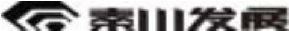

陕西秦川机械发展股份有限公司 2010 年年度报告全文
重要提示：本公司董事会、监事会及董事、监事、高级管理人员 保证本报告所载资料不存在任何虚假记载、误导性陈述或者重大遗漏， 并对其内容的真实性、准确性和完整性承担个别及连带责任。
国富浩华会计师事务所有限公司已审计本公司财务报告，并出具 标准无保留意见的审计报告。
公司负责人龙兴元先生、主管会计工作负责人付林兴先生及会计 机构负责人李霞女士声明：保证年度报告中财务报告的真实、完整。
目
录
第一章 | 公司基本情况简介 ............................................................. 2 |
第二章 | 会计数据和业务数据摘要 ................................................. 3 |
第三章 | 股本变动及股东情况 ......................................................... 5 |
第四章 | 董事、监事、高级管理人员和员工情况 .......................... 8 |
第五章 | 公司治理结构 ................................................................... 12 |
第六章 | 股东大会情况简介 ........................................................... 14 |
第七章 | 董事会报告 ....................................................................... 14 |
第八章 | 监事会报告 ....................................................................... 27 |
第九章 | 重要事项 ........................................................................... 27 |
第十章 | 财务报告 ........................................................................... 32 |
第一节 | 审计报告 ........................................................................ 32 |
第二节 | 会计报表 ......................................................................... 33 |
第三节 | 会计报表附注 ................................................................ 42 |
第十一章
备查文件目录 ............................................................... 99
第一章
公司基本情况简介
一、公司中文名称：陕西秦川机械发展股份有限公司
公司英文名称：Shaanxi Qinchuan Machinery development Co.,Ltd 英文名称缩写：Qinchuan
二、公司法定代表人：龙兴元
三、公司董事会秘书：谭 明
联系地址：陕西省宝鸡市姜谭路 22 号
联系电话：0917-3670748 传真：0917-3390960 电子信箱：tanming@qinchuan.com
四、公司证券事务代表：夏杰莉
联系地址：陕西省宝鸡市姜谭路 22 号
联系电话：0917-3670654 传真：0917-3390957 电子信箱：zhengquan@qinchuan.com
五、公司注册地址：陕西省宝鸡市姜谭路 22 号
邮政编码：721009
公司办公地址：陕西省宝鸡市姜谭路 22 号
邮政编码：721009
公司国际互联网网址：http://www.qinchuan.com 公司电子信箱：qinchuan@qinchuan.com
六、公司选定的信息披露报刊：《中国证券报》、《证券时报》
公司年度报告披露网站：http://www.cninfo.com.cn
公司年度报告备置地点：公司证券部 七、公司股票上市交易所：深圳证券交易所
股票简称：秦川发展 八、其他有关资料
股票代码：000837
公司首次注册登记：1998 年 7 月 10 日在陕西省工商行政管理局注册登记
企业法人营业执照注册号： 610000100146943
税务登记号码： 61030271007221X
公司聘请的会计师事务所名称：国富浩华会计师事务所有限公司
会计师事务所办公地址：北京市海淀区西四环中路 16 号院 2 号楼 4层
2009 年 | 本年比上年增减 （％） | 2008 年 | ||||
2010 年 | ||||||
调整前 | 调整后 | 调整后 | 调整前 | 调整后 | ||
营业总收入（元） | 1,432,330,085.71 | 1,138,910,927.94 | 1,138,910,927.94 | 25.76% | 1,085,294,040.69 | 1,085,294,040.69 |
利润总额（元） | 132,182,022.70 | 108,942,727.04 | 108,942,727.04 | 21.33% | 82,772,705.34 | 82,772,705.34 |
归属于上市公司股东 的净利润（元） | 106,546,857.97 | 92,553,160.26 | 92,694,132.16 | 14.94% | 64,873,431.69 | 64,883,513.19 |
归属于上市公司股东 的扣除非经常性损益 的净利润（元） | 100,031,046.84 | 85,732,206.32 | 85,873,178.22 | 16.49% | 61,247,345.92 | 61,257,427.42 |
经营活动产生的现金 流量净额（元） | 219,422,331.94 | 49,484,070.37 | 49,484,070.37 | 343.42% | 17,516,696.46 | 17,516,696.46 |
2009 年末 | 本年末比上年末 增减（％） | 2008 年末 | ||||
2010 年末 | ||||||
调整前 | 调整后 | 调整后 | 调整前 | 调整后 | ||
总资产（元） | 1,908,818,817.53 | 1,574,342,501.87 | 1,574,342,501.87 | 21.25% | 1,465,551,411.06 | 1,465,551,411.06 |
归属于上市公司股东 的所有者权益（元） | 1,006,382,069.36 | 918,035,622.64 | 919,028,673.43 | 9.50% | 819,429,127.90 | 820,281,206.79 |
股本（股） | 348,717,600.00 | 348,717,600.00 | 348,717,600.00 | 0.00% | 348,717,600.00 | 348,717,600.00 |
会计数据和业务数据摘要 | ||
一、主要会计数据 | 单位：元 | |
二、会计数据和业务数据摘要 | ||
1 主要会计数据 | 单位：（人民币）元 | |
2 主要财务指标 | 单位：（人民币）元 | |
4 |
第二章
营业利润 | 125,113,047.03 |
利润总额 | 132,182,022.70 |
归属于上市公司股东的净利润 | 106,546,857.97 |
经营活动产生的现金流量净额 | 219,422,331.94 |
归属于上市公司股东的扣除非经常性损益后的净利润 | 100,031,046.84 |
2009 年 | 本年比上年增 减（％） | 2008 年 | ||||
2010 年 | ||||||
调整前 | 调整后 | 调整后 | 调整前 | 调整后 | ||
基本每股收益（元/股） | 0.3055 | 0.2654 | 0.2658 | 14.94% | 0.1860 | 0.1861 |
稀释每股收益（元/股） | 0.3055 | 0.2654 | 0.2658 | 14.94% | 0.1860 | 0.1861 |
扣除非经常性损益后的基 本每股收益（元/股） | 0.2868 | 0.2458 | 0.2463 | 16.48% | 0.1756 | 0.1757 |
加权平均净资产收益率（%） | 11.10% | 10.69% | 10.70% | 0.40% | 8.26% | 8.25% |
扣除非经常性损益后的加 权平均净资产收益率（%） | 10.42% | 9.90% | 8.90% | 1.52% | 7.80% | 7.79% |
每股经营活动产生的现金 流量净额（元/股） | 0.6292 | 0.14 | 0.14 | 349.43% | 0.05 | 0.05 |
本年末比上年 末增减（％） | 2008 年末 | |||||
2010 年末 | 2009 年末 | |||||
调整前 | 调整后 | 调整后 | 调整前 | 调整后 | ||
归属于上市公司股东的每 股净资产（元/股） | 2.89 | 2.63 | 2.64 | 9.47% | 2.35 | 2.35 |
非经常性损益项目
√ 适用 □ 不适用
单位：（人民币）元
非经常性损益项目 | 金额 | 附注（如适用） |
非流动资产处置损益 | 1,433,701.88 | |
计入当期损益的政府补助，但与公司正常经营业务密切相关，符合 国家政策规定、按照一定标准定额或定量持续享受的政府补助除外 | 5,644,030.00 | |
债务重组损益 | -51,460.45 | |
除上述各项之外的其他营业外收入和支出 | 1,227,340.14 | |
其他符合非经常性损益定义的损益项目 | -1,250,700.00 | |
少数股东权益影响额 | -176,389.25 | |
所得税影响额 | -310,711.19 | |
合计 | 6,515,811.13 | - |
第三章
股本变动及股东情况
一、股份变动情况表
单位：股
本次变动前 | 本次变动增减（+，-） | 本次变动后 | |||||||
数量 | 比例 | 发行 新股 | 送股 | 公积金转 股 | 其他 | 小计 | 数量 | 比例 | |
一、有限售条件股份 | 93,013,861 | 26.67% | -92,935,348 | -92,935,348 | 78,513 | 0.02% | |||
1、国家持股 | 0 | 0.00% | 0 | 0.00% | |||||
2、国有法人持股 | 92,935,348 | 26.65% | -92,935,348 | -92,935,348 | 0 | 0.00% | |||
3、其他内资持股 | 0 | 0.00% | 0 | 0.00% | |||||
其中：境内非国有法人 持股 | 0 | 0.00% | 0 | 0.00% | |||||
境内自然人持股 | 0 | 0.00% | 0 | 0.00% | |||||
4、外资持股 | 0 | 0.00% | 0 | 0.00% | |||||
其中：境外法人持股 | 0 | 0.00% | 0 | 0.00% | |||||
境外自然人持股 | 0 | 0.00% | 0 | 0.00% | |||||
5、高管股份 | 78,513 | 0.02% | 78,513 | 0.02% | |||||
二、无限售条件股份 | 255,703,739 | 73.33% | 92,935,348 | 92,935,348 | 348,639,087 | 99.98% | |||
1、人民币普通股 | 255,703,739 | 73.33% | 92,935,348 | 92,935,348 | 348,639,087 | 99.98% | |||
2、境内上市的外资股 | 0 | 0.00% | 0 | 0.00% | |||||
3、境外上市的外资股 | 0 | 0.00% | 0 | 0.00% | |||||
4、其他 | 0 | 0.00% | 0 | 0.00% | |||||
三、股份总数 | 348,717,600 | 100.00% | 348,717,600 | 100.00% | |||||
2010 年 2 月 10 日，公司控股股东陕西秦川机床工具集团有限公司持有的限售流通股
92,935,348 已全部解除限售。
二、股东情况介绍
1、根据中国证券登记结算有限责任公司深圳分公司提供的数据，截至 2010 年 12 月
31 日止，本公司股东为 31397 名。
 2010 年年度报告全文 前 10 名股东持股情况：
2010 年年度报告全文 前 10 名股东持股情况：
股东总数 | 31,397 | ||||||
前 10 名股东持股情况 | |||||||
股东名称 | 股东性质 | 持股比 例 | 持股总数 | 持有有限售条 件股份数量 | 质押或冻结 的股份数量 | ||
陕西秦川机床工具集团有限公司 | 国有法人 | 26.65% | 92,935,348 | 0 | 0 | ||
中国工商银行－诺安股票证券投资基金 | 国有法人 | 4.47% | 15,589,475 | 0 | 0 | ||
中国光大银行股份有限公司－泰信先行策略开放式证券投资基金 | 国有法人 | 2.84% | 9,906,605 | 0 | 0 | ||
中国工商银行－申万巴黎新动力股票型证券投资基金 | 国有法人 | 2.78% | 9,690,863 | 0 | 0 | ||
中国农业银行－中邮核心成长股票型证券投资基金 | 国有法人 | 1.75% | 6,108,555 | 0 | 0 | ||
中国工商银行－申万巴黎新经济混合型证券投资基金 | 国有法人 | 1.67% | 5,815,239 | 0 | 0 | ||
通用资产管理公司－GEAM 信托基金中国Ａ股基金 | 国有法人 | 1.51% | 5,255,122 | 0 | 0 | ||
法国爱德蒙得洛希尔银行 | 国有法人 | 1.15% | 3,999,908 | 0 | 0 | ||
交通银行－普天收益证券投资基金 | 国有法人 | 0.75% | 2,599,925 | 0 | 0 | ||
华夏银行股份有限公司－东吴行业轮动股票型证券投资基金 | 国有法人 | 0.67% | 2,331,200 | 0 | 0 | ||
前 10 名无限售条件股东持股情况 | |||||||
股东名称 | 持有无限售条件股份数量 | 股份种类 | |||||
中国工商银行－诺安股票证券投资基金 | 15,589,475 | 人民币普通股 | |||||
中国光大银行股份有限公司－泰信先行策略开放式证券投资基金 | 9,906,605 | 人民币普通股 | |||||
中国工商银行－申万巴黎新动力股票型证券投资基金 | 9,690,863 | 人民币普通股 | |||||
中国农业银行－中邮核心成长股票型证券投资基金 | 6,108,555 | 人民币普通股 | |||||
中国工商银行－申万巴黎新经济混合型证券投资基金 | 5,815,239 | 人民币普通股 | |||||
通用资产管理公司－GEAM 信托基金中国Ａ股基金 | 5,255,122 | 人民币普通股 | |||||
法国爱德蒙得洛希尔银行 | 3,999,908 | 人民币普通股 | |||||
交通银行－普天收益证券投资基金 | 2,599,925 | 人民币普通股 | |||||
华夏银行股份有限公司－东吴行业轮动股票型证券投资基金 | 2,331,200 | 人民币普通股 | |||||
鸿阳证券投资基金 | 2,200,000 | 人民币普通股 | |||||
上述股东关联关系或一致行动的说 明 | 上述股东中，除中国工商银行－申万巴黎新动力股票型证券投资基金和中国工商银行－申万巴 黎新经济混合型证券投资基金为同一基金公司旗下基金产品外，其他各股东间关联关系未知。 | ||||||
3、公司控股股东简介
本公司控股股东为陕西秦川机床工具集团有限公司，其前身为秦川机床集团有限公司。
根据陕西省国有资产管理委员会 2006 年 11 月 15 日下发的陕国资发[2006]383 号文件《关 于组建陕西秦川机床工具集团有限公司的决定》，陕西省国资委以享有的秦川机床集团有限 公司的国有净资产以及拥有的汉江工具有限公司、汉江机床有限公司的国有股权，联合陕 西省投资公司等共同组建陕西秦川机床工具集团有限公司。2007 年 2 月 22 日，陕西秦川 机床工具集团有限公司已办理更名工商变更登记。
2010 年 9 月 14 日陕西秦川机床工具集团有限公司原有股东陕西省人民政府国有资产 监督管理委员会、陕西省产业投资有限公司、中国华融资产管理公司、中国东方资产管理 公司、中国长城资产管理公司、新远景成长（天津）股权投资合伙企业（有限合伙）以及 天津昆仑天创股权投资企业、邦信资产管理有限公司和华融渝富红杉（天津）股权投资企 业签署了《增资扩股协议》增资后其注册资本为 108535 万元人民币， 其股权结构如下： ① 陕西省国资委占该公司 30.181%股权；
② 陕西省产业投资公司占该公司 27.641%股权； ③天津昆仑天创股权投资企业占该公司 17.368%股权； ④中国华融资产管理公司占该公司 9.820%股权； ⑤华融渝富红杉（天津）股权投资企业占该公司 7.786%股权；
2010 年年度报告全文 ⑥中国长城资产管理公司占该公司 3.859%股权； ⑦邦信资产管理有限公司占该公司 2.764%股权； ⑧中国东方资产管理公司占该公司 0.296%股权； ⑨新远景成长（天津）股权投资企业占该公司 0.285%股权。 陕西秦川机床工具集团有限公司的主要业务和产品：机械设备、机床、刀具及检测设 备、液压件、液压系统、汽车零部件的制造；机械加工；数控系统及数控功能部件、塑料 机械及高分子新材料的研究、开发与制造；电子信息硬件、软件开发与生产；投资及投资 咨询；进出口贸易等。
4、公司与实际控制人之间的产权和控制关系
第四章
董事、监事、高级管理人员和员工情况
一、基本情况
姓名 | 职务 | 性 别 | 年 龄 | 任职起 始日期 | 任职终 止日期 | 年初持股 数 | 年末持股 数 | 变动原因 | 在股东单位 任职起止时间 |
龙兴元 | 董事长 | 男 | 48 | 2007-07 | 2011-04 | 64,515 | 64,515 | 2007.1-2010.12 | |
吴序堂 | 独立董事 | 男 | 75 | 2007-07 | 2011-04 | 0 | 0 | ||
薛云奎 | 独立董事 | 男 | 46 | 2007-07 | 2011-04 | 0 | 0 | ||
何雁明 | 独立董事 | 男 | 58 | 2009-08 | 2011-04 | 0 | 0 | ||
胡 弘 | 董事、总经理 | 男 | 51 | 2007-07 | 2011-04 | 0 | 0 | ||
刘庆云 | 董事 | 男 | 59 | 2007-07 | 2011-04 | 20,085 | 20,085 | 2007.1-2010.12 | |
黄之群 | 董事 | 男 | 59 | 2007-07 | 2010-06 | 0 | 0 | 2007.1-2010.6 | |
付林兴 | 董事、财务总监 | 男 | 46 | 2007-07 | 2011-04 | 0 | 0 | ||
马志云 | 董事、副总经理 | 男 | 47 | 2007-07 | 2011-04 | 20,083 | 20,083 | ||
王怀科 | 监事会主席 | 男 | 48 | 2007-07 | 2011-04 | 0 | 0 | ||
陆 军 | 监事 | 男 | 53 | 2007-07 | 2011-04 | 0 | 0 | ||
罗 军 | 监事 | 男 | 46 | 2007-07 | 2011-04 | 0 | 0 | ||
杭宝军 | 监事 | 男 | 46 | 2007-07 | 2011-04 | 0 | 0 | ||
高俊峰 | 监事 | 男 | 41 | 2007-07 | 2011-04 | 0 | 0 | ||
吴 康 | 副总经理 | 男 | 42 | 2007-07 | 2011-04 | 0 | 0 | ||
田 沙 | 副总经理 | 男 | 48 | 2007-07 | 2011-04 | 0 | 0 | ||
毛 丰 | 副总经理 | 女 | 46 | 2007-07 | 2011-04 | 0 | 0 | ||
谭 明 | 董事会秘书 | 男 | 56 | 2007-07 | 2011-04 | 0 | 0 |
注：胡弘先生因工作变动于 2011 年 1 月 10 日辞去总经理职务，但仍担任公司董事。
二、董事、监事和高级管理人员的辞职和增补的情况
1、公司增补董事、监事和高级管理人员的情况
本报告期公司未发生增补董事、监事和高级管理人员的情况
2、本报告期发生董事、监事及高级管理人员的辞职情况
公司董事黄之群先生因病于2010年6月4日逝世。
三、董事出席董事会会议情况
董事姓名 | 具体职务 | 应出席 次数 | 现场出 席次数 | 以通讯方式参 加会议次数 | 委托出席 次数 | 缺席次数 | 是否连续两次未 亲自出席会议 |
龙兴元 | 董事长 | 10 | 3 | 7 | 0 | 0 | 否 |
吴序堂 | 独立董事 | 10 | 3 | 7 | 0 | 0 | 否 |
薛云奎 | 独立董事 | 10 | 3 | 7 | 0 | 0 | 否 |
何雁明 | 独立董事 | 10 | 3 | 7 | 0 | 0 | 否 |
胡弘 | 董事、总经理 | 10 | 3 | 7 | 0 | 0 | 否 |
刘庆云 | 董事 | 10 | 2 | 7 | 1 | 0 | 否 |
黄之群 | 董事 | 6 | 1 | 5 | 0 | 0 | 否 |
马志云 | 董事、副总经理 | 10 | 3 | 7 | 0 | 0 | 否 |
付林兴 | 董事、财务总监 | 10 | 3 | 7 | 0 | 0 | 否 |
四、现任董事、监事、高级管理人员的主要工作经历和在除股东单位外的其他单位的 任职或兼职情况。
龙兴元先生，48 岁，中共党员，工学硕士，EMBA，高级工程师，享受国务院特殊津 贴，中共十七大代表。曾任秦川机床厂齿轮磨床研究所主任设计师、副总工程师、经营部
 2010 年年度报告全文 部长、厂长助理、机床厂厂长、秦川机床集团有限公司常务副总经理、杨凌秦川节水灌溉 设备工程有限公司总经理，深圳市秦众电子有限公司董事长、杨凌秦众电子信息有限公司 董事长。现任本公司董事长、公司子公司上海秦隆投资管理有限公司董事长、公司子公司 陕西秦川机械进出口有限公司董事长、公司子公司联合美国工业公司董事长、公司子公司 秦川美国工业公司董事长。
2010 年年度报告全文 部长、厂长助理、机床厂厂长、秦川机床集团有限公司常务副总经理、杨凌秦川节水灌溉 设备工程有限公司总经理，深圳市秦众电子有限公司董事长、杨凌秦众电子信息有限公司 董事长。现任本公司董事长、公司子公司上海秦隆投资管理有限公司董事长、公司子公司 陕西秦川机械进出口有限公司董事长、公司子公司联合美国工业公司董事长、公司子公司 秦川美国工业公司董事长。
吴序堂先生，本公司独立董事，75 岁，中国民主促进会成员，教授、博士生导师。1954 年 7 月毕业于苏南工业专科学校机械系；同年留校任教；1956 年 9 月在西安动力学院任教； 1957 年至今，在西安交通大学机械工程学院任教。现任中国机械工程学会传动分会理事； 曾任全国高校金属切削研究会副理事长兼西北分会理事长；《机械传动》杂志编委；《重型 机械》杂志编委。
主要学术及科研成果：出版专著两本《齿轮啮合原理》（机械工业出版社，1982 年）《非 圆齿轮及非匀速比传动》（机械工业出版社，1997 年）；参编了专著、教科书及手册多种《磨 齿工作原理》（1973 年）《金属切削刀具》（1985 年）《机械工程手册》（第二版，1996 年）
《齿轮手册》（第二版，2001）以上书籍均由机械工业出版社出版;在国内外学术刊物上发 表论文 100 篇以上。
《格里森制曲线锥齿轮啮合原理及机床调整》获陕西省高等学校科技成果一等奖。
（1985 年，独立完成）；《刹车凸轮轴数控铣床》获陕西省教委科技成果二等奖。（2000 年， 第二完成人）；《机械人才培养方案及课程体系的改革与实践》获陕西省教学成果一等奖 （2001 年，第三完成人）。
薛云奎先生，本公司独立董事，46 岁，中共党员，博士，博士生导师，中国注册会计 师。现任长江商学院副院长、会计学教授。历任上海国家会计学院副院长，上海财经大学 教授、博士生导师，上海财经大学会计学院副院长。兼任财政部国家会计学院教学指导委 员会副主任,上海市司法会计鉴定委员会副主任委员，中国注册会计师协会注册会计师和资 产评估师职业后续教育教材编审委员会委员,《会计研究》杂志特约编审，《中国注册会计 师》杂志编委会委员,中国会计教授会常务理事,中国中青年财务成本研究会常务理事,中国 金融会计学会理事等职务。主要从事会计、审计及相关学科领域的研究。
何雁明先生，本公司独立董事，58 岁，现任西安交通大学经济学院金融学教授，院学 术委员会成员，学院证券研究所副所长；并担任美国 NASDAQ 研究论坛会员，澳大利亚银行 家协会会员，中国注册会计师协会会员，陕西省上市公司协会顾问和上市公司协会独立董 事委员会主任，西安市人民政府参事。
刘庆云先生，59 岁，中共党员，大专，高级经济师。曾在企业从事宣传、管理等工作， 历任秦川机床厂厂办副主任、主任兼支部书记、计划处处长、生产处处长、总经理助理、  2010 年年度报告全文 秦川机床集团有限公司宝鸡仪表公司董事长兼总经理、深圳市秦众电子有限公司董事、杨 凌秦众电子有限公司董事、公司子公司陕西秦川格兰德机床有限公司董事长，现任本公司 董事、公司子公司陕西秦川物资配套有限公司董事长、上海秦隆投资管理有限公司董事。
2010 年年度报告全文 秦川机床集团有限公司宝鸡仪表公司董事长兼总经理、深圳市秦众电子有限公司董事、杨 凌秦众电子有限公司董事、公司子公司陕西秦川格兰德机床有限公司董事长，现任本公司 董事、公司子公司陕西秦川物资配套有限公司董事长、上海秦隆投资管理有限公司董事。
胡弘先生，51 岁，中共党员、大学本科，高级工程师。曾任秦川机床集团有限公司铸 造厂技术科科长，副厂长、厂长。现任本公司董事、总经理。
付林兴先生，46 岁，中共党员，研究生，高级会计师。曾任秦川机床集团有限公司资 金组组长、液压件厂主管会计、财务处副处长、处长，现任本公司董事、财务总监；公司 子公司上海秦隆投资管理有限公司董事、总经理。
马志云先生，47 岁，中共党员，研究生，高级工程师。曾任秦川机床厂齿轮磨床研究 所产品设计员、机床分厂副厂长、公司经营部部长、物资部部长、技改处处长、陕西秦川 格兰德机床有限公司董事、常务副总经理，现任本公司董事、副总经理。
王怀科先生，48 岁，中共党员、大学本科，高级工程师。曾任秦川机床集团有限公司 理化室主任，厂办秘书、经营部销售室主任、质管处处长、陕西秦川机械发展股份有限公 司液压件厂副厂长、厂长、党支部书记。现任本公司监事会主席、公司办公室主任。
杭宝军先生，46 岁，中共党员，研究生，高级工程师。历任公司热处理厂副厂长，公 司办公室主任兼党支部书记，公司子公司宝鸡秦川未来塑料机械有限责任公司董事长、陕 西秦川格兰德机床有限公司董事，秦川铸造厂厂长兼党支部书记。现任本公司监事。
高俊峰先生，41 岁，中共党员，工学学士。历任秦川机床厂齿轮分厂技术科长，泰州 市秦泰齿轮有限公司总经理、总工程师，陕西秦川机械发展股份有限公司外协管理处处长。 现任本公司监事、经营销售部副部长。
陆军先生，53 岁，中共党员，大专，经济师。历任秦川机床厂装配车间工段长、秦川 机床厂装配车间施工员、秦川机床厂机床分厂副厂长、陕西秦川机械发展股份有限公司机 床厂装配车间负责人、机床厂副厂长、生产制造部副部长，现任本公司职工监事、机床厂 厂长。
罗军先生， 46 岁，中共党员，大学本科，高级工程师。历任秦川机床厂铸造分厂技 术科副科长、秦川机床集团有限公司铸造厂副厂长，陕西秦川机械发展股份有限公司经营 部副部长、机床厂厂长，现任本公司职工监事。
吴康先生， 42 岁，中共党员，MBA，高级经济师。曾任秦川机床集团有限公司生产 处副处长、陕西秦川机械发展股份有限公司制造部部长、机床厂厂长。现任本公司副总经 理；公司子公司陕西秦川格兰德机床有限公司董事长。
田沙先生，48 岁，中共党员，大学本科，高级工程师。曾任秦川发展齿轮磨床研究所 设计室主任、电气车间主任、电子分公司负责人、秦川发展技术研究院常务副院长、院长，  2010 年年度报告全文 秦川发展销售部部长、总经理助理、总质量师兼秦川机床集团有限公司党委委员，现任本 公司副总经理、研究院院长、西安秦川数控系统工程有限公司董事长、杨凌秦众电子信息 有限公司董事长、陕西秦川精密数控机床工程研究公司董事长。
2010 年年度报告全文 秦川发展销售部部长、总经理助理、总质量师兼秦川机床集团有限公司党委委员，现任本 公司副总经理、研究院院长、西安秦川数控系统工程有限公司董事长、杨凌秦众电子信息 有限公司董事长、陕西秦川精密数控机床工程研究公司董事长。
毛丰女士，46 岁，中共党员，研究生学历。曾经从事过企业管理、人力资源管理等方 面的工作。历任西安高新技术产业开发区碑林科技产业园管理办公室人力资源部副部长、 部长、党委副书记兼纪委书记、副主任；西安市第十二、十三届人民代表大会代表并任法 制委员会委员；陕西秦川机械发展股份有限公司副总经济师。现任本公司副总经理、联合 美国工业公司副董事长、副总裁兼任财务总监。
谭明先生，56 岁，高级工程师，曾任秦川机床厂磨研所室主任，经销处处长、秦川机 床厂战略处副处长、秦川齿轮磨床研究所副所长、陕西秦川机械发展股份有限公司战略与 投资部部长、公司办公室主任，现任本公司董事会秘书、战略与投资部部长兼证券部部长； 公司子公司宝鸡秦川未来塑料机械有限责任公司董事。
五、年度报酬情况
董事、监事报酬的决策程序和确定依据是根据股东大会通过的《董事会、监事会成员 津贴实施办法》；
2004 年 3 月 26 日公司第二届董事会第十六次会议通过了董事会薪酬与考核委员会提 出的《高级管理人员薪酬考核实施办法》。公司以本年报中的财务数据为完成效益指标的考 核依据，根据公司《高级管理人员薪酬考核实施办法》对高级管理人员年薪进行了兑现。
（单位：万元）
姓名 | 职务 | 报告期内从公司领取 的报酬总额（万元） | 是否在股东单位或 其他关联单位领取 |
龙兴元 | 董事长 | 28.96 | 否 |
吴序堂 | 独立董事 | 5 | 否 |
薛云奎 | 独立董事 | 5 | 否 |
何雁明 | 独立董事 | 5 | 否 |
胡 弘 | 董事、总经理 | 25.97 | 否 |
刘庆云 | 董事 | 1.44 | 是 |
黄之群 | 董事（已故） | 0.72 | 是 |
付林兴 | 董事、财务总监 | 24.23 | 否 |
马志云 | 董事、副总经理 | 24.03 | 否 |
谭 明 | 董事会秘书 | 22.64 | 否 |
王怀科 | 监事会主席 | 1.44 | 是 |
陆 军 | 监事 | 21.24 | 否 |
罗 军 | 监事 | 0.72 | 是 |
杭宝军 | 监事 | 0.72 | 是 |
高俊峰 | 监事 | 13.40 | 否 |
吴 康 | 副总经理 | 22.58 | 否 |
毛 丰 | 副总经理 | 3.11 | 否 |
田 沙 | 副总经理 | 22.61 | 否 |
合计 | - | 228.81 | - |
吴序堂、薛云奎、何雁明、刘庆云、黄之群、王怀科、杭宝军、罗军不在本公司领取 薪酬，但在本公司领取董事、监事津贴。副总经理毛丰不在本公司领取薪酬。
六、员工情况
2010 年末本公司员工总数为 2257 人，其中一线生产人员 897 人，销售人员 96 人，技 术人员 593 人，财务人员 61 人。公司需承担费用的离退休职工的人数为 0。
第五章
公司治理结构
一、公司治理实际状况
本公司已按照有关法律、法规及规范性文件的要求，建立了完善的公司治理结构。公 司股东大会、董事会、监事会及董事会专门委员会的运作符合有关规范性文件的要求。
二、独立董事履行职责情况
1、公司已制定《陕西秦川机械发展股份有限公司独立董事工作制度》等制度，公司独 立董事能够严格按照上述制度的规定，勤勉尽责、忠实履行职务，积极出席会议，深入了 解公司的生产经营状况和重大事项进展情况，为公司的经营、发展从各自专业角度提出合 理的意见和建议，对董事会的科学决策，对公司的发展都起到了积极的作用，作为独立董 事，切实地维护了公司及广大公众投资者的利益。
2、根据中国证券监督管理委员会公告（2010）37号公告以及《公司独立董事年报工作 制度》的要求，公司独立董事积极履行职责，充分发挥其在公司年报审计工作中的作用， 主要内容有：（1）结合公司的实际情况，经与年报审计会计师事务所协商，确定了公司本 年度财务报告审计工作的时间安排，并制定了年报审计工作计划。（2）在年审会计师事务 所进场审计前，与年审注册会计师沟通了审计工作小组的人员构成、审计计划、风险判断、 风险及舞弊的测试和评价方法、本年度审计重点。（3）听取了公司财务负责人对公司本年 度财务状况和经营成果的汇报。（4）对年审注册会计师进场前公司编制的财务会计报表进 行了审阅，认为：财务会计报表如实地反映了公司的2010年度末财务状况和2010年度经营 成果。（5）在年审注册会计师出具初审意见后再次审阅了公司财务会计报表，认为：财务 会计报表真实、客观地反映了公司2010 年度的财务状况和经营成果。（6）独立董事履行 了与年审注册会计师见面的职责，对审计过程中的一些问题进行了沟通。
3、独立董事出席董事会发表意见的情况：
报告期内独立董事均出席任职以来的各次会议，并就关联交易、聘请会计师事务所、 对外担保、2010年预计关联交易、内部控制自我评价报告、聘请会计师事务所、变更坏账 准备计提比例、子公司进行证券投资发表了独立意见。
 2010 年年度报告全文 4、独立董事对公司有关事项提出异议的情况
2010 年年度报告全文 4、独立董事对公司有关事项提出异议的情况
报告期内公司独立董事对公司本年度董事会各项议案及公司其它事项均没有提出异 议。
三、公司与控股股东在业务、人员、资产、机构、财务等方面的分开情况 1、业务独立、资产完整
本公司拥有独立的生产加工系统、辅助生产系统和部分配套设施。本公司具有独立的 技术开发能力和生产所必须的专有技术，不依赖控股股东。本公司拥有完整的生产经营性 资产，能够独立经营，具有面向市场的生产经营能力。由于历史原因，目前公司使用的商 标为陕西秦川机床工具集团有限公司拥有, 本公司与之签订了无偿使用许可合同。土地使 用权采用租赁形式，本公司与陕西秦川机床工具集团有限公司签订了土地使用权租赁合同。
2、人员独立、机构独立
公司与控股股东陕西秦川机床工具集团有限公司在人员上完全独立，设立有劳动人事 部门负责公司的劳动人事及公司工资管理工作，公司总经理、副总经理、董秘、财务总监 及核心技术人员在本公司领取薪酬。
在机构方面，本公司设置的机构，特别是财务、采购、营销等机构均独立于陕西秦川 机床工具集团有限公司，陕西秦川机床工具集团有限公司与本公司所属部门无上下级关系。
3、财务独立
本公司财务人员独立，未在陕西秦川机床工具集团有限公司担任职务。公司设立了独 立的财务部门，有独立的财务核算体系和管理制度，并开设独立的银行账户。
四、公司财务报告内部控制制度的建立和运行情况。
公司建立了一系列财务报告内部控制制度，还制定了《年报重大差错责任追究制度》
并严格按照制度执行。在执行过程中，公司根据相关规定和公司情况不断完善财务报告内 部控制制度，使之更有利于保证公司财务报告的真实、准确和完整。经自查本年度公司未 发现财务报告内部控制重大缺陷。
五、公司治理活动的开展情况
1、董事会关于内部控制制度的自我评价报告
董事会认为，报告期内公司现有的内部控制制度符合国家法律法要求，符合公司当前 生产经营实际情况需要，在经营管理的各个过程、各个关键环节起到了较好的控制和防范 作用。随着公司不断做强做大，对公司的内控制度提出了更高要求，公司将不断总结经验， 完善内部控制制度，强化规范运作意识，加强内部监督机制，促进公司健康、快速的发展。
（《董事会关于内部控制制度的自我评价报告》详见公司与年报同时刊登的公告)
2、监事会关于内部控制制度的评价报告
 2010 年年度报告全文 根据并对照深圳证券交易所《上市公司内部控制指引》等有关规定，公司监事会对公 司内部控制自我评价发表意见如下：
2010 年年度报告全文 根据并对照深圳证券交易所《上市公司内部控制指引》等有关规定，公司监事会对公 司内部控制自我评价发表意见如下：
（1）公司根据中国证监会、深圳证券交易所的有关规定，遵循内部控制的基本原则， 按照自身的实际情况，建立健全了覆盖公司各环节的内部控制制度，保证了公司业务活动 的正常进行，保护公司资产的安全和完整。
（2）公司内部控制组织机构完整，内部审计部门及人员配备齐全到位，保证了内部控 制重点活动的执行及监督充分有效。
（3）本年度，公司未有违反深圳证券交易所《上市公司内部控制指引》及公司内部控制 制度的情形发生。
综上所述，监事会认为，公司内部控制自我评价全面、真实、准确，反映了公司内部 控制的实际情况。
3、独立董事对公司内部控制制度的评价报告
报告期内，公司董事会按照深圳证券交易所《上市公司内部控制指引》的要求，进一 步完善了一系列公司管理制度，形成了以业务控制制度、会计系统控制制度、信息披露制 度、内部审计控制制度为基础的、完整严密的公司内部控制制度体系。独立董事认为公司 《2010年内部控制自我评价报告》较全面、客观地反映了公司2010年度内部控制工作的实 际情况。希望公司进一步增强内控意识，并定期不定期地进行自查，如若发现内部控制中 出现的问题，及时进行整改，不断健全完善内部控制机制，确保公司持续健康发展。
第六章
股东大会情况简介
报告期内共召开一次股东大会，具体如下：
2009 年年度股东大会
2010 年 4 月 22 日上午，公司 2009 年年度股东大会在公司本部办公楼五楼会议室召开。
会议审议通过了公司《2009 年董事会工作报告》、《2009 年监事会工作报告》、《财务报告》 等议案。
本次会议的决议公告刊登在 2010 年 4 月 23 日《中国证券报》、《证券时报》及巨潮资 讯网上。
第七章
董事会报告
2010 年度，公司经营整体呈高位运行态势，上半年，国内汽车和工程机械行业加大投 入，市场需求明显加大。下半年保持了经营高位运行。公司主导产品产销两旺，磨齿机产
 2010 年年度报告全文 品由公司主导产品产销两旺，磨齿机产品呈现批量订货的趋势。对此，公司积极采取措施, 合理配备各生产要素，加强内部管理，及时调整作业计划，保证了交货期，保持了生产经 营的持续、稳步发展。公司 2010 年完成营业收入 14.32 亿元，实现利润总额 1.32 亿元。
2010 年年度报告全文 品由公司主导产品产销两旺，磨齿机产品呈现批量订货的趋势。对此，公司积极采取措施, 合理配备各生产要素，加强内部管理，及时调整作业计划，保证了交货期，保持了生产经 营的持续、稳步发展。公司 2010 年完成营业收入 14.32 亿元，实现利润总额 1.32 亿元。
一、报告期内公司的经营情况
1、主营业务的范围及其经营状况
主营业务范围：精密数控机床、塑料机械、精密齿轮件、液压件、液压系统、电梯 曳引机及特种齿轮箱。
2010 年，公司继续坚持以高端技术与管理、高端市场和高市场占有率为目标的“三高 战略”，坚持“三精优势”，坚持走差异化发展路线，坚持“精密、大型、高效、复合、环 保”的产品发展方向，积极承担国家级研发项目，持续研发高端产品，不断强化技术领先
优势。先后完成了 QLC001 齿轮量仪、QMK008 拉刀磨床、QMK009 螺伞磨、QJK002 铣
齿机、VMT100T、VMT80 立式铣车复合加工中心、VG150 立磨、QJG001 精密镗铣床、 YK7380A 等 12 项新产品的开发任务
在关键设备方面，针对风电增速箱列装的核心装备，从 VTM（180/260/320）系列动梁 式重型车铣镗重型复合加工中心、YKC 系列（Φ800-Φ2000）大规格高速滚齿机，到 YK 系 列（Φ800-Φ2000）大规格高效数控磨齿机、VT 系列（Φ2000）的大立车等，形成了系列化 开发和销售；同时，还针对核电装备的关键工艺，承接了核岛反应堆加工的专用深孔钻削 设备。
2010 年,公司加大技术改造力度，继续实施了一系列扩能升级改造项目，主要有：(1) 成形磨齿机项目。项目投资 1756 万元，主要建设内容为：新增立式加工中心、GD350 滚齿 机（日本）、CS6140 车床、M7120E 平面磨床、2 米数控铣齿机、3 米进口齿轮测量机等加 工设备和检测设备，再次提高了公司生产能力。投资近 400 多万元对齿轮车间进行了恒温 改造，并已投入使用。(2)龙门复合加工中心项目。2010 年共投资 8028 万元，主要建设内 容为：新建 23000 ㎡重型联合厂房，并于 2010 年 10 月竣工投入使用。该厂房的投用为公 司重型装配提供了可靠保障。新增大型关键设备 10 台，最大起吊重量 80 吨，极大的缓解 了公司大型机床的大件加工、整机装配等工序能力瓶颈，为下一步释放产能奠定了基础。
2010 年公司组团先后参加西安、南京和北京机床展会，尤其是参加第十二届上海工博 会，不仅提高了秦川品牌的对外整体形象和知名度，而且加大了各子公司之间信息传递量， 秦川发展也充分利用了集团层面的销售协同资源，使秦川在为客户提供成套工艺解决方案 方面的实力进一步提升。在西安、南京、北京展会的推动下，连续 4、5、6 月订货过亿元， 合同承接再创新高。
2010 年，公司抓住乘用车变速箱齿轮工艺升级的历史机遇。根据轿车齿轮小模数、大
 2010 年年度报告全文 批量的特点，YK7236 课题组对机床做了相应的改进，设计开发了 YK7236A（T3）和 YK7236B （T2）两种规格的磨齿机，并根据其齿轮加工的特点制定了合理的工艺方案，大幅提高了 机床效率，满足了乘用车高精度变速箱的批量加工要求。6 月份，比亚迪汽车一次订购公 司 YK7236A/B 磨齿机以及配套的数控外圆磨床等设备金额逾 2 亿元，成为公司历史上齿轮 磨床一次成交金额最大的单笔合同，到年底，交货和回款均按期执行。
2010 年年度报告全文 批量的特点，YK7236 课题组对机床做了相应的改进，设计开发了 YK7236A（T3）和 YK7236B （T2）两种规格的磨齿机，并根据其齿轮加工的特点制定了合理的工艺方案，大幅提高了 机床效率，满足了乘用车高精度变速箱的批量加工要求。6 月份，比亚迪汽车一次订购公 司 YK7236A/B 磨齿机以及配套的数控外圆磨床等设备金额逾 2 亿元，成为公司历史上齿轮 磨床一次成交金额最大的单笔合同，到年底，交货和回款均按期执行。
2010 年，公司又成功申报 2011 年国家科技重大专项 2 项（“高效、精密齿轮、齿圈磨 齿机”、“数控螺旋锥齿轮磨床”）；陕西省 13115 科技创新工程项目 1 项（“YK39250 大规格 数控高效内齿轮铣齿机研制、大型数控圆锥齿轮铣齿机”）。公司“适用于大批量精密齿轮 磨削的数控蜗杆砂轮磨齿机技术及产品”项目继年初获国家科技进步二等奖之后，又获得 “国家工业大奖项目表彰奖”，重大专项产品“大型数控圆锥齿轮磨齿机”获得了“第十二 届中国国际工业博览会”最高奖——金奖。2010 年 12 月，陕西省委人才工作领导小组决 定在公司建立“陕西省院士专家工作站”，使公司在高端人才的引进和利用方面迈上新的台 阶。
2、公司主营业务按行业及地区构成情况
（1）公司主营业务收入按行业分布资料
单位：万元
主营业务分行业情况 | ||||||
分行业或分产品 | 营业收入 | 营业成本 | 毛利率（%） | 营业收入比 上年增减（%） | 营业成本比 上年增减（%） | 毛利率比上年 增减（%） |
机床类 | 77,060.62 | 52,853.79 | 31.41% | 16.44% | 18.99% | -1.48% |
进出口贸易 | 19,018.30 | 17,631.03 | 7.29% | 74.85% | 76.38% | -0.81% |
原材料贸易 | 18,744.74 | 18,315.69 | 2.29% | 94.22% | 93.62% | 0.30% |
（2）公司主营业务收入按地区分布资料
单位：万元
地区 | 营业收入 | 营业收入比上年增减（%） |
陕 西 | 72,653.03 | 45.84% |
上 海 | 26,522.28 | 4.43% |
北 京 | 20,580.06 | 14.99% |
3、主要控股公司的经营情况及业绩
陕西秦川格兰德机床有限公司。注册资本：7,082 万元人民币；主营范围：外圆磨床系 列产品及其他机械制造类产品的研发、生产与销售。本公司拥有该公司 77.58%的股权。本 年度完成营业收入 13,093 万元，实现净利润 154 万元。
陕西秦川机械进出口有限公司。注册资本：1,000 万元人民币，主营范围：商品和技术 的进出口。为本公司全资子公司。本年度完成主营业务收入 21,951 万元，实现净利润 246 万元。
陕西秦川物资配套有限公司，注册资本：2,200 万元人民币，主要为公司生产提供物资 配套服务，本公司拥有其 59.09％的股权。本年度完成营业收入 37,007 万元，净利润 397 万元。
宝鸡秦川未来塑料机械有限责任公司。注册资本：4,366 万元人民币；主营范围：塑料
 2010 年年度报告全文 机械设备、天然纤维复合材料、型材高分子新材料、工业应用软件的研发、生产与销售。
2010 年年度报告全文 机械设备、天然纤维复合材料、型材高分子新材料、工业应用软件的研发、生产与销售。
本公司拥有该公司 72.51%的股权。本年度完成营业收入 17,024 万元，实现净利润 198 万元。
联合美国工业公司（UAI）。主营范围:拉床和拉刀的工艺、设计、制造及服务，本公司 原拥有该公司 60%的股权，2010 年 12 月 28 日公司全资子公司 QCA 收购 UAI 公司的 40 ％的股权后，本公司和全资子公司 QCA 合计持有该公司 100％的股权。本年度 UAI 公司完 成主营业务收入 2,974 万元，净利润-50 万元。
秦川美国工业公司（简称 QCA，公司的全资子公司），本年度完成收入 226 万元，净 利润-200 万元。
4、主要供应商、客户情况
报告期内公司前五名供应商合计的采购金额为 34,986 万元，占年度采购总额的 34.62%。 公司向前五名客户销售收入总额为 19,684 万元，占公司本期全部销售收入的 13.74%。
5、经营中出现的问题与困难及解决方案
2010 年度，公司经营整体呈高位运行态势。受国内制造业结构调整和产业升级带动， 市场需求明显加大，上半年订单快速增长，公司主导产品产销两旺，磨齿机产品呈现批量 订货的趋势。同时由于重大专项产品的攻坚、风电增速箱的试制及上海工博会参展新产品 的制造，对公司主导产品磨齿机的生产能力造成了一定的影响，确保交货期成为公司第一 任务。为此公司通过以下措施进行应对：
（1）加大技术改造力度，进行扩能升级改造。实施磨齿机技改项目，新增立式加工中 心、GD350 滚齿机（日本）、CS6140 车床、M7120E 平面磨床、2 米数控铣齿机、3 米进口 齿轮测量机等加工设备和检测设备，提高了公司生产能力。
公司还建设了龙门复合加工中心项目，新建 23000 ㎡重型联合厂房，并于 2010 年 10 月竣工投入使用。该厂房的投用为公司重型装配提供了可靠保障。新增大型关键设备 10 台， 最大起吊重量 80 吨，极大的缓解了公司大型机床的大件加工、整机装配等工序能力瓶颈， 为下一步释放产能奠定了基础。
（2）增加和充实销售服务人员，加强华东售后服务中心职能，将其服务范围覆盖到华 东、华北和东北等地区，减少机床厂装配人员外出调试工作，保证一线装配人员数量。如 北京分公司通过外聘服务人员，缓解了设备调试工作的压力。另外公司也加快生产一线尤 其是装配人员的培训工作，也收到明显效果。
（3）公司坚持在五大销售分公司推行 N+3 商品需求信息月报表、分公司月报表和销 售员信息日报表工作制度，以保证公司建立客户档案信息来源的准确性，提高了公司商品 计划信息来源的科学性。
（4）协调并督促公司加快 YK7236B、YK7230、YK7250A 蜗杆砂轮磨齿机等新产品
 2010 年年度报告全文 研制和改进步伐，力争进一步扩大轿车和工程机械行业对高效高精度磨齿机的市场需求份 额。
2010 年年度报告全文 研制和改进步伐，力争进一步扩大轿车和工程机械行业对高效高精度磨齿机的市场需求份 额。
（5）启动了机床可靠性管理体系建设工作。把产品的可靠性提高到系统工程的高度来 考虑，并进行了一些有益的探索。
另外，公司将原秦川曳引机厂、秦川特种齿轮箱厂和秦川齿轮厂三厂合并成立新的秦 川齿轮传动厂，搭建四位一体的经营模式，以期缩短产品研发和生产周期，提高市场反映 速度，进一步提高齿轮传动零部件业务的效益。
二、公司财务状况
单位：元
2010 年末 | 2009 年末 | 本年末比上年增减（％） | |
货币资金 | 426,582,603.50 | 294,783,113.61 | 44.71 |
在建工程 | 122,237,624.31 | 89,577,153.41 | 34.46 |
应付票据 | 53,046,386.60 | 24,900,000.00 | 113.04 |
预收款项 | 233,538,457.99 | 88,225,326.93 | 164.71 |
应付职工薪酬 | 8,454,991.99 | 3,335,515.62 | 153.48 |
长期借款 | 0.00 | 86,000,000.00 | -- |
专项应付款 | 27,122,748.18 | 3,325,924.82 | 715.49 |
其他非流动负债 | 10,300,000.00 | 0.00 | -- |
资产减值损失 | 4,145,399.01 | 14,340,401.78 | -71.09 |
增减变化的原因：
（1）货币资金期末账面余额较年初账面余额增加 131,799,489.89 元，增长 44.71%，主 要是本期销售收入增加，预收货款增加，以及收到国家专项拨款增加所致。
（2）在建工程期末账面余额较年初账面余额增加 32,660,470.90 元，增长 36.46%，主 要原因是本期公司对数控成型砂轮磨齿机、龙门式复合加工中心及职工公寓等工程项目资 金的投入所致。
（3）应付票据期末账面余额较年初账面余额增加 28,146,386.60 元，增长 113.04% 。 主要原因是公司本期加大应付票据支付力度所致。
（4）预收账款期末账面余额较年初账面余额增加 145,313,131.06 元，增长比例为
164.71%，主要原因系本期预收的货款增加所致。
（5）应付职工薪酬期末账面余额较年初账面余额增加 5,119,476.37 元,增长比例为
153.48%，主要原因为本期效益增长计提的效益工资增加所致。
（6）长期借款期末较期初余额减少 86,000,000.00 元，期末余额为零，是由于长期借 款在下一年全部到期，重分类到一年内到期的非流动负债所致。
（7）专项应付款期末账面余额较年初账面余额增加 23,796,823.36 元，增长比例为
715.49%，主要原因系本期收到国家财政部科技重大专项拨款所致。
（8）其他非流动负债期末账面余额较年初账面余额增加 10,300,000.00 元，主要原因
 2010 年年度报告全文 系本期收到政府补助资金暂计递延收益所致。
2010 年年度报告全文 系本期收到政府补助资金暂计递延收益所致。
（9）资产减值损失本期发生数比上期发生数减少 10,195,002.77 元，降低 71.09% 。 主要原因是上年会计估计变更提高了坏账准备计提比例，上年计提坏账准备金额增加，本 度按正常计提所致。
三、生产经营环境、宏观政策变化对公司的影响
生产经营环境、宏观政策变化对公司无重大影响。
四、新年度业务计划
2011 年是国家“十二五”的开局之年，目前全球经济正在复苏，国内汽车、高铁、航 空航天、新能源等产业的快速崛起将带动机床工具行业的发展。同时，国家战略性新兴产 业已将高端装备制造业纳入其中，智能制造、绿色制造和服务型制造成为主要发展方向为， 这些因素都将为公司带来一个更好的发展环境。
根据对发展环境的分析以及我们现有的产品合同承接情况，我们判断 2011 年公司仍将 保持稳健增长的态势。针对当前的经营形势和公司的发展要求，我们提出了 2011 年的基本 经营目标是实现营业收入 16 亿元，实现利润总额 1.45 亿元，公司将抓住机遇，努力实现 更好的经营增长。上述基本经营目标并不代表公司对 2011 年度的盈利预测，能否实现与外 部环境的变化和内部条件的完善状况以及经营团队的努力程度等多种因素有关，存在一定 的不确定性。
(一)、加快产品结构调整，加大批量订单抢抓力度
目前市场需求已经完全恢复，2011 年应当围绕调整优化产业结构，集聚资源、强化主 业、发展辅业，一方面继续紧跟国家产业政策调整趋势，加速产品结构优化升级，加快高 端新产品的市场进入。另一方面加大市场开拓力度、抢抓订单特别是批量订单，加紧培育 一批新的战略性、规模性的用户群；
(二)、充分利用现有产能，精心组织协调生产
2011 年公司主要产品的生产任务依然饱满，特别是核心产品磨齿机的产量预计将继续 增长，产能不足依然是影响目标实现的主要障碍。虽然重型联合厂房等一些重大技改项目 正在逐步投入使用，但这些对公司现有机床类产品的产能扩张作用不大。同时，由于集团 公司风电增速箱项目也到了攻坚阶段，逐步进入批量化生产阶段，在其产能尚未建立之前， 公司将承担必要的加工业务，因此产能力（设备、人员能力）不足的情况将进一步凸显。 因此，如何加大产能协调力度，合理调配资源，有效利用现有产能和外协资源，适度调整 生产方向，保证产品交货期是今年摆在我们面前的艰巨任务。对此，公司将采取一些具体 措施来加以解决：1）进一步强化计划、协调能力，强化技术、生产和销售系统的互动，提 高整体系统效率；2）加大对外协单位的技术指导，使其能够承担更多的加工业务，包括一
 2010 年年度报告全文 些较关键零件的加工，缓解内部能力不足；3）加强对关键设备的维护检修，将故障消灭在 萌芽状态，避免关键设备出现重大故障而影响生产；4）通过作业瓶颈分析，加速实施一些 短平快的技改项目，缓解局部能力不足矛盾；5）各销售分公司要积极外聘设备安装调试人 员，尽量减少对公司本部相关能力的冲击。
2010 年年度报告全文 些较关键零件的加工，缓解内部能力不足；3）加强对关键设备的维护检修，将故障消灭在 萌芽状态，避免关键设备出现重大故障而影响生产；4）通过作业瓶颈分析，加速实施一些 短平快的技改项目，缓解局部能力不足矛盾；5）各销售分公司要积极外聘设备安装调试人 员，尽量减少对公司本部相关能力的冲击。
(三)、加快进入新产业新领域，合理利用新增产能 2011 年，重型联合厂房等一些前期重大项目将进入正式生产阶段，这将大大缓解产能 压力。我们应当加快龙门复合式加工中心等产品的市场开发，合理利用项目落成带来的新 能力，加快项目产品产出，为公司增加新的经济增长点。
(四)、加紧推进重大专项，力求早日创造效益 我们针对航空航天、新能源、船舶机车、汽车等主要行业的需求，2009 年申报的国务 院“高档数控机床与基础制造装备”科技重大专项已经取得阶段性进展，2010 年新申报的 项目正在进行审批当中。2011 年将加紧推进这些项目，使这两批项目尽快推出可靠稳定的 实体产品，尽快形成销售收入和利润。
五、审计委员会的履职情况
1、董事会审计委员会工作情况
公司董事会审计委员会，由3名董事组成，其中独立董事2名，主任由会计专业人士、 公司独立董事薛云奎先生担任。董事会审计委员会成立以来，协助董事会认真履行职责。 本报告期的主要工作有：
（1） 审查公司内部控制制度的建立健全及执行情况 报告期，公司继续完善公司内部控制制度，董事会审计委员会对公司内控制度进行了 认真审核，认为公司的内控制度已基本建立健全，符合有关法律法规的要求。公司内部控 制制度能够得到有效的执行。
（2） 负责公司内部审计工作
报告期，公司审计委员会领导内审工作小组开展内部审计工作，监督和评价本公司及 投资企业的经营活动、财务收入的真实性、合法性和效益性；对公司内部控制运行情况进 行检查和监督，定期检查公司内部控制缺陷、评估其执行的效果和效率，并及时提出改进 建议。
（3） 审查公司的重大事项及其披露
报告期，公司审计委员会对公司在关联交易及信息披露等方面的制度执行情况进行了 重点审查，对交易定价、对2010年的财务状况、经营成果的影响等方面予以了关注。
（4） 2010年年报相关工作
2010年年度审计过程中，董事会审计委员会认真履行职责，根据《陕西秦川机械发展
 2010 年年度报告全文 股份有限公司董事会审计委员会工作细则》的具体要求，做了以下工作：
2010 年年度报告全文 股份有限公司董事会审计委员会工作细则》的具体要求，做了以下工作：
①根据《中国证券监督管理委员会公告〔2010〕37号》的要求，审议通过了《董事会 关于内部控制自我评价报告》，认为公司现有的内部控制制度符合国家法律法规的要求， 符合公司当前生产经营实际情况需要，在经营管理的各个过程、各个关键环节起到了较好 的控制和防范作用。审计委员会认为董事会内部控制评价报告反映了公司内部控制的实际 情况。
②根据公司年度审计工作安排及相关资料，审计委员会与国富浩华会计师事务所有限 公司协商确定审计工作的时间安排，共同编制了《2010年度审计工作计划表》，确定了公 司2010 年度审计工作的计划、本年度的审计重点、测试和评价方法及会计师事务所的人员 构成等内容。
③在会计师事务所审计工作团队正式进场审计前，审计委员会提前审阅了公司编制的 未审会计报表，形成了书面意见，同意以此报表为基础开展审计工作； ④在审计过程中保持与年审会计师的沟通，及时交换意见，并督促会计师按计划提交 审计报告；
⑤2011年2月18日在审计会计师出具初审意见后，董事会审计委员会再次审阅公司2010 年度会计报表，认为经国富浩华会计师事务所有限公司初审的公司的财务会计报表基本反 映了公司2010 年末的资产负债情况和2010年度的生产经营成果，同意国富浩华会计师事务 所有限公司以此财务报表为基础继续进行公司的审计工作。
⑥2011年2月23日在审阅了2010年度的审计报告后，董事会审计委员认为经审计的2010 年度财务会计报表真实、准确、客观、完整地反映了公司的经营状况，董事会审计委员会 成员一致同意将此报告提交公司董事会审核。
⑦董事会审计委员会对国富浩华会计师事务所有限公司从事本年度的审计工作进行了 客观的评价，认为国富浩华会计师事务所有限公司在2010年度审计工作中，计划安排详细， 派驻的审计人员工作勤勉尽责，执业质量较高，信誉好，能够胜任本次审计工作。
⑧董事会审计委员会认为国富浩华会计师事务所有限公司在2010年度审计工作中，工 作勤勉尽责，执业质量较高，向董事会就下一年度聘请会计师事务所提出意见：建议续聘 国富浩华会计师事务所有限公司为公司2010的审计机构。
六、董事会日常工作情况
(1)、本报告期共召开董事会4次，具体如下：
① 第四届董事会第十二次会议于2010年3月23日在公司本部会议室召开，会议审议并 通过了2009年年度报告、利润分配方案等议案。
 2010 年年度报告全文 会议决议刊登在2010年3月25日的《中国证券报》和《证券时报》及巨潮资讯网上。
2010 年年度报告全文 会议决议刊登在2010年3月25日的《中国证券报》和《证券时报》及巨潮资讯网上。
② 第四届董事会第十三次会议于2010年4月25日以通讯方式召开，会议审议通过了 2010年第一季度报告、证券投资管理办法等相关议案。
会议决议刊登在2010年4月27日的《中国证券报》和《证券时报》及巨潮资讯网上。
③ 第四届董事会第十四次会议于2010年8月14日在西安曲江惠宾苑宾馆召开，会议审 议通过了2010年半年度报告。
④ 第四届董事会第十五次会议于2010年10月26日在公司本部会议室召开，会议审议通 过了2010年第三季度报告等议案。
会议决议刊登在2010年8月28日的《中国证券报》、《证券时报》及巨潮资讯网上。
(2)、本报告期共召开临时董事会6次，具体如下： ① 陕西秦川机械发展股份有限公司第四届董事会临时会议于2010年1月12日以通讯方 式召开，会议审议通过了财务部提交的《关于秦川发展2010年安排银行综合授信额度的议 案》。
② 陕西秦川机械发展股份有限公司第四届董事会临时会议于2010年2月5日以通讯方 式召开，会议审议通过了财务部提交的《关于变更坏账准备计提比例的建议》
会议决议刊登在2010年2月6日的《中国证券报》、《证券时报》及巨潮资讯网上。
③陕西秦川机械发展股份有限公司第四届董事会临时会议于2010年6月25日以通讯方 式召开，会议审议通过了《关于对外报送未公开信息的议案》、《秦川发展内幕知情人登 记制度（修订草案）》；
会议决议刊登在2010年6月29日的《中国证券报》、《证券时报》及巨潮资讯网上。
④陕西秦川机械发展股份有限公司第四届董事会临时会议于2010年8月10日以通讯方 式召开，会议审议同意向陕南灾区捐款80万元。
⑤陕西秦川机械发展股份有限公司第四届董事会临时会议于2010年11月25日以通讯方 式召开，会议审议通过《关于2010-2011安排银行综合授信额度的建议》、《向秦川机床工 具集团江苏风电分公司销售产品》、《上海秦隆投资管理有限公司投资理财议案》、《关 于由QCA收购kokmeyer家族持有的UAI40％的股份的项目建议》议案。
会议决议刊登在2010年11月26日的《中国证券报》、《证券时报》及巨潮资讯网上。
⑥陕西秦川机械发展股份有限公司第四届董事会临时会议于2010年12月31日以通讯方 式召开，经审议董事会同意受让宝鸡秦川未来塑料机械有限责任公司其他股东持有的股权。
会议决议刊登在2011年1月4日的《中国证券报》、《上海证券报》、《证券时报》及 巨潮资讯网上。
七、报告期公司利润分配方案
公司 2010 年度实现的归属于母公司的净利润 106,546,857.97 元；以母公司本期实现的净
利润 101,711,924.23 元为基数，提取 10%的盈余公积金 10,171,192.42 元，本期可供股东分配 的利润为 91,540,731.81 元，加上上年度结余的未分配利润 402,873,109.93 元，减去 2010 年实 施 2009 年度利润分配方案分配的现金红利 20,923,056.00 元，实际可供股东分配的利润合计
为 473,490,785.74 元。
董事会提议，以公司 2010 年末的总股本 348,717,600 为基数,向全体股东按每 10 股派发 现金红利 0.80 元(含税)，共计分配现金红利 27,897,408.00 元（含税），剩余利润结转下一年 度。本年度不实施送股及资本公积转增股本。
公司前三年现金分红情况
单位：（人民币）元
分红年度 | 现金分红金额（含税） | 分红年度合并报表中归属于 上市公司股东的净利润 | 占合并报表中归属于上市 公司股东的净利润的比率 | 年度可分配利润 |
2009 年 | 20,923,056.00 | 92,694,132.16 | 22.57% | 68,214,514.28 |
2008 年 | 0.00 | 64,873,431.69 | 0.00% | 66,191,707.44 |
2007 年 | 0.00 | 77,842,680.78 | 0.00% | 71,439,139.57 |
最近三年累计现金分红金额占最近年均净利润的比例（%） | 26.66% | |||
八、《内幕信息知情人管理制度》执行情况
报告期内，公司强化了内幕信息知情人的登记管理制度和监督检查工作，规范重大信 息的内部流转程序，保证信息披露的公平。切实避免内幕信息外泄和内幕交易行为的发生。 公司严格执行内幕信息知情人管理制度及相关制度，禁止内幕信息知情人在影响公司股价 的重大敏感信息披露前买卖公司股份。通过自查，未发现公司内幕信息知情人在敏感期买 卖公司股票的行为。
九、 董事会对于内部控制责任的声明
公司董事会认为：公司以《公司法》、《上市公司治理准则》、《企业内部控制基本规范》
和《深交所内控指引》等法律、法规为指导，结合实际情况建立了涵盖公司经营活动的各 种内部控制制度，并得到了有效的执行，合理保证企业经营管理合法合规、资产安全、财 务报告及相关信息真实完整，有效地控制了风险，保证公司经营活动的正常进行。公司内 部控制的实际情况与有关规范性文件的规定和要求相符。公司董事会将全面履行职责，根 据公司发展需要和针对执行过程中发现的不足，不断对内控制度进行改进、充实和完善， 为公司健康、稳定的发展奠定坚实基础。
十、其他事项
1、报告期内公司选定的信息披露报纸为：《中国证券报》、《证券时报》。
2、公司控股股东及其它关联方占用资金情况
注册会计师对公司控股股东及其他关联方占用资金情况的专项说明： 国浩报字[2011]第7号
a、截至 2010 年12 月31 日公司不存在控股股东及其他关联方非经营性占用资金的情 况。
b、公司与关联方资金往来明细表如下：
2010 年年度报告全文
陕西秦川机械发展股份有限公司 2010 年度控股股东及其他关联方占用资金情况汇总表
编制单位:陕西秦川机械发展股份有限公司
单位：万元人民币
经营性占用 | 资金占用方名称 | 占用方与上市公司的 关联关系 | 上市公司核算的会 计科目 | 2010 年期 初占用资金 余额 | 2010 年度累 计占用发生 金额（不含利 息） | 2010 年度 占用资金 的利息 | 2010 年度 偿还累计发 生金额 | 2010 年期末 占用资金余 额 | 占用形 成原因 |
控股股东、实 际控制人及 其附属企业 | 陕西秦川机床工具集团有限公司 | 母公司 | 预付账款 | -444.76 | 19,908.19 | 20,030.21 | -566.78 | 采购 | |
陕西秦川机床工具集团有限公司 | 母公司 | 应收账款 | 441.06 | 6,729.05 | 6,490.81 | 679.30 | 销售 | ||
杨凌秦川节水灌溉设备有限公司 | 受同一母公司控制 | 预付账款 | 17.92 | 186.06 | 186.06 | 17.92 | 采购 | ||
杨凌秦川节水灌溉设备有限公司 | 受同一母公司控制 | 应收账款 | 6.47 | 67.46 | 67.46 | 6.47 | 销售 | ||
秦川机床集团宝鸡仪表有限公司 | 受同一母公司控制 | 预付账款 | 940.07 | 970.64 | -30.57 | 采购 | |||
秦川机床集团宝鸡仪表有限公司 | 受同一母公司控制 | 应收账款 | 230.21 | 1,221.81 | 1,366.24 | 85.78 | 销售 | ||
宝鸡市秦川海通运输有限公司 | 受同一母公司控制 | 预付账款 | - | 482.72 | 713.57 | -230.85 | 采购 | ||
宝鸡市秦川海通运输有限公司 | 受同一母公司控制 | 其他应收款 | - | 303.47 | 365.97 | -62.50 | 采购 | ||
宝鸡市秦川海通运输有限公司 | 受同一母公司控制 | 应收账款 | - | 0.89 | 0.89 | - | 销售 | ||
宝鸡市秦川机电设备制造有限公司 | 受同一母公司控制 | 预付账款 | - | 1,051.12 | 1,327.64 | -276.52 | 采购 | ||
宝鸡市秦川机电设备制造有限公司 | 受同一母公司控制 | 应收账款 | - | 3.31 | 3.31 | - | 销售 | ||
陕西秦川设备成套服务有限公司 | 受同一母公司控制 | 预付账款 | -38.90 | 1,202.74 | 1,113.68 | 50.16 | 采购 | ||
陕西秦川设备成套服务有限公司 | 受同一母公司控制 | 应收账款 | 63.72 | 494.54 | 538.56 | 19.70 | 销售 | ||
陕西汉江机床有限公司 | 受同一母公司控制 | 预付账款 | 4.05 | 122.94 | 195.58 | -68.59 | 采购 | ||
陕西汉江机床有限公司 | 受同一母公司控制 | 应收账款 | - | 81.35 | 126.35 | -45.00 | 销售 | ||
汉江工具有限责任公司 | 受同一母公司控制 | 预付账款 | - | 11.17 | 13.25 | -2.08 | 采购 | ||
汉江工具有限责任公司 | 受同一母公司控制 | 应收账款 | - | 277.36 | 299.96 | -22.60 | 销售 | ||
杨凌秦川未来新材料有限公司 | 受同一母公司控制 | 预付账款 | - | 143.60 | 150.64 | -7.04 | 采购 | ||
杨凌秦川未来新材料有限公司 | 受同一母公司控制 | 应收账款 | 333.34 | 53.35 | 50.95 | 335.74 | 销售 | ||
宝鸡机床集团有限公司 | 受同一母公司控制 | 预付账款 | 274.56 | 274.56 | - | 采购 | |||
小计 | - | - | 613.11 | 33,555.76 | - | 34,286.33 | -117.46 | ||
上市公司的 子公司及其 附属企业 | 杨凌秦众电子信息有限公司 | 子公司 | 在建工程(预付款) | - | 47.52 | 48.37 | -0.85 | 采购 | |
杨凌秦众电子信息有限公司 | 子公司 | 其他应收款 | 1,366.26 | - | - | 1,366.26 | 往来款 | ||
陕西秦川机械进出口有限公司 | 子公司 | 在建工程(预付款) | 1,013.00 | 160.77 | 953.77 | 220.00 | 采购 | ||
陕西秦川机械进出口有限公司 | 子公司 | 应收账款 | 1,035.76 | 2,681.61 | 2,387.68 | 1,329.69 | 销售 | ||
西安秦川数控系统工程有限公司 | 子公司 | 预付账款 | 26.49 | 53.83 | 110.86 | -30.54 | 采购 | ||
西安秦川数控系统工程有限公司 | 子公司 | 应收账款 | - | 6.44 | 6.44 | - | 销售 | ||
西安秦川数控系统工程有限公司 | 子公司 | 其他应收款 | 230.00 | - | 3.00 | 227.00 | 往来款 |
25
2010 年年度报告全文
宝鸡秦川未来塑料机械有限责任公司 | 6,256.14 | ||
法定代表人：龙兴元 | 主管会计工作的负责人： | 付林兴 | 会计机构负责人：李霞 |
26 |
子公司
预付账款
1,087.39
6,238.64
1,069.89
采购
宝鸡秦川未来塑料机械有限责任公司 | 子公司 | 应收账款 | - | 3,413.99 | 3,027.00 | 386.99 | 销售 | ||
宝鸡秦川未来塑料机械有限责任公司 | 子公司 | 其他应收款 | 839.63 | 1,510.00 | 1,749.63 | 600.00 | 往来款 | ||
陕西秦川格兰德机床有限公司 | 子公司 | 预付账款 | 102.51 | 1,329.43 | 1,279.37 | 152.57 | 采购 | ||
陕西秦川格兰德机床有限公司 | 子公司 | 应收账款 | 1.31 | 0.19 | 1.50 | - | 销售 | ||
陕西秦川格兰德机床有限公司 | 子公司 | 其他应收款 | 1,300.00 | - | 1,300.00 | - | 往来款 | ||
陕西秦川物资配套有限公司 | 子公司 | 预付账款 | 345.95 | 29,015.77 | 29,032.61 | 329.11 | 采购 | ||
陕西秦川物资配套有限公司 | 子公司 | 应收账款 | - | 238.63 | 237.97 | 0.66 | 销售 | ||
宝鸡市大秦文化传播有限责任公司 | 子公司 | 预付账款 | - | 5.36 | 5.36 | - | 采购 | ||
宝鸡市大秦文化传播有限责任公司 | 子公司 | 应收账款 | - | 11.85 | 11.85 | - | 销售 | ||
深圳秦众电子有限公司 | 联营企业 | 其他应收款 | 2,534.31 | - | - | 2,534.31 | 往来款 | ||
宝鸡市秦川精深锻造有限公司 | 联营企业 | 预付账款 | -37.69 | 1,552.06 | 1,681.78 | -167.41 | 采购 | ||
宝鸡市秦川精深锻造有限公司 | 联营企业 | 应收账款 | 297.36 | 575.19 | 579.24 | 293.31 | 销售 | ||
宝鸡市秦川机械零部件配套有限公司 | 联营企业 | 预付账款 | 289.06 | 898.49 | 931.23 | 256.32 | 采购 | ||
宝鸡市秦川机械零部件配套有限公司 | 联营企业 | 应收账款 | - | 4.18 | 4.18 | - | 销售 | ||
小计 | - | 10,431.34 | 47,743.95 | - | 49,607.98 | 8,567.31 | |||
关联自然人及 其控制的法人 | - | - | - | - | - | - | - | - | |
- | - | - | - | - | - | - | - | ||
小计 | - | - | - | - | - | - | - | - | |
其他关联人 及其附属企业 | - | - | - | - | - | - | - | - | |
- | - | - | - | - | - | - | - | ||
小计 | - | - | - | - | - | - | - | - | |
合 计 | - | - | 11,044.45 | 81,299.71 | - | 83,894.31 | 8,449.85 | ||
 2010 年年度报告全文 3、独立董事对公司累计和当期对外担保情况、执行情况的专项说明及独立意见
2010 年年度报告全文 3、独立董事对公司累计和当期对外担保情况、执行情况的专项说明及独立意见
根据中国证券监督管理委员会、国务院国有资产监督管理委员会《关于规范上市公司 与关联方资金往来及上市公司对外担保若干问题的通知》（证监发[2003]56 号）的要求，公 司的独立董事，依据公司经营层提供的资料，并经过必要的审查后，就公司 2010 年度对外 担保情况发表独立意见如下：
在听取公司董事会成员、管理层及其他有关人员的介绍，并参阅了有关协议，我们对 公司担保事项进行审核。我们认为：截至 2010 年末，公司的担保对象全部为公司控股子公 司，公司的对外担保符合《公司对外担保管理办法的规定》，不存在违规担保的情况。
董事长签名：龙兴元
第八章
监事会报告
一、报告期内监事会共召开四次会议，具体如下：
1、第四届监事会第十二次会议于 2010 年 3 月 22 日在公司会议室召开，会议审议通过 了公司 2009 年年度报告、2009 年监事会工作报告等议案；
2、第四届监事会第十三次会议于 2010 年 4 月 23 日在公司会议室召开，会议审议通过 了公司 2010 年第一季度报告；
3、第四届监事会第十四次会议于 2010 年 8 月 13 日在西安曲江惠宾苑宾馆召开，会议 审议通过了公司 2010 年半年度报告；
4、第四届监事会第十五次会议于 2010 年 10 月 25 日在公司会议室召开，会议审议通 过了公司 2010 年第三季度报告。
二、公司依法运作情况
报告期内公司依法经营，公司各项重大决策合法。公司董事、经理执行职务时无违反 法律、法规、公司章程或损害公司利益的行为,依法运作情况良好。
三、检查公司财务情况
国富浩华会计师事务所有限公司对本公司出具了标准无保留意见的审计报告，监事会 认为其真实反映了公司的财务状况和经营成果。
四、关联交易情况
本公司关联交易严格按照公司与关联方签订的有关协议执行，交易价格公正合理、没 有损害上市公司利益。
监事会主席签名：王怀科
 2010 年年度报告全文 第九章
2010 年年度报告全文 第九章
一、本年度公司重大诉讼、仲裁事项
重要事项
2009年3月9日，江苏塑光汽车部件有限公司将本公司诉至泰州市中级人民法院，要求 本公司返还货款、赔偿损失合计3671.07万元；同时，江苏塑光汽车部件有限公司向泰州市 中级人民法院申请财产保全，泰州市中级人民法院已做出裁定：冻结本公司银行存款 3671.07万元，或查封、扣押本公司等额价值的财产。
2009年3月11日，本公司将江苏塑光汽车部件有限公司与泰兴市塑光汽车内饰件厂诉至 宝鸡市中级人民法院，要求撤销2009年签订的和解协议，支付加工费、折旧费等合计1274.10 万元；同时，本公司向宝鸡市中级人民法院申请财产保全，宝鸡市人民法院已做出裁定:冻 结江苏塑光汽车部件有限公司银行存款1274.10万元，或查封、扣押其等额价值财产。
2010 年 5 月 24 日，公司收到江苏省高级人民法院（2010）苏商辖再终字第 0004 号民 事裁定书：经最高人民法院审查认为，以上两案基于同一法律关系，同一法律事实，应当 合并处理，并指定安徽省合肥市中级人民法院对两案合并审理。
目前案件仍在审理中。
二、报告期内收购、出售资产情况
本报告期内，未发生收购、出售资产情况。
三、报告期内的重大关联交易事项
1、公司与关联方共同对外投资发生的关联交易事项。 本报告期未发生与关联方共同投资发生的关联交易事项 2、公司与关联方存在债权、债务往来、担保的事项
①、本公司 2,600 万元长期借款由陕西秦川机床工具集团有限公司提供连带责任保证担 保。
②、本公司的子公司陕西秦川格兰德机床有限公司流动资金借款 300 万元，由秦川机 床集团宝鸡仪表有限公司提供连带责任保证担保。
四、报告期内重大合同及其履行情况
1、报告期内公司未发生或以前期间发生但延续到报告期的重大托管、承包、租赁其他公 司资产或其他公司托管、承包、租赁公司资产的事项。
2、持续到报告期及本报告期内公司对外担保事项 ①、本公司为子公司陕西秦川格兰德机床有限公司在金融机构借款提供连带责任保证担 保，保证期间为借款合同到期之日起两年。明细如下：
金融机构 | 最高额保证 | 被担保单位期末 借款余额 | 借款期限 |
浦东发展银行宝鸡支行 | 2,000 万元 | 450 万元 | 2010.6.4-2011.6.3 |
浦东发展银行宝鸡支行 | 250 万元 | 2010.4.15-2011.4.14 | |
浦东发展银行宝鸡支行 | 600 万元 | 2010.10.12-2011.7.11 | |
长安银行宝鸡金陵支行 | 200 万元 | 200 万元 | 2010.5.31-2011.5.31 |
长安银行宝鸡金陵支行 | 500 万元 | 500 万元 | 2010.9.14-2011.9.14 |
工商银行宝鸡分行 | 1000 万元 | 500 万元 | 2010.8.3-2011.8.2 |
合 计 | 3,700 万元 | 2,500 万元 |
②、本公司为子公司陕西秦川机械进出口有限公司在建设银行宝鸡分行提供授信额度 担保 500 万元，担保期限为一年；在中国银行宝鸡分行提供授信额度担保 500 万元，担保 期限为一年；
③、本公司全资子公司秦川美国工业公司（QCA）为公司的控股子公司联合美国工业 公司（UAI）提供 76.40 万美元（折合人民币约 506 万元）的银行授信担保，期限为一年； 联合美国工业公司（UAI）提供了市场价值超过 35.00 万美元的数控拉刀磨床及 61 万美元 固定资产的反担保。
五、报告期内公司没有发生或以前期间发生但延续到报告期的重大委托理财事项 六、公司或持股 5%以上股东在报告期内或持续到报告期内承诺事项 本公司的控股股东陕西秦川机床工具集团有限公司在公司股权分置改革时做出承诺：其 所持有的秦川发展非流通股股份自获得上市流通权之日起，在四十八个月内不上市交易。如 有违反承诺的卖出交易，将卖出所得的资金划入上市公司帐户归全体股东所有。
公司控股股东陕西秦川机床工具集团有限公司履行了上述承诺。2010 年 2 月 10 日， 其持有的限售流通股 92,935,348 已全部解除限售。
七、公司接受调研及采访等相关情况
报告期内，公司严格执行《深圳证券交易所上市公司公平信息披露指引》的相关规定， 本着公平公正公开的原则接待了各类机构投资者和个人投资者的调研。接待过程中，公司 未私下、提前和选择性的向特定对象单独披露、透露公司未公开重大信息，保证了公司信 息披露的公平性。
八、报告期接待调研、沟通、采访等活动情况表
接待时间 | 接待地点 | 接待方式 | 接待对象 | 谈论的主要内容及提供的资料 |
2010 年 01 月 08 日 | 公司本部 | 实地调研 | 建信基金 基金经理 | 公司近况，未提供任何文字资料 |
2010 年 01 月 08 日 | 公司本部 | 实地调研 | 国信证券 分析员 | 公司近况，未提供任何文字资料 |
2010 年 01 月 08 日 | 公司本部 | 实地调研 | 泰达荷银 研究员 | 公司近况，未提供任何文字资料 |
2010 年 01 月 08 日 | 公司本部 | 实地调研 | 嘉实基金 研究员 | 公司近况，未提供任何文字资料 |
2010 年 01 月 29 日 | 公司本部 | 实地调研 | 中金公司 分析员 | 公司近况，未提供任何文字资料 |
2010 年 01 月 29 日 | 公司本部 | 实地调研 | 建信基金 总经理助理 | 公司近况，未提供任何文字资料 |
2010 年 01 月 29 日 | 公司本部 | 实地调研 | 景顺长城基金 基金经理 | 公司近况，未提供任何文字资料 |
2010 年 02 月 05 日 | 公司本部 | 实地调研 | 广发证券 客户经理 | 公司近况，未提供任何文字资料 |
2010 年 02 月 05 日 | 公司本部 | 实地调研 | 国信证券 研究员 | 公司近况，未提供任何文字资料 |
2010 年 02 月 05 日 | 公司本部 | 实地调研 | 广发证券 机械研究员 | 公司近况，未提供任何文字资料 |
2010 年 02 月 10 日 | 公司本部 | 实地调研 | 长江证券 分析师 | 公司近况，未提供任何文字资料 |
2010 年 02 月 26 日 | 公司本部 | 实地调研 | 东兴证券 研究员 | 公司近况，未提供任何文字资料 |
2010 年 02 月 26 日 | 公司本部 | 实地调研 | 华宝兴业证券 分析师 | 公司近况，未提供任何文字资料 |
2010 年 03 月 03 日 | 公司本部 | 实地调研 | 华夏基金 研究员 | 公司近况，未提供任何文字资料 |
2010 年 03 月 03 日 | 公司本部 | 实地调研 | 长盛基金 | 公司近况，未提供任何文字资料 |
2010 年 03 月 03 日 | 公司本部 | 实地调研 | 嘉实基金 研究员 | 公司近况，未提供任何文字资料 |
2010 年 03 月 03 日 | 公司本部 | 实地调研 | 中信建投基金 研究员 | 公司近况，未提供任何文字资料 |
2010 年 03 月 03 日 | 公司本部 | 实地调研 | 湘财证券 研究员 | 公司近况，未提供任何文字资料 |
2010 年 03 月 25 日 | 公司本部 | 实地调研 | 诺安基金 研究员 | 公司近况，未提供任何文字资料 |
2010 年 03 月 25 日 | 公司本部 | 实地调研 | 华商基金 研究员 | 公司近况，未提供任何文字资料 |
2010 年 03 月 31 日 | 公司本部 | 实地调研 | 华泰联合证券 研究员 | 公司近况，未提供任何文字资料 |
2010 年 03 月 31 日 | 公司本部 | 实地调研 | 招商证券 研究员 | 公司近况，未提供任何文字资料 |
2010 年 03 月 31 日 | 公司本部 | 实地调研 | 广发基金 研究员 | 公司近况，未提供任何文字资料 |
2010 年 03 月 31 日 | 公司本部 | 实地调研 | 中信建投 研究员 | 公司近况，未提供任何文字资料 |
2010 年 03 月 31 日 | 公司本部 | 实地调研 | 南京证券 研究员 | 公司近况，未提供任何文字资料 |
2010 年 03 月 31 日 | 公司本部 | 实地调研 | 诺德基金 高级研究员 | 公司近况，未提供任何文字资料 |
2010 年 03 月 31 日 | 公司本部 | 实地调研 | 民生加银 研究员 | 公司近况，未提供任何文字资料 |
2010 年 03 月 31 日 | 公司本部 | 实地调研 | 南方基金 研究员 | 公司近况，未提供任何文字资料 |
2010 年 03 月 31 日 | 公司本部 | 实地调研 | 银华基金 研究员 | 公司近况，未提供任何文字资料 |
2010 年 04 月 15 日 | 公司本部 | 实地调研 | 太平洋证券 研究员 | 公司近况，未提供任何文字资料 |
2010 年 04 月 15 日 | 公司本部 | 实地调研 | 中金公司 销售经理 | 公司近况，未提供任何文字资料 |
2010 年 04 月 15 日 | 公司本部 | 实地调研 | 大成基金 研究总监 | 公司近况，未提供任何文字资料 |
2010 年 04 月 15 日 | 公司本部 | 实地调研 | 大成基金 研究员 | 公司近况，未提供任何文字资料 |
2010 年 04 月 27 日 | 公司本部 | 实地调研 | 东方证券 研究员 | 公司近况，未提供任何文字资料 |
2010 年 05 月 25 日 | 公司本部 | 实地调研 | 中银基金 研究员 | 公司近况，未提供任何文字资料 |
2010 年 05 月 25 日 | 公司本部 | 实地调研 | 融通基金 副总监 | 公司近况，未提供任何文字资料 |
2010 年 05 月 25 日 | 公司本部 | 实地调研 | 太平洋资产 投资经理 | 公司近况，未提供任何文字资料 |
2010 年 05 月 25 日 | 公司本部 | 实地调研 | 人寿资管 研究员 | 公司近况，未提供任何文字资料 |
2010 年 05 月 25 日 | 公司本部 | 实地调研 | 华安基金 研究员 | 公司近况，未提供任何文字资料 |
2010 年 05 月 25 日 | 公司本部 | 实地调研 | 中金公司 1人 | 公司近况，未提供任何文字资料 |
2010 年 05 月 25 日 | 公司本部 | 实地调研 | 东方证券 高级策划经理 | 公司近况，未提供任何文字资料 |
2010 年 08 月 19 日 | 公司本部 | 实地调研 | 交银施罗德 投资经理 | 公司近况，未提供任何文字资料 |
2010 年 08 月 19 日 | 公司本部 | 实地调研 | 中投证券 研究员 | 公司近况，未提供任何文字资料 |
2010 年 08 月 19 日 | 公司本部 | 实地调研 | 中邮基金 研究员 | 公司近况，未提供任何文字资料 |
2010 年 08 月 19 日 | 公司本部 | 实地调研 | 交银基金 基金经理 | 公司近况，未提供任何文字资料 |
2010 年 08 月 19 日 | 公司本部 | 实地调研 | 长城基金 基金经理 | 公司近况，未提供任何文字资料 |
2010 年 08 月 19 日 | 公司本部 | 实地调研 | 中信证券 研究员 | 公司近况，未提供任何文字资料 |
2010 年 08 月 19 日 | 公司本部 | 实地调研 | 第一创业资管 研究员 | 公司近况，未提供任何文字资料 |
2010 年 08 月 19 日 | 公司本部 | 实地调研 | 易方达基金 | 公司近况，未提供任何文字资料 |
2010 年 08 月 19 日 | 公司本部 | 实地调研 | 万家基金 研究员 | 公司近况，未提供任何文字资料 |
2010 年 08 月 19 日 | 公司本部 | 实地调研 | 中投基金 研究员 | 公司近况，未提供任何文字资料 |
2010 年 09 月 27 日 | 公司本部 | 实地调研 | 中信建投 分析师 | 公司近况，未提供任何文字资料 |
2010 年 09 月 27 日 | 公司本部 | 实地调研 | 中银基金 基金经理 | 公司近况，未提供任何文字资料 |
2010 年 09 月 27 日 | 公司本部 | 实地调研 | 中银基金 研究员 | 公司近况，未提供任何文字资料 |
2010 年 11 月 01 日 | 公司本部 | 实地调研 | Wellington management 1人 | 公司近况，未提供任何文字资料 |
2010 年 11 月 16 日 | 公司本部 | 实地调研 | 奥氏资本 1人 | 公司近况，未提供任何文字资料 |
2010 年 11 月 23 日 | 公司本部 | 实地调研 | 太平洋资产管理 研究员 | 公司近况，未提供任何文字资料 |
2010 年 11 月 30 日 | 公司本部 | 实地调研 | 东海证券 高级研究员、 研究员 | 公司近况，未提供任何文字资料 |
2010 年 11 月 30 日 | 公司本部 | 实地调研 | 上海绵焱投资 研究员 | 公司近况，未提供任何文字资料 |
2010 年 12 月 15 日 | 公司本部 | 实地调研 | 上海朱雀投资 研究员 | 公司近况，未提供任何文字资料 |
九、报告期内公司聘任的会计师事务所为国富浩华会计师事务所有限公司。2010 年度 支付给国富浩华会计师事务所有限公司的报酬 52 万元，该审计费用已经第四届董事会第十 六次会议审议通过。国富浩华会计师事务所有限公司为公司提供审计服务二年。
十、本次年报对以前报告期财务报表数据进行追溯调整的说明。
公司根据财政部《企业会计准则解释第 4 号》第六条的规定对 2009 年会计报表有关的报 表项目进行了追溯调整。此次追溯调整是因会计政策变化引起的，此次追溯调整对 2009 年 度会计报表的净利润影响不大。公司董事会、监事会、独立董事分别就追溯调整事项发表意 见认为：
公司对以前财务报表的追溯调整符合深圳证券交易所《关于做好上市公司 2010 年年度 报告披露工作的通知》及财政部《企业会计准则解释第 4 号》第六条规定的要求，并得到了 审计机构的认可，本次对以前年度会计报表的调整合法合规。
第十章
财务报告
一、审计报告
国浩审字[2011]第 83 号
陕西秦川机械发展股份有限公司全体股东：
我们审计了后附的陕西秦川机械发展股份有限公司（以下简称秦川发展公司）财务报 表，包括 2010 年 12 月 31 日的资产负债表和合并资产负债表，2010 年度的利润表和合并 利润表、股东权益变动表和合并股东权益变动表、现金流量表和合并现金流量表以及财务 报表附注。
一、管理层对财务报表的责任
按照企业会计准则的规定编制财务报表是秦川发展公司管理层的责任。这种责任包括：
（1）设计、实施和维护与财务报表编制相关的内部控制，以使财务报表不存在由于舞弊或 错误而导致的重大错报；（2）选择和运用恰当的会计政策；（3）作出合理的会计估计。
二、注册会计师的责任
我们的责任是在实施审计工作的基础上对财务报表发表审计意见。我们按照中国注册 会计师审计准则的规定执行了审计工作。中国注册会计师审计准则要求我们遵守职业道德 规范，计划和实施审计工作以对财务报表是否不存在重大错报获取合理保证。
审计工作涉及实施审计程序，以获取有关财务报表金额和披露的审计证据。选择的审 计程序取决于注册会计师的判断，包括对由于舞弊或错误导致的财务报表重大错报风险的 评估。在进行风险评估时，我们考虑与财务报表编制相关的内部控制，以设计恰当的审计 程序，但目的并非对内部控制的有效性发表意见。审计工作还包括评价管理层选用会计政 策的恰当性和作出会计估计的合理性，以及评价财务报表的总体列报。
我们相信，我们获取的审计证据是充分、适当的，为发表审计意见提供了基础。
三、审计意见
我们认为，秦川发展公司财务报表已经按照企业会计准则的规定编制，在所有重大方 面公允反映了秦川发展公司 2010 年 12 月 31 日的财务状况以及 2010 年度的经营成果和现 金流量。
国富浩华会计师事务所有限公司
中国注册会计师：张炳辉 杨 滨
二零一一年二月二十四日
二、财务报表
资产负债表
编制单位：陕西秦川机械发展股份有限公司 2010 年 12 月 31 日
单位：元
项目 | 期末余额 | 年初余额 | ||
合并 | 母公司 | 合并 | 母公司 | |
流动资产： | ||||
货币资金 | 426,582,603.50 | 308,530,580.35 | 294,783,113.61 | 210,111,982.49 |
结算备付金 | ||||
拆出资金 | ||||
交易性金融资产 | ||||
应收票据 | 164,710,111.21 | 140,270,873.49 | 142,457,000.25 | 121,819,022.49 |
应收账款 | 129,386,964.48 | 108,846,688.91 | 120,905,901.94 | 98,365,229.12 |
预付款项 | 91,414,355.28 | 59,096,565.80 | 78,469,510.30 | 65,514,554.58 |
应收保费 | ||||
应收分保账款 | ||||
应收分保合同准备金 | ||||
应收利息 | ||||
应收股利 | ||||
其他应收款 | 11,327,455.34 | 10,048,333.62 | 17,571,745.42 | 26,155,306.25 |
买入返售金融资产 | ||||
存货 | 456,427,032.77 | 249,702,203.68 | 383,499,172.75 | 215,249,577.55 |
一年内到期的非流动资产 | ||||
其他流动资产 | ||||
流动资产合计 | 1,279,848,522.58 | 876,495,245.85 | 1,037,686,444.27 | 737,215,672.48 |
非流动资产： | ||||
发放委托贷款及垫款 | ||||
可供出售金融资产 | ||||
持有至到期投资 | ||||
长期应收款 | ||||
长期股权投资 | 31,455,306.12 | 225,169,192.03 | 30,938,972.28 | 171,030,961.12 |
投资性房地产 | ||||
固定资产 | 414,825,113.43 | 364,586,571.78 | 358,851,750.18 | 300,923,442.95 |
在建工程 | 122,237,624.31 | 119,958,371.28 | 89,577,153.41 | 99,220,693.41 |
工程物资 | ||||
固定资产清理 | ||||
生产性生物资产 | ||||
油气资产 | ||||
无形资产 | 52,757,497.03 | 46,623,135.35 | 47,674,756.44 | 40,971,643.55 |
开发支出 | ||||
商誉 | ||||
长期待摊费用 | ||||
递延所得税资产 | 4,693,966.36 | 3,776,212.46 | 5,755,266.09 | 5,130,356.05 |
其他非流动资产 | 3,000,787.70 | 3,858,159.20 | ||
非流动资产合计 | 628,970,294.95 | 760,113,482.90 | 536,656,057.60 | 617,277,097.08 |
资产总计 | 1,908,818,817.53 | 1,636,608,728.75 | 1,574,342,501.87 | 1,354,492,769.56 |
法定代表人：龙兴元
主管会计工作负责人：付林兴
会计机构负责人：李霞
资产负债表（续）
编制单位：陕西秦川机械发展股份有限公司 2010 年 12 月 31 日
单位：元
项目 | 期末余额 | 年初余额 | ||
合并 | 母公司 | 合并 | 母公司 | |
流动负债： | ||||
短期借款 | 216,229,289.33 | 184,000,000.00 | 209,916,689.66 | 157,000,000.00 |
向中央银行借款 | ||||
吸收存款及同业存放 | ||||
拆入资金 | ||||
交易性金融负债 | ||||
应付票据 | 53,046,386.60 | 42,000,000.00 | 24,900,000.00 | 24,900,000.00 |
应付账款 | 179,391,501.24 | 89,236,173.17 | 143,729,890.99 | 74,666,755.51 |
预收款项 | 233,538,457.99 | 178,602,664.77 | 88,225,326.93 | 59,089,992.46 |
卖出回购金融资产款 | ||||
应付手续费及佣金 | ||||
应付职工薪酬 | 8,454,991.99 | 7,775,180.97 | 3,335,515.62 | 2,086,736.18 |
应交税费 | 21,373,930.14 | 23,166,220.82 | 23,591,346.23 | 21,055,940.10 |
应付利息 | ||||
应付股利 | ||||
其他应付款 | 7,081,286.96 | 4,834,010.49 | 9,545,571.15 | 12,234,558.37 |
应付分保账款 | ||||
保险合同准备金 | ||||
代理买卖证券款 | ||||
代理承销证券款 | ||||
一年内到期的非流动负债 | 86,000,000.00 | 86,000,000.00 | 5,600,000.00 | 5,600,000.00 |
其他流动负债 | ||||
流动负债合计 | 805,115,844.25 | 615,614,250.22 | 508,844,340.58 | 356,633,982.62 |
非流动负债： | ||||
长期借款 | 86,000,000.00 | 86,000,000.00 | ||
应付债券 | ||||
长期应付款 | ||||
专项应付款 | 27,122,748.18 | 25,372,748.18 | 3,325,924.82 | 3,325,924.82 |
预计负债 | 2,953,060.93 | 2,953,060.93 | 2,953,060.93 | 2,953,060.93 |
递延所得税负债 | 956,013.23 | 579,324.97 | ||
其他非流动负债 | 10,300,000.00 | 3,800,000.00 | ||
非流动负债合计 | 41,331,822.34 | 32,125,809.11 | 92,858,310.72 | 92,278,985.75 |
负债合计 | 846,447,666.59 | 647,740,059.33 | 601,702,651.30 | 448,912,968.37 |
所有者权益（或股东权益）： | ||||
实收资本（或股本） | 348,717,600.00 | 348,717,600.00 | 348,717,600.00 | 348,717,600.00 |
资本公积 | 89,308,064.34 | 87,213,023.02 | 86,808,064.34 | 84,713,023.02 |
减：库存股 | ||||
专项储备 | ||||
盈余公积 | 79,447,260.66 | 79,447,260.66 | 69,276,068.24 | 69,276,068.24 |
一般风险准备 | ||||
未分配利润 | 492,762,899.45 | 473,490,785.74 | 417,310,289.90 | 402,873,109.93 |
外币报表折算差额 | -3,853,755.09 | -3,083,349.05 | ||
归属于母公司所有者权益合 计 | 1,006,382,069.36 | 988,868,669.42 | 919,028,673.43 | 905,579,801.19 |
少数股东权益 | 55,989,081.58 | 53,611,177.14 | ||
所有者权益合计 | 1,062,371,150.94 | 988,868,669.42 | 972,639,850.57 | 905,579,801.19 |
负债和所有者权益总计 | 1,908,818,817.53 | 1,636,608,728.75 | 1,574,342,501.87 | 1,354,492,769.56 |
法定代表人：龙兴元
主管会计工作负责人：付林兴
会计机构负责人：李霞
利润表
编制单位：陕西秦川机械发展股份有限公司
2010 年 1-12 月
项目 | 本期金额 | 上期金额 | ||
合并 | 母公司 | 合并 | 母公司 | |
一、营业总收入 | 1,432,330,085.71 | 936,509,076.36 | 1,138,910,927.94 | 832,321,498.22 |
其中：营业收入 | 1,432,330,085.71 | 936,509,076.36 | 1,138,910,927.94 | 832,321,498.22 |
利息收入 | ||||
已赚保费 | ||||
手续费及佣金收入 | ||||
二、营业总成本 | 1,307,055,807.66 | 821,343,108.50 | 1,047,756,275.48 | 754,616,154.29 |
其中：营业成本 | 1,124,354,187.06 | 689,347,298.18 | 874,709,755.10 | 620,093,509.96 |
利息支出 | ||||
手续费及佣金支出 | ||||
退保金 | ||||
赔付支出净额 | ||||
提取保险合同准备金净额 | ||||
保单红利支出 | ||||
分保费用 | ||||
营业税金及附加 | 5,658,078.25 | 4,804,594.58 | 5,459,311.58 | 4,857,072.69 |
销售费用 | 71,450,352.91 | 55,693,210.74 | 57,200,040.58 | 42,951,526.29 |
管理费用 | 88,949,455.96 | 59,451,959.63 | 84,060,694.11 | 57,874,340.38 |
财务费用 | 12,498,334.47 | 9,759,629.79 | 11,986,072.33 | 8,338,693.55 |
资产减值损失 | 4,145,399.01 | 2,286,415.58 | 14,340,401.78 | 20,501,011.42 |
加：公允价值变动收益（损失以“-”号 填列） | 70,672.69 | |||
投资收益（损失以“-”号填列） | -161,231.02 | 319,817.55 | 6,849,967.34 | 537,912.08 |
其中：对联营企业和合营企业的投 资收益 | 696,140.48 | 319,817.55 | -215,367.97 | 39,412.08 |
汇兑收益（损失以“-”号填列） | ||||
三、营业利润（亏损以“-”号填列） | 125,113,047.03 | 115,485,785.41 | 98,075,292.49 | 78,243,256.01 |
加：营业外收入 | 9,075,685.39 | 7,602,796.97 | 12,528,307.29 | 11,665,289.86 |
减：营业外支出 | 2,006,709.72 | 1,874,023.70 | 1,660,872.74 | 1,587,997.94 |
其中：非流动资产处置损失 | 591,359.55 | 508,673.53 | 298,976.49 | 226,101.69 |
四、利润总额（亏损总额以“-”号填列） | 132,182,022.70 | 121,214,558.68 | 108,942,727.04 | 88,320,547.93 |
减：所得税费用 | 23,257,260.29 | 19,502,634.45 | 14,994,048.55 | 12,526,643.17 |
五、净利润（净亏损以“-”号填列） | 108,924,762.41 | 101,711,924.23 | 93,948,678.49 | 75,793,904.76 |
归属于母公司所有者的净利润 | 106,546,857.97 | 101,711,924.23 | 92,694,132.16 | 75,793,904.76 |
少数股东损益 | 2,377,904.44 | 1,254,546.33 | ||
六、每股收益： | ||||
（一）基本每股收益 | 0.3055 | 0.2917 | 0.2658 | 0.2174 |
（二）稀释每股收益 | 0.3055 | 0.2917 | 0.2658 | 0.2174 |
七、其他综合收益 | 1,729,593.96 | 2,500,000.000 | 6,053,334.48 | 4,583,793.73 |
八、综合收益总额 | 110,654,356.37 | 104,211,924.23 | 100,002,012.97 | 80,377,698.49 |
归属于母公司所有者的综合收益总额 | 108,276,451.93 | 104,211,924.23 | 98,747,466.64 | 80,377,698.49 |
归属于少数股东的综合收益总额 | 2,377,904.44 | 1,254,546.33 | ||
法定代表人：龙兴元
主管会计工作负责人：付林兴
会计机构负责人：李霞
现金流量表
编制单位：陕西秦川机械发展股份有限公司
2010 年 1-12 月
单位：元
项目 | 本期金额 | 上期金额 | ||
合并 | 母公司 | 合并 | 母公司 | |
一、经营活动产生的现金流量： | ||||
销售商品、提供劳务收到的现金 | 1,215,899,993.49 | 712,732,993.10 | 807,554,867.15 | 491,679,465.40 |
客户存款和同业存放款项净增加 额 | ||||
向中央银行借款净增加额 | ||||
向其他金融机构拆入资金净增加 额 | ||||
收到原保险合同保费取得的现金 | ||||
收到再保险业务现金净额 | ||||
保户储金及投资款净增加额 | ||||
处置交易性金融资产净增加额 | ||||
收取利息、手续费及佣金的现金 | ||||
拆入资金净增加额 | ||||
回购业务资金净增加额 | ||||
收到的税费返还 | 23,338,896.69 | 973,504.30 | 16,885,698.33 | 3,824,869.54 |
收到其他与经营活动有关的现金 | 76,529,414.89 | 89,307,643.97 | 17,928,981.48 | 23,741,695.38 |
经营活动现金流入小计 | 1,315,768,305.07 | 803,014,141.37 | 842,369,546.96 | 519,246,030.32 |
购买商品、接受劳务支付的现金 | 783,617,551.26 | 336,849,960.20 | 569,880,202.82 | 263,355,151.71 |
客户贷款及垫款净增加额 | ||||
存放中央银行和同业款项净增加 额 | ||||
支付原保险合同赔付款项的现金 | ||||
支付利息、手续费及佣金的现金 | ||||
支付保单红利的现金 | ||||
支付给职工以及为职工支付的现 金 | 141,871,024.23 | 100,537,405.26 | 106,293,091.95 | 79,633,116.01 |
支付的各项税费 | 89,071,882.41 | 73,026,131.31 | 63,378,208.49 | 54,908,868.59 |
支付其他与经营活动有关的现金 | 81,785,515.23 | 83,902,146.33 | 53,333,973.33 | 53,666,395.21 |
经营活动现金流出小计 | 1,096,345,973.13 | 594,315,643.10 | 792,885,476.59 | 451,563,531.52 |
经营活动产生的现金流量净 额 | 219,422,331.94 | 208,698,498.27 | 49,484,070.37 | 67,682,498.80 |
法定代表人：龙兴元
主管会计工作负责人：付林兴
会计机构负责人：李霞
现金流量表（续）
编制单位：陕西秦川机械发展股份有限公司 2010 年 1-12 月
单位：元
项目 | 本期金额 | 上期金额 | ||
合并 | 母公司 | 合并 | 母公司 | |
二、投资活动产生的现金流量： | ||||
收回投资收到的现金 | 13,439,922.69 | |||
取得投资收益收到的现金 | 23,326.64 | 23,326.64 | 8,085,567.99 | 510,688.49 |
处置固定资产、无形资产和其他长 期资产收回的现金净额 | 6,054,857.23 | 5,917,718.58 | 104,146.00 | 1,675.00 |
处置子公司及其他营业单位收到的 现金净额 | ||||
收到其他与投资活动有关的现金 | 1,000,000.00 | 1,000,000.00 | ||
投资活动现金流入小计 | 6,078,183.87 | 5,941,045.22 | 22,629,636.68 | 1,512,363.49 |
购建固定资产、无形资产和其他长 期资产支付的现金 | 64,305,702.85 | 55,251,373.13 | 61,136,870.48 | 70,039,178.90 |
投资支付的现金 | 53,998,220.00 | 1,673,912.69 | 4,162,484.00 | |
质押贷款净增加额 | ||||
取得子公司及其他营业单位支付的 现金净额 | ||||
支付其他与投资活动有关的现金 | 1,000,000.00 | 1,000,000.00 | 1,150.00 | 1,150.00 |
投资活动现金流出小计 | 65,305,702.85 | 110,249,593.13 | 62,811,933.17 | 74,202,812.90 |
投资活动产生的现金流量净额 | -59,227,518.98 | -104,308,547.91 | -40,182,296.49 | -72,690,449.41 |
三、筹资活动产生的现金流量： | ||||
吸收投资收到的现金 | ||||
其中：子公司吸收少数股东投资收 到的现金 | ||||
取得借款收到的现金 | 227,437,154.25 | 199,000,000.00 | 291,000,000.00 | 242,000,000.00 |
发行债券收到的现金 | ||||
收到其他与筹资活动有关的现金 | ||||
筹资活动现金流入小计 | 227,437,154.25 | 199,000,000.00 | 291,000,000.00 | 242,000,000.00 |
偿还债务支付的现金 | 226,600,000.00 | 177,600,000.00 | 273,853,925.00 | 237,000,000.00 |
分配股利、利润或偿付利息支付的 现金 | 29,184,360.00 | 27,371,352.50 | 18,824,481.51 | 15,390,686.19 |
其中：子公司支付给少数股东的股 利、利润 | ||||
支付其他与筹资活动有关的现金 | ||||
筹资活动现金流出小计 | 255,784,360.00 | 204,971,352.50 | 292,678,406.51 | 252,390,686.19 |
筹资活动产生的现金流量净额 | -28,347,205.75 | -5,971,352.50 | -1,678,406.51 | -10,390,686.19 |
四、汇率变动对现金及现金等价物的影 响 | -48,117.32 | -10,018.90 | ||
五、现金及现金等价物净增加额 | 131,799,489.89 | 98,418,597.86 | 7,613,348.47 | -15,398,636.80 |
加：期初现金及现金等价物余额 | 294,783,113.61 | 210,111,982.49 | 287,169,765.14 | 225,510,619.29 |
六、期末现金及现金等价物余额 | 426,582,603.50 | 308,530,580.35 | 294,783,113.61 | 210,111,982.49 |
法定代表人：龙兴元
主管会计工作负责人：付林兴
会计机构负责人：李霞
合并所有者权益变动表
编制单位：陕西秦川机械发展股份有限公司 2010 年度
单位：元
本期金额 | ||||||||||
归属于母公司所有者权益 | 少数股东 | 所有者权益 | ||||||||
减： | 盈余公积 | |||||||||
项目 | 实收资本 | |||||||||
（或股 | 资本公积 | 库存 | 未分配利润 | 其他 | 权益 | 合计 | ||||
本） | 股 | |||||||||
一、上年年末余额 | 348,717,600.00 | 86,808,064.34 | 69,276,068.24 | 417,310,289.90 | -3,083,349.05 | 53,611,177.14 | 972,639,850.57 | |||
加：会计政策变更 | ||||||||||
前期差错更正 | ||||||||||
其他 | ||||||||||
二、本年年初余额 | 348,717,600.00 | 86,808,064.34 | 69,276,068.24 | 417,310,289.90 | -3,083,349.05 | 53,611,177.14 | 972,639,850.57 | |||
三、本年增减变动金额 （减少以“-”号填列 | 2,500,000.00 | 10,171,192.42 | 75,452,609.55 | -770,406.04 | 2,377,904.44 | 89,731,300.37 | ||||
（一）净利润 | 106,546,857.97 | 2,377,904.44 | 108,924,762.41 | |||||||
（二）其他综合收益 | 2,500,000.00 | -770,406.04 | 1,729,593.96 | |||||||
上述（一）和（二） 小计 | 2,500,000.00 | 106,546,857.97 | -770,406.04 | 2,377,904.44 | 110,654,356.37 | |||||
（三）所有者投入和 减少资本 | ||||||||||
1．所有者投入资 本 | ||||||||||
2．股份支付计入 所有者权益的金额 | ||||||||||
3．其他 | ||||||||||
（四）利润分配 | 10,171,192.42 | -31,094,248.42 | -20,923,056.00 | |||||||
1．提取盈余公积 | 10,171,192.42 | -10,171,192.42 | ||||||||
2．提取一般风险 准备 | ||||||||||
3．对所有者（或 股东）的分配 | -20,923,056.00 | -20,923,056.00 | ||||||||
4．其他 | ||||||||||
（五）所有者权益内 部结转 | ||||||||||
1．资本公积转增 资本（或股本） | ||||||||||
2．盈余公积转增 资本（或股本） | ||||||||||
3．盈余公积弥补 亏损 | ||||||||||
4．其他 | ||||||||||
（六）专项储备 | ||||||||||
1．本期提取 | ||||||||||
2．本期使用 | ||||||||||
（七）其他 | ||||||||||
四、本期期末余额 | 348,717,600.00 | 89,308,064.34 | 79,447,260.66 | 492,762,899.45 | -3,853,755.09 | 55,989,081.58 | 1,062,371,150.94 | |||
专项储备
一般风险准备
法定代表人：龙兴元
主管会计工作负责人：付林兴
会计机构负责人：李霞
合并所有者权益变动表（续）
编制单位：陕西秦川机械发展股份有限公司 2010 年度
单位：元
项目 | 上期金额 | |||||||||
归属于母公司所有者权益 | 少数股东 | 所有者权益 | ||||||||
实收 资本 （或 股本） | 资本公积 | 减： | 盈余公积 | |||||||
未分配利润 | 其他 | 权益 | 合计 | |||||||
一、上年年末余额 | 348,717, 600.00 | 80,724,270.61 | 61,696,677.76 | 331,343,469.33 | -3,052,889.80 | 54,243,449.70 | 873,672,577.60 | |||
加：会计政策变更 | 852,078.89 | -852,078.89 | ||||||||
前期差错更正 | ||||||||||
其他 | ||||||||||
二、本年年初余额 | 348,717, 600.00 | 80,724,270.61 | 61,696,677.76 | 332,195,548.22 | -3,052,889.80 | 53,391,370.81 | 873,672,577.60 | |||
三、本年增减变动金 额（减少以“-”号填 列） | 6,083,793.73 | 7,579,390.48 | 85,114,741.68 | -30,459.25 | 219,806.33 | 98,967,272.97 | ||||
（一）净利润 | 92,694,132.16 | 1,254,546.33 | 93,948,678.49 | |||||||
（二）其他综合收益 | 6,083,793.73 | -30,459.25 | 6,053,334.48 | |||||||
上述（一）和（二） 小计 | 6,083,793.73 | 92,694,132.16 | -30,459.25 | 1,254,546.33 | 100,002,012.97 | |||||
（三）所有者投入和 减少资本 | -603,240.00 | -603,240.00 | ||||||||
1．所有者投入资本 | ||||||||||
2．股份支付计入所有 者权益的金额 | ||||||||||
3．其他 | -603,240.00 | -603,240.00 | ||||||||
（四）利润分配 | 7,579,390.48 | -7,579,390.48 | -431,500.00 | -431,500.00 | ||||||
1．提取盈余公积 | 7,579,390.48 | -7,579,390.48 | ||||||||
2．提取一般风险准备 | ||||||||||
3．对所有者（或股东） 的分配 | -431,500.00 | -431,500.00 | ||||||||
4．其他 | ||||||||||
（五）所有者权益内 部结转 | ||||||||||
1．资本公积转增资本 （或股本） | ||||||||||
2．盈余公积转增资本 （或股本） | ||||||||||
3．盈余公积弥补亏损 | ||||||||||
4．其他 | ||||||||||
（六）专项储备 | ||||||||||
1．本期提取 | ||||||||||
2．本期使用 | ||||||||||
（七）其他 | ||||||||||
四、本期期末余额 | 348,717, 600.00 | 86,808,064.34 | 69,276,068.24 | 417,310,289.90 | -3,083,349.05 | 53,611,177.14 | 972,639,850.57 | |||
专项储备
库 存 股
一般风险准备
法定代表人：龙兴元
主管会计工作负责人：付林兴
会计机构负责人：李霞
母公司所有者权益变动表
编制单位：陕西秦川机械发展股份有限公司
2010 年度
本期金额 | ||||||||
项目 | 实收资本 | 资本公积 | 减：库存股 | 专项储 备 | 盈余公积 | 一般风险 准备 | 未分配利润 | 所有者权益合 计 |
（或股本） | ||||||||
一、上年年末余额 | 348,717,600.00 | 84,713,023.02 | 69,276,068.24 | 402,873,109.93 | 905,579,801.19 | |||
加：会计政策变更 | ||||||||
前期差错更正 | ||||||||
其他 | ||||||||
二、本年年初余额 | 348,717,600.00 | 84,713,023.02 | 69,276,068.24 | 402,873,109.93 | 905,579,801.19 | |||
三、本年增减变动 金额（减少以“-” 号填列） | 2,500,000.00 | 10,171,192.42 | 70,617,675.81 | 83,288,868.23 | ||||
（一）净利润 | 101,711,924.23 | 101,711,924.23 | ||||||
（二）其他综合收 益 | 2,500,000.00 | 2,500,000.00 | ||||||
上述（一）和（二） 小计 | 2,500,000.00 | 101,711,924.23 | 104,211,924.23 | |||||
（三）所有者投入 和减少资本 | ||||||||
1．所有者投入资本 | ||||||||
2．股份支付计入所 有者权益的金额 | ||||||||
3．其他 | ||||||||
（四）利润分配 | 10,171,192.42 | -31,094,248.42 | -20,923,056.00 | |||||
1．提取盈余公积 | 10,171,192.42 | -10,171,192.42 | ||||||
2．提取一般风险准 备 | -20,923,056.00 | -20,923,056.00 | ||||||
3．对所有者（或股 东）的分配 | ||||||||
4．其他 | ||||||||
（五）所有者权益 内部结转 | ||||||||
1．资本公积转增资 本（或股本） | ||||||||
2．盈余公积转增资 本（或股本） | ||||||||
3．盈余公积弥补亏 损 | ||||||||
4．其他 | ||||||||
（六）专项储备 | ||||||||
1．本期提取 | ||||||||
2．本期使用 | ||||||||
（七）其他 | ||||||||
四、本期期末余额 | 348,717,600.00 | 87,213,023.02 | 79,447,260.66 | 473,490,785.74 | 988,868,669.42 | |||
法定代表人：龙兴元
主管会计工作负责人：付林兴
会计机构负责人：李霞
母公司所有者权益变动表（续）
编制单位：陕西秦川机械发展股份有限公司
2010 年度
上期金额 | ||||||||
项目 | 实收资本 | 资本公积 | 减：库存股 | 专项储 备 | 盈余公积 | 一般风险 准备 | 未分配利润 | 所有者权益合计 |
（或股本） | ||||||||
一、上年年末余额 | 348,717,600.00 | 80,129,229.29 | 61,696,677.76 | 334,658,595.65 | 825,202,102.70 | |||
加：会计政策变更 | ||||||||
前期差错更正 | ||||||||
其他 | ||||||||
二、本年年初余额 | 348,717,600.00 | 80,129,229.29 | 61,696,677.76 | 334,658,595.65 | 825,202,102.70 | |||
三、本年增减变动 金额（减少以“-” 号填列） | 4,583,793.73 | 7,579,390.48 | 68,214,514.28 | 80,377,698.49 | ||||
（一）净利润 | 75,793,904.76 | 75,793,904.76 | ||||||
（二）其他综合收 益 | 4,583,793.73 | 4,583,793.73 | ||||||
上述（一）和（二） 小计 | 4,583,793.73 | 75,793,904.76 | 80,377,698.49 | |||||
（三）所有者投入 和减少资本 | ||||||||
1．所有者投入资本 | ||||||||
2．股份支付计入所 有者权益的金额 | ||||||||
3．其他 | ||||||||
（四）利润分配 | 7,579,390.48 | -7,579,390.48 | ||||||
1．提取盈余公积 | 7,579,390.48 | -7,579,390.48 | ||||||
2．提取一般风险准 备 | ||||||||
3．对所有者（或股 东）的分配 | ||||||||
4．其他 | ||||||||
（五）所有者权益 内部结转 | ||||||||
1．资本公积转增资 本（或股本） | ||||||||
2．盈余公积转增资 本（或股本） | ||||||||
3．盈余公积弥补亏 损 | ||||||||
4．其他 | ||||||||
（六）专项储备 | ||||||||
1．本期提取 | ||||||||
2．本期使用 | ||||||||
（七）其他 | ||||||||
四、本期期末余额 | 348,717,600.00 | 84,713,023.02 | 69,276,068.24 | 402,873,109.93 | 905,579,801.19 | |||
法定代表人：龙兴元
主管会计工作负责人：付林兴
会计机构负责人：李霞
 2010 年年度报告全文 三、财 务 报 表 附 注
2010 年年度报告全文 三、财 务 报 表 附 注
陕西秦川机械发展股份有限公司
财务报表附注
2010 年度
一、公司基本情况
陕西秦川机械发展股份有限公司（以下简称“本公司”）是由陕西秦川机床工具集团有限 公司（原秦川机床集团有限公司）作为主要发起人联合其他发起人，同时向社会公众发行 股票而募集设立的股份公司。本公司经中国证券监督管理委员会证监发字[1998]145 号文批 准，于 1998 年 6 月 8 日通过深圳证券交易所交易系统以“上网定价”方式公开发行，并于同 年 9 月 28 日在深交所正式挂牌交易，股票代码“000837”。
2006 年 2 月 6 日，本公司实施股权分置改革方案，本公司非流通股股东向流通股股东 按 10 送 3.05 的比例支付对价，股权分置改革方案实施后，本公司注册资本未发生变化。
2008 年 4 月 29 日，依据本公司股东大会决议和修改后的章程规定，本公司以资本公积 按每 10 股转增 5 股的比例转增股本，每股面值 1 元，总计增加注册资本人民币 11,623.92 万元，变更后的注册资本为人民币 34,871.76 万元，并经万隆会计师事务所有限公司陕西分 所于 2008 年 8 月 20 日出具【万会业（陕）验字（2008）第 003 号】验资报告审验。
截止 2010 年 12 月 31 日，本公司注册资本为 34,871.76 万元。
法定代表人：龙兴元；公司住所：宝鸡市姜谭路 22 号；主营范围：金属切削机床、塑 料加工机械、液压系统、液压件、数控系统、精密齿轮（箱）等产品的生产、加工和销售； 经营本公司生产所需原材料、机械设备、仪器仪表、零配件等商品及相关技术的进出口业 务；承办本公司中外合资经营、合作生产及开展“三来一补”业务；技术开发、咨询与服务。
二、公司主要会计政策、会计估计和前期差错
1、财务报表的编制基础
本公司以持续经营为基础，根据实际发生的交易和事项，按照企业会计准则的规定进 行确认、计量和编制财务报表。
2、遵循企业会计准则的声明
本公司编制的财务报表符合企业会计准则的要求，真实、完整地反映了公司的财务状 况、经营成果、股东权益变动和现金流量等有关信息。
3、会计期间
本公司以公历年度为会计期间，即每年从 1 月 1 日起至 12 月 31 日止。 4、记账本位币
本公司采用人民币为记账本位币。
5、同一控制下和非同一控制下企业合并的会计处理方法
⑴同一控制下的企业合并
参与合并的企业在合并前后均受同一方或相同的多方最终控制且该控制并非暂时性
的，为同一控制下的企业合并。通常情况下，同一控制下的企业合并是指发生在同一企业
集团内部企业之间的合并，除此之外，一般不作为同一控制下的企业合并。
本公司作为合并方在企业合并中取得的资产、负债，按照合并日在被合并方的账面价
值计量。同一控制下的控股合并形成的长期股权投资，本公司以合并日应享有被合并方账
面所有者权益的份额作为形成长期股权投资的初始投资成本，相关会计处理见长期股权投
资；同一控制下的吸收合并取得的资产、负债，本公司按照相关资产、负债在被合并方的
原账面价值入账。本公司取得的净资产账面价值与支付的合并对价账面价值（或发行股份
面值总额）的差额，调整资本公积；资本公积不足冲减的，调整留存收益。
本公司作为合并方为进行企业合并发生的各项直接相关费用，包括支付的审计费用、
评估费用、法律服务费等，于发生时计入当期损益。
为企业合并发行的债券或承担其他债务支付的手续费、佣金等，计入所发行债券及其
他债务的初始计量金额。企业合并中发行权益性证券发生的手续费、佣金等费用，应当递
减权益性证券溢价收入，溢价收入不足冲减的，冲减留存收益。
同一控制下的控股合并形成母子关系的，母公司在合并日编制合并财务报表，包括合
并资产负债表、合并利润表和合并现金流量表。
合并资产负债表，以被合并方有关资产、负债的账面价值并入合并财务报表，合并方与
被合并方在合并日及以前期间发生的交易，作为内部交易，按照“合并财务报表”有关原
则进行抵消；合并利润表和现金流量表，包含合并方及被合并方自合并当期期初至合并日
实现的净利润和产生的现金流量，涉及双方在当期发生的交易及内部交易产生的现金流量，
按照合并财务报表的有关原则进行抵消。
⑵非同一控制下的企业合并
参与合并的各方在合并前后不受同一方或相同的多方最终控制的，为非同一控制下的
企业合并。
确定企业合并成本：企业合并成本包括购买方为进行企业合并支付的现金或非现金资
产、发行或承担的债务、发行的权益性证券等在购买日的公允价值以及企业合并中发生的
各项直接相关费用之和。通过多次交换交易分步实现的企业合并，合并成本为每一单项交
易成本之和。
非同一控制下的控股合并取得的长期股权投资，本公司以购买日确定的企业合并成本
（不包括应自被投资单位收取的现金股利和利润），作为对被购买方长期股权投资的初始投
资成本；非同一控制下的吸收合并取得的符合确认条件的各项可辨认资产、负债，本公司
在购买日按照公允价值确认为本企业的资产和负债。本公司以非货币资产为对价取得被购
买方的控制权或各项可辨认资产、负债的，有关非货币资产在购买日的公允价值与其账面
价值的差额，作为资产的处置损益，计入合并当期的利润表。
非同一控制下的企业合并中，企业合并成本大于合并中取得的被购买方可辨认净资产
公允价值份额的差额，确认为商誉；在吸收合并情况下，该差额在母公司个别财务报表中
确认的商誉；在控股合并情况下，该差额在合并财务报表中列示为商誉。
企业合并成本小于合并中取得的被购买方可辨认净资产公允价值份额的差额，本公司
计入合并当期损益（营业外收入）。在吸收合并情况下，该差额计入合并当期母公司个别利
润表；在控股合并情况下，该差额计入合并当期的合并利润表。
6、合并财务报表的编制方法
① 合并财务报表的合并范围
本公司以控制为基础确定财务报表的合并范围，母公司控制的特殊目的主体也纳入合
并财务报表的合并范围。合并财务报表以母公司和纳入合并范围的子公司的个别财务报表
为依据，根据其他有关资料，按照权益法调整对子公司的长期股权投资，抵消内部交易对
合并财务报表的影响后编制。合并时对内部权益性投资与子公司所有者权益、内部投资收
益与子公司利润分配、内部交易事项（包括母公司和纳入合并范围的子公司与联营企业及
合营企业之间的未实现内部交易损益）、内部债权债务进行抵销。
② 母公司与子公司采用的会计政策和会计期间不一致的处理方法。
本公司在编制合并财务报表时，如果子公司所采用的会计政策、会计期间与母公司不
一致的，即按照母公司的会计政策和会计期间对子公司财务报表进行必要的调整；或者要
求子公司按照母公司的会计政策和会计期间另行编制财务报表。
7、现金等价物的确定标准
本公司在编制现金流量表时，将同时具备期限短（从购买日起三个月内到期）、流动性
强、易于转换为已知金额现金、价值变动风险很小等四个条件的投资确定为现金等价物；
权益性投资不作为现金等价物。
8、 外币业务和外币报表折算
⑴ 外币交易折算汇率的确定及其会计处理方法
外币交易在初始确认时，采用交易发生日的即期汇率作为折算汇率，将外币金额折算为
记账本外币金额；收到投资者以外币投入的资本，采用交易日即期汇率折算。在资产负债
表日，视下列情况进行处理：
①外币货币性项目：采用资产负债表日即期汇率折算。因资产负债表日即期汇率与初
始确认时或前一资产负债表日即期汇率不同而产生的汇兑差额，计入财务费用。
②以历史成本计量的外币非货币性项目：按交易发生日的即期汇率折算，在资产负债
表日不改变其记账本位币金额。
③以公允价值计量的外币非货币性项目：按公允价值确定日的即期汇率折算。折算后
的记账本位币金额与原账面记账本位币金额的差额，作为公允价值变动处理，计入当期损
益。如属于可供出售外币非货币性项目，形成的汇兑差额，计入资本公积。
⑵ 资产负债表日外币项目的折算方法及外币报表折算的会计处理
资产负债表日外币项目的折算方法资产负债表中的资产和负债项目，采用资产负债表日
的即期汇率折算，所有者权益项目除“未分配利润”项目外，其他项目采用发生时的即期汇率
折算。利润表中的收入和费用项目，采用交易发生日的即期汇率的近似汇率折算。
⑶ 外币报表折算差额，在编制合并财务报表时，在合并资产负债表中所有者权益项
目下单独作为“外币报表折算差额”项目列示。
9、 金融工具
⑴ 金融工具的分类、确认依据和计量方法
① 金融工具的分类：金融工具是指形成一个企业的金融资产、并形成其他单位的金
融负债或权益工具的合同。包括：金额资产、金融负债和权益工具。
本公司金融资产和金融负债划分为以公允价值计量且其变动计入当期损益的金融资产
或金融负债、持有至到期投资、应收款项和可供出售金融资产四类。
② 金融工具的确认依据和计量方法
A、以公允价值计量且其变动计入当期损益的金融资产或金融负债
确认依据：
此类金融资产或金融负债可进一步分为交易性金融资产或金融负债、直接指定为以公
允价值计量且其变动计入当期损益的金融资产或金融负债。交易性金融资产或金融负债，
主要指企业为了近期内出售而持有的股票、债券、基金以及不作为有效套期工具的衍生工
具或近期内回购而承担的金融负债；直接指定以公允价值计量且其变动计入当期损益的金
融资产或金融负债，主要是指企业基于风险管理，战略投资需要等所作的指定。
计量方法：
以公允价值计量且其变动计入当期损益的金融资产或金融负债，取得时以公允价值（扣
除已宣告但尚未发放的现金股利或已到付息期但尚未领取的债券利息）作为初始确认金额。
持有期间将取得的利息或现金股利确认为投资收益，资产负债表日将公允价值变动计入
当期损益。
处置时，公允价值与初始入账金额之间的差额确认为投资收益，同时调整公允价值变动
损益。
B、持有至到期投资
确认依据：指本公司购入的到期日固定、回收金额固定或可确定，且本公司有明确意
图和能力持有至到期的固定利率国债、浮动利率公司债券等非衍生金融资产。
计量方法：取得时按公允价值（扣除已到付息期但尚未领取的债券利息）和相关交易费
用之和作为初始确认金额。
持有期间按照摊余成本计量，采用实际利率法（如实际利率与票面利率差别较小的，按
票面利率）计算确认利息收入，计入投资收益。实际利率在取得时确定，在该预期存续期
间或适用的更短期间内保持不变。
处置时，将所取得价款与该投资账面价值之间的差额计入投资收益。
若本公司于到期日前出售或重分类了较大金额的持有至到期投资（较大金额是指相对该
类投资出售或重分类前的总金额而言），则本公司将该类投资的剩余部分重分类为可供出售
金融资产，且在本会计期间及以后两个完整的会计年度内不再将该金融资产划分为持有至
到期投资，但下列情况除外：出售日或重分类日距离该项投资到期日或赎回日较近（如到
期前三个月内），市场利率变化对该项投资的公允价值没有显著影响；根据合同约定的定期
偿付或提前还款方式收回该投资几乎所有初始本金后，将剩余部分予以出售或重分类；出
售或重分类是由于本公司无法控制、预期不会重复发生且难以合理预计的独立事项所引起。
C、应收款项
确认依据：公司对外销售商品或提供劳务形成的应收账款等债权，按从购货方应收的合
同或协议价款作为初始确认金额。
计量方法：持有期间采用实际利率法，按摊余成本计量。
收回或处置时，将取得的价款与该应收款项账面价值之间的差额计入当期损益。
D、可供出售金融资产
确认依据：指本公司没有划分为以公允价值计量且其变动计入当期损益的金融资产、持
有至到期投资、应收款项的金融资产。
计量方法：取得时按公允价值（扣除已宣告但尚未发放的现金股利或已到付息期但尚未
领取的债券利息）和相关交易费用之和作为初始确认金额。
持有期间将取得的利息或现金股利确认为投资收益。资产负债表日将公允价值变动计
入资本公积（其他资本公积）。
处置时，将取得的价款与该金融资产账面价值之间的差额，计入投资损益；同时，将
原直接计入所有者权益的公允价值变动累计额对应处置部分的金额转出，计入投资损益。
⑵ 金融资产转移的确认依据和计量方法
① 金融资产转移的确认依据：本公司已将金融资产所有权上几乎所有的风险和报酬
转移给转入方的或即没有转移也没有保留金融资产所有权上几乎所有的风险和报酬，但放
弃了对该金融资产控制的，终止对该金融资产的确认。
② 金融资产转移的计量方法
A、整体转移满足终止确认条件时的计量：金融资产整体转移满足终止确认条件的，将
下列两项的差额计入当期损益。
所转移金融资产的账面价值；
因转移而收到的对价，与原直接计入所有者权益的公允价值变动累计额之和。
B、部分转移满足终止确认条件时的计量：金融资产部分转移满足终止确认条件的，将
所转移金融资产整体的账面价值，在终止确认部分和未终止确认部分之间，按照各自的相
对公允价值进行分摊，并将下列两项金额的差额计入当期损益。
终止确认部分的账面价值；
终止确认部分的对价，与原直接计入所有者权益的公允价值变动累计额中对应终止确
认部分的金额之和。
C、金融资产转移不满足终止确认条件的，继续确认该金融资产，将所收到的对价确认
为一项金融负债。
D、对于采用继续涉入方式的金融资产转移，本公司按照继续涉入所转移金融资产的程
度确认一项金融资产，同时确认一项金融负债。
⑶ 金融负债终止确认条件
本公司在金融负债的现实义务全部或部分已经解除时终止确认该金融负债或其一部
分。
⑷ 金融资产和金融负债的公允价值确定方法
① 存在活跃市场的金融资产或金融负债，用活跃市场中的报价来确定公允价值；
② 金融工具不存在活跃市场的，本公司采用估值技术确定其公允价值。
⑸ 金融资产（不含应收款项）减值测试方法
本公司在资产负债表日对金融资产（不含应收款项）的账面价值进行检查，有客观证
据表明发生减值的，计提减值准备。
① 持有至到期投资：根据账面价值与预计未来现金流量的现值之间的差额计算确认
减值损失。具体比照应收款项减值损失计量方法处理。
② 可供出售金融资产：有客观证据表明可供出售金融资产公允价值发生较大幅度下
降，并预期这种下降趋势属于非暂时性的，可以认定该可供出售金融资产已发生减值，确
认减值损失。可供出售金融资产发生减值的，在确认减值损失时，应当将原直接计入所有
者权益的公允价值下降形成的累计损失一并转出，计入减值损失。该转出的累积损失，等
于可供出售金融资产的初始取得成本扣除已收回本金和已摊销金额、当前公允价值和原已
计入损益的减值损失后的余额。
对于已确认减值损失的可供出售债务工具，在随后的会计期间公允价值已上升且客观
上与确认原减值损失后发生的事项有关的，原确认的减值损失予以转回，计入当期损益。
可供出售权益工具投资发生的减值损失，在该权益工具价值回升时，通过权益转回，不通
过损益转回。
表明金融资产发生减值的客观证据，是指在该金融资产初始确认后实际发生的，对该
金融资产的预计未来现金流量有影响，且本公司能够对该影响进行可靠计量的事项。
10、应收款项
⑴ 单项金额重大的应收款项坏账准备的确认标准、计提方法：
单项金额重大的判断依据 或金额标准
单项金额重大是指单项金额在 100 万元（含 100 万元）以 上的应收款项。
单项金额重大并单项计提 坏账准备的计提方法
本公司对单项金额重大的应收款项单独进行减值测试，如 有客观证据表明其已发生减值，确认减值损失，计提坏账准备。
⑵ 按组合计提坏账准备应收款项：
确定组合的依据 | 除单项金额重大并单独计提坏账准备的应收款项和单项 金额虽不重大但单项计提坏账准备的应收款项外，按账龄划分 的应收款项。 |
按组合计提坏账准备的计 提方法 | 本公司对单项金额不重大的应收款项，以及单项金额重 大、但经单独测试后未发生减值的应收款项，以账龄为类似信 用风险特征，根据以前年度与之相同或相似的按账龄段划分的 信用风险组合的历史损失率为基础，结合现时情况确定类似信 用风险特征组合采用下述账龄分析法计提坏账准备。 |
采用账龄分析法计提坏账准备的计提比例：
账 龄 | 应收账款计提比例 | 其他应收款计提比例 |
1 年以内（含 1 年） | 3% | 3% |
1-2 年 | 5% | 5% |
2-3 年 | 15% | 15% |
3 年以上 | 50% | 50% |
（3）单项金额虽不重大但单项计提坏账准备的应收款项：
单项计提坏账准备的理由 | 有客观证据表明其已发生减值，按账龄分析法计提的坏账 准备不能反映实际情况的应收款项。 |
坏账准备的计提方法 | 本公司对单项金额虽不重大的应收款项单独进行减值测 试，如有客观证据表明其已发生减值，根据历史损失率及实际 情况判断其减值金额，计提坏账准备。 |
11、存货
⑴ 存货的分类
公司存货分为：原材料、发出商品、外购商品、在产品、库存商品、周转材料等。 ⑵ 发出存货的计价方法
本公司原材料以计划成本核算，材料成本差异的分摊采用原材料上月末的材料成本差 异率，将发出原材料计划成本调整为实际成本。其他各类存货的取得均以实际成本计价， 发出时的成本以加权平均法计价。
⑶ 存货可变现净值的确认依据及存货跌价准备的计提方法
本公司于资产负债表日对存货进行全面清查，按存货成本与可变现净值孰低提取或调 整存货跌价准备。
产成品、商品、用于出售的材料等直接用于出售的商品存货，在正常生产经营过程中， 以该存货的估计售价减去估计的销售费用和相关税费后的金额确定其可变现净值。
需要经过加工的材料存货，在正常生产经营过程中，以所生产的产成品的估计售价减 去至完工时估计将要发生的成本、估计的销售费用和相关税费后的金额，确定其可变现净 值。
为执行销售合同或者劳务合同而持有的存货，其可变现净值以合同价格为计算基础， 若持有存货的数量多于销售合同订购数量，超出部分的存货可变现净值以一般销售价格为 计算基础；没有销售合同约定的存货（不包括用于出售的材料），其可变现净值以一般销售 价格（即市场销售价格）作为计算基础；用于出售的材料等通常以市场价格作为其可变现 净值的计算基础。
资产负债表日通常按照单个存货项目计提存货跌价准备；对于数量繁多、单价较低的 存货，按照存货类别计提存货跌价准备；与在同一地区生产和销售的产品系列相关、具有 相同或类似最终用途或目的，且难以与其他项目分开计量的存货，合并计提存货跌价准备。
以前减记存货价值的影响因素已经消失，减记的金额予以恢复，并在原已计提的存货 跌价准备金额内转回，转回的金额计入当期损益。
⑷ 存货的盘存制度
存货盘存制度为永续盘存制。
⑸ 低值易耗品和包装物的摊销方法 低值易耗品
领用时采用一次摊销法摊销。 (6)包装物
领用时采用一次摊销法摊销。
12、长期股权投资
⑴
初始投资成本确定
① 同一控制下的企业合并取得的长期股权投资 本公司对同一控制下企业合并采用权益结合法确定企业合并成本。 本公司以支付现金、转让非现金资产或承担债务方式以及以发行权益性证券作为合并
对价的，在合并日按照取得被合并方所有者权益账面价值的份额作为长期股权投资的初始 投资成本。长期股权投资的初始投资成本与支付的现金、转让的非现金资产或承担债务账 面价值以及所发行股份面值总额之间的差额，调整资本公积（资本溢价或股本溢价）；资本 公积（资本溢价或股本溢价）不足冲减的，调整留存收益。合并发生的各项直接相关费用， 包括为进行合并而支付的审计费用、评估费用、法律服务费用等，于发生时计入当期损益。
同一控制下企业合并形成的长期股权投资，如子公司按照改制时确定的资产、负债评 估价值调整账面价值的，本公司应当按照取得子公司经评估确认净资产的份额作为长期股 权投资的成本，该成本与支付对价账面价值的差额调整所有者权益。
② 非同一控制下的企业合并取得的长期股权投资 本公司对非同一控制下的控股合并采用购买法确定企业合并成本，并按照确定的企业 合并成本作为长期股权投资的初始投资成本。企业合并成本包括购买日为取得对被购买方 的控制权而付出的资产、发生或承担的负债以及发行的权益性证券的公允价值以及为进行 企业合并发生的各项直接相关费用之和。通过多次交易分布实现的企业合并，其企业合并 成本为每一单项交易的成本之和。采用吸收合并时，企业合并成本大于合并中取得的被购 买方可辨认净资产公允价值份额的差额，在个别财务报表中确认为商誉；采用控股合并时， 合并成本大于在合并中取得的各项可辨认资产、负债公允价值份额的差额，在编制合并财 务报表时确认为商誉；合并成本小于合并中取得的被购买方可辨认净资产公允价值份额的 差额，计入合并当期损益。
③ 其他方式取得的长期股权投资
以支付现金取得的长期股权投资，按照实际支付的购买价款作为初始投资成本。 以发行权益性证券取得的长期股权投资，按照所发行权益性证券的公允价值（不包括 自被投资单位收取的已宣告但未发放的现金股利或利润）作为初始投资成本。
投资者投入的长期股权投资，按照投资合同或协议约定的价值作为初始投资成本，但 合同或协议约定的价值不公允的除外。
在非货币性资产交换具备商业实质和换入资产或换出资产的公允价值能够可靠计量的
前提下，非货币性资产交换换入的长期股权投资以换出资产的公允价值为基础确定其初始
投资成本，除非有确凿证据表明换入资产的公允价值更加可靠；不满足上述前提的非货币
性资产交换，以换出资产的账面价值和应支付的相关税费作为换入长期股权投资的初始投
资成本。
通过债务重组取得的长期股权投资，其初始投资成本按照公允价值为基础确定。
⑵
后续计量及损益确认方法
本公司对子公司的长期股权投资，采用成本法核算，编制合并财务报表时按照权益法
进行调整。
对被投资单位不具有共同控制或重大影响，并且在活跃市场中没有报价、公允价值不 能可靠计量的长期股权投资，采用成本法核算。
对被投资单位具有共同控制或重大影响的长期股权投资，采用权益法核算。按权益法 核算长期股权投资时：
① 长期股权投资的初始投资成本大于投资时应享有被投资单位可辨认净资产公允价 值份额的，不调整长期股权投资的初始投资成本；长期股权投资的初始投资成本小于投资 时应享有被投资单位可辨认净资产公允价值份额的，其差额应当计入当期损益，同时调整 长期股权投资的成本。
② 取得长期股权投资后，按照应享有或应分担的被投资单位实现的净损益的份额， 确认投资损益并调整长期股权投资的账面价值。在确认应享有或应分担的被投资单位实现 的净损益的份额时，以取得投资时被投资单位各项可辨认资产的公允价值为基础，按照本 公司的会计政策及会计期间，并抵消与联营企业及合营企业之间发生的未实现内部交易损 益按照持股比例计算归属于本公司的部分（但未实现内部交易损失属于资产减值损失的， 应全额确认），对被投资单位的净利润进行调整后确认。
③ 确认被投资单位发生的净亏损，以长期股权投资的账面价值以及其他实质上构成对 被投资单位净投资的长期权益减记至零为限，但合同或协议约定负有承担额外损失义务的 除外。
④ 被投资单位宣告分派的利润或现金股利计算应分得的部分，相应冲减长期股权投资 的账面价值。
⑤ 对于被投资单位除净损益以外所有者权益的其他变动，在持股比例不变的情况下， 本公司按照持股比例计算应享有或承担的部分，调整长期股权投资的账面价值，同时增加 或减少资本公积。
⑶ 确定对被投资单位具有共同控制、重大影响的依据
① 共同控制的判断依据：
共同控制是指，按照合同约定对某项经济活动共有的控制。一般在合营企业设立时， 合营各方在投资合同或协议中约定在所设立合营企业的重要财务和生产经营决策制定过程 中，必须由合营各方均同意才能通过。在确定是否构成共同控制时，一般以以下三种情况 作为确定基础：
A、 任何一个合营方均不能单独控制合营企业的生产经营活动。 B、 涉及合营企业基本经营活动的决策需要各合营方一致同意。
C、 各合营方可能通过合同或协议的形式任命其中的一个合营方涉对合营企业的日常 活动进行管理。但其必须在各合营方已经一致同意的财务和经营政策范围内形式管理权。
② 重大影响的判断依据：
重大影响是指对一个企业的财务和经营决策有参与决策的权利，但并不能够控制或者 与其他方一起共同控制这些政策的制定。在确定是否构成重大影响时，一般以以下五种情 况作为判断依据：
A、 在被投资单位的董事会或类似权利机构中派有代表。 B、参与被投资单位的政策制定过程，包括股利分配政策等的制定。
C、 与被投资单位之间发生重要交易，进而一定程度上可以影响到被投资单位的生产 经营决策。
D、 向被投资单位派出管理人员。
E、 向被投资单位提供关键技术。
⑷ 减值测试方法及减值准备计提方法
① 本公司于资产负债表日对子公司长期股权投资、对合营企业长期股权投资、对联 营企业长期股权投资估计其可收回金额，可收回金额低于账面价值的，确认减值损失。可 收回金额按资产的公允价值减去处置费用后的净额与资产未来现金流量现值之间的较高者 确定。对被投资单位不具有共同控制或重大影响、在活跃市场中没有报价、公允价值不能 可靠计量的长期股权投资，发生减值时将其账面价值与按类似金融资产当时市场收益率对 未来现金流量折现确定的现值之间的差额确认为减值损失。减值损失计入当期损益，同时 计提长期股权投资减值准备。
长期股权投资减值准备一经确认，不再转回。
② 商誉减值准备
因企业合并形成的商誉，本公司于每年年度终了进行减值测试，并根据测试情况确定 是否计提减值准备。商誉减值准备一经确认，不再转回。
13、投资性房地产
成本模式
⑴ 折旧或摊销方法：按照成本模式进行计量的投资性房地产，本公司采用与固定资 产、无形资产相同或同类的折旧政策或摊销方法。
⑵ 减值准备计提依据：资产负债表日，对存在减值迹象的投资性房地产进行减值测 试，估计其可收回金额，若可收回金额低于账面价值的，将投资性房地产的账面价值减记 至可收回金额，减记的金额计入当期损益，同时计提相应的资产减值准备。减值准备一经 计提，在以后会计期间不予转回。
14、 固定资产
（1）固定资产的确认条件
1）固定资产是指为生产商品、提供劳务、出租或经营管理，使用寿命超过一个会计年
度而持有的有形资产。固定资产在满足下列条件时予以确认： 2）与该固定资产有关的经济利益很可能流入本公司； 3）该固定资产的成本能够可靠地计量。
4）固定资产发生的修理费用，符合规定的固定资产确认条件的计入固定资产成本；不 符合规定的固定资产确认条件的在发生时直接计入当期成本、费用。
（2）各类固定资产的折旧方法
固定资产折旧采用年限平均法等分类计提，根据固定资产类别，预计使用年限和预计净残值率确定 固定资产折旧率，在取得固定资产的次月按月计提折旧（已提足折旧仍继续使用的固定资产和单独计价 入账的土地除外）。各类固定资产折旧年限和年折旧率如下：
类 别 | 折旧年限（年） | 残值率(%) | 年折旧率(%) |
房屋及建筑物 | 30-40 | 5 | 3.17-2.38 |
机械设备 | 12-14 | 5 | 7.92-6.79 |
动力设备 | 15 | 5 | 6.33 |
运输及仪器仪表 | 8-9 | 5 | 11.88-10.56 |
办公设备 | 5-6 | 5 | 19.00-15.83 |
⑴ 固定资产的减值测试方法、减值准备计提方法
本公司于资产负债表日对存在减值迹象的固定资产进行减值测试，估计其可收回金额，
若可收回金额低于账面价值的，将资产的账面价值减记至可收回金额，减记的金额计入当期
损益，同时计提相应的资产减值准备。可收回金额按资产的公允价值减去处置费用后的净额
与资产未来现金流量现值之间的较高者确定。本公司原则上按单项资产为基础估计可收回金
额，若难以对单项资产的可收回金额进行估计的，按该项资产所属的资产组为基础确定资产
组可收回金额。减值准备一经计提，在以后会计期间不予转回。
⑵
融资租入固定资产的认定依据、计价方法
计价依据：符合下列一项或数项标准的，认定为融资租赁： ① 在租赁期届满时，租赁资产的所有权转移给承租人。
② 承租人有购买租赁资产的选择权，所订立的购买价款预计将远远低于行使选择权时
租赁资产的公允价值，因而在租赁开始日就可以合理确定承租人将会行使这种选择权。
③ 即使资产的所有权不转移，但租赁期占租赁资产使用寿命的大部分。
④ 承租人在租赁开始日的最低租赁付款额现值，几乎相当于租赁开始日租赁资产公允 价值；出租人在租赁开始日的最低租赁收款额现值，几乎相当于租赁开始日租赁资产公允价 值。
⑤ 租赁资产性质特殊，如果不作较大改造，只有承租人才能使用。
计价方法：融资租赁方式租入的固定资产，能合理确定租赁期届满时将会取得租赁资产 所有权的，在租赁资产尚可使用年限内按上项“（2）固定资产折旧方法计提折旧”；无法合理 确定租赁期届满时能够取得租赁资产所有权的，在租赁期与租赁资产尚可使用年限两者中较 短的期间内按上项“（2）固定资产折旧方法”计提折旧。
⑶ 其他说明
符合资本化条件的固定资产装修费用：在两次装修期间与固定资产尚可使用年限两者中
较短的期间内，采用年限平均法单独计提折旧。
15、 在建工程
⑴在建工程核算方法
本公司在建工程按实际成本计量，按立项项目分类核算。
⑵在建工程结转为固定资产的时点
在建工程达到预定可使用状态时，按实际发生的全部支出转入固定资产核算。若在建工
程已达到预定可使用状态，但尚未办理竣工决算的，自达到预定可使用状态之日起，根据工
程预算、造价或者工程实际成本等，按估计的价值转入固定资产，并按本公司固定资产折旧
政策计提固定资产折旧，待办理竣工决算后，再按实际成本调整原来的暂估价值，但不调整
原已计提的折旧额。
上述“达到预定可使用状态”，是指固定资产已达到本公司预定的可使用状态。当存在
下列情况之一时，则认为所购建的固定资产已达到预定可使用状态：
① 固定资产的实体建造(包括安装)工作已经全部完成或者实质上已经全部完成；
② 已经过试生产或试运行，并且其结果表明资产能够正常运行或者能够稳定地生产出
合格产品时，或者试运行结果表明能够正常运转或营业时；
③ 该项建造的固定资产上的支出金额很少或者几乎不再发生；
④ 所购建的固定资产已经达到设计或合同要求，或与设计或合同要求相符或基本相符，
即使有极个别地方与设计或合同要求不相符，也不足以影响其正常使用。
⑶ 在建工程减值准备
本公司于资产负债表日对存在减值迹象的在建工程按单项工程进行减值测试，估计其可
收回金额，若可收回金额低于账面价值的，将资产的账面价值减记至可收回金额，减记的金
额计入当期损益，同时计提相应的资产减值准备。可收回金额按资产的公允价值减去处置费
用后的净额与资产未来现金流量现值之间的较高者确定。减值准备一经计提，在以后会计期
间不予转回。
16、 借款费用
⑴借款费用资本化的确认原则
符合资本化条件的资产，是指需要经过相当长时间的购建或者生产活动才能达到预定可
使用或者可销售状态的固定资产、投资性房地产和存货等资产。
借款费用包括借款利息、折价或者溢价的摊销、辅助费用以及因外币借款而发生的汇兑
差额等。本公司发生的借款费用，可直接归属于符合资本化条件的资产的购建或者生产的，
予以资本化，计入相关资产成本；其他借款费用在发生时根据其发生额确认为费用，计入当
期损益。
借款费用同时满足下列条件时开始资本化：
① 资产支出已经发生，资产支出包括为购建或者生产符合资本化条件的资产而以支付
现金、转移非现金资产或者承担带息债务形式发生的支出；
② 借款费用已经发生；
③ 为使资产达到预定可使用或者可销售状态所必要的购建或者生产活动已经开始。
当符合资本化条件的资产在购建或者生产过程中发生非正常中断、且中断时间连续超过
3 个月的，借款费用暂停资本化。当购建或者生产符合资本化条件的资产达到预定可使用或
者可销售状态时，借款费用停止资本化。
⑵ 借款费用资本化期间
为购建或者生产符合资本化条件的资产发生的借款费用，在该资产达到预定可使用或者
可销售状态前发生的，计入该资产的成本；在该资产达到预定可使用或者可销售状态后发生
的，计入当期损益。符合资本化条件的资产在购建或者生产过程中发生非正常中断、且中断
时间连续超过 3 个月的，借款费用暂停资本化。当购建或者生产符合资本化条件的资产中部
分项目分别完工且可单独使用时，该部分资产借款费用停止资本化。
⑶ 借款费用资本化金额的确定方法
本公司按季度、半年度、年度计算借款费用资本化金额。
专门借款的利息费用（扣除尚未动用的借款资金存入银行取得的利息收入或者进行暂时
性投资取得的投资收益）及其辅助费用在所购建或者生产的符合资本化条件的资产达到预定
可使用或者可销售状态前，予以资本化。
根据累计资产支出超过专门借款部分的资产支出加权平均数乘以所占用一般借款的资本
化率，计算确定一般借款应予资本化的利息金额。资本化率根据一般借款加权平均利率计算
确定。
借款存在折价或者溢价的，按照实际利率法确定每一会计期间应摊销的折价或者溢价金
额，调整每期利息金额。
在资本化期间内，外币专门借款本金及利息的汇兑差额，应当予以资本化，计入符合资
本化条件的资产成本。
17、 无形资产
⑴ 无形资产的初始计量
本公司无形资产按照实际成本进行初始计量。
购买无形资产的价款超过正常信用条件延期支付，实质上具有融资性质的，无形资产的
成本为购买价款的现值。
通过债务重组取得债务人用以抵债的无形资产，以该无形资产的公允价值为基础确定其
入账价值，并将重组债务的账面价值与该用以抵债的无形资产公允价值之间的差额，计入当
期损益；在非货币性资产交换具备商业实质和换入资产或换出资产的公允价值能够可靠计量
的前提下，非货币性资产交换换入的无形资产通常以换出资产的公允价值为基础确定其入账
价值，除非有确凿证据表明换入资产的公允价值更加可靠；不满足上述前提的非货币性资产
交换，以换出资产的账面价值和应支付的相关税费作为换入无形资产的成本，不确认损益。
⑵ 无形资产的后续计量
① 无形资产的使用寿命
本公司于取得无形资产时分析判断其使用寿命。无形资产的使用寿命如为有限的，本公
司估计该使用寿命的年限或者构成使用寿命的产量等类似计量单位数量，无法预见无形资产
为本公司带来经济利益期限的，视为使用寿命不确定的无形资产。
本公司使用寿命有限的无形资产寿命估计如下：
无形资产类别 | 估计使用寿命 | 估计方法 |
土地使用权 | 50 年 | 土地使用权证或协议约定的使用年限 |
复合材料专利技术 | 170 个月 | 子公司未来塑机接受投资后的剩余有效年限 |
财务软件 | 3年 | 计算机技术更新周期 |
龙门车铣复合工加工 | ||
10 年 | 按预计为企业产生经济利益的年限 | |
中心技术 | ||
三维参数化设计系统 | 10 年 | 按预计为企业产生经济利益的年限 |
② 无形资产的摊销 |
使用寿命有限的无形资产，自取得当月起在预计使用寿命内采用直线法摊销，使用寿命
不确定的无形资产不予摊销，期末进行减值测试。
本公司至少于每年年度终了时，对无形资产的使用寿命及摊销方法进行复核，必要时进
行调整。
③ 无形资产的减值
有确凿证据表明无形资产存在减值迹象的，本公司在资产负债表日进行减值测试，估计
其可收回金额，若可收回金额低于其账面价值的，将无形资产的账面价值减记至可收回金额，
减记的金额计入当期损益，同时计提相应的无形资产减值准备。对于使用寿命不确定的无形
资产，无论是否存在减值迹象，每年均进行减值测试。
⑶研究开发费用
本公司内部研究开发项目的支出，区分为研究阶段支出与开发阶段支出。
划分本公司内部研究开发项目研究阶段支出和开发阶段支出的具体标准为：
研究阶段支出是指本公司为获取并理解新的科学或技术知识而进行的独创性的、探索性
的有计划调查所发生的支出，是为进一步开发活动进行资料及相关方面的准备，已进行的研
究活动将来是否会转入开发、开发后是否会形成无形资产等均具有较大的不确定性，因此，
本公司对研究阶段的支出全部予以费用化，计入当期损益。
开发阶段支出是指在进行商业性生产或使用前，将研究成果或其他知识应用于某项计划
或设计，以生产出新的或具有实质性改进的材料、装置、产品等所发生的支出。相对于研究
阶段而言，开发阶段是已完成研究阶段的工作， 在很大程度上具备了形成一项新产品或新技
术的基本条件，故本公司将满足资本化条件的开发阶段支出，确认为无形资产；即在满足资
本化条件的时点至无形资产达到预定用途前发生的支出总额予以资本化，对于同一项无形资
产在开发过程中达到资本化条件前已经费用化计入损益的支出不再进行调整。
18、 长期待摊费用
长期待摊费用是指本公司已经发生但应由本期和以后各期负担的期限在一年以上的各
项费用。长期待摊费用在受益期内平均摊销，其中：
预付经营租入固定资产的租金，按租赁合同规定的期限平均摊销。
经营租赁方式租入的固定资产改良支出，按剩余租赁期与租赁资产尚可使用年限两者中
较短的期限平均摊销。
融资租赁方式租入的固定资产，其符合资本化条件的装修费用，在两次装修间隔期间、
剩余租赁期和固定资产尚可使用年限三者中较短的期限平均摊销。
19、预计负债
因未决诉讼、产品质量保证、亏损合同、油气资产弃置义务等形成的现实义务，其履行
很可能导致经济利益的流出，在该义务的金额能够可靠计量时，确认为预计负债。
预计负债按照履行相关现实义务所需支出的最佳估计数进行初始计量，并综合考虑或有
事项有关的风险、不确定性和货币时间价值等因素。货币时间价值影响重大的，通过对相
关未来现金流出进行折现后确定最佳估计数。
满足预计负债确认条件的油气资产弃置义务确认为预计负债，同时计入相关油气资产的
原价，金额等于根据当地条件及相关要求作出的预计未来支出的现值。
不符合预计负债确认条件的，在废弃时发生的拆卸、搬移、场地清理等支出在实际发生
时作为清理费用计入当期损益。
20、收入
⑴ 销售商品收入，同时满足下列条件时予以确认
已将商品所有权上的主要风险和报酬转移给购买方；既没有保留通常与所有权相联系的
继续管理权，也没有对已售出的商品实施有效控制；相关的经济利益很可能流入本公司；
相关的收入和成本能够可靠的计量。
⑵ 对外提供劳务收入按以下方法确认
在资产负债表日提供劳务交易的结果能够可靠估计的，采用完工百分比法确认。完工
进度根据实际情况选用下列方法确定：
① 已完工作的测量。
② 已经提供的劳务占应提供劳务总量的比例。
③ 已经发生的成本占估计总成本的比例。
按照从接受劳务方已收或应收的合同或协议价款确定提供劳务收入总额，但已收或应收
的合同或协议价款不公允的除外。资产负债表日按照提供劳务收入总额乘以完工进度扣除
以前会计期间累计已确认提供劳务收入后的金额，确认当期提供劳务收入。
在资产负债表日提供劳务交易结果不能够可靠估计的，分别下列情况处理：
① 已发生的劳务成本预计能够得到补偿的，按照已经发生的劳务成本金额确认提供
劳务收入，并按相同金额结转劳务成本。
② 已发生的劳务成本预计不能够得到补偿的，将已经发生的劳务成本计入当期损益，
不确认提供劳务收入。
③ 让渡资产使用权
与交易相关的经济利益很可能流入本公司，收入的金额能够可靠地计量时，分别下列情
况确定让渡资产使用权收入金额：
① 利息收入金额，按照他人使用本公司货币资金的时间和实际利率计算确定。
② 使用费收入金额，按照有关合同或协议约定的收费时间和方法计算确定。
21、政府补助
⑴ 政府补助分为与资产相关的政府补助和与收益相关的政府补助。
⑵ 政府补助为货币性资产的，按照收到或应收的金额计量；政府补助为为非货币性资
产的，按照公允价值计量；公允价值不能可靠取得的，按照名义金额计量。
⑶ 与资产相关的政府补助，确认为递延收益，并在相关资产适用寿命内平均分配，计
入当期损益。按照名义金额计量的政府补助，直接计入当期损益；与收益相关的政府补助，
用于补偿企业以后期间的相关费用或损失的，确认为递延收益，并在确认相关费用的期间，
计入当期损益；用于补偿企业已发生的相关费用或损失的，直接计入当期损益。
22、递延所得税资产/递延所得税负债
递延所得税资产、递延所得税负债根据资产和负债暂时性差异与其适用的所得税税率，
计算确认递延所得税资产和递延所得税负债。暂时性差异分为应纳税暂时性差异和可抵扣
暂时性差异。
⑴ 确认递延所得税资产时，对于可抵扣的暂时性差异、能够结转以后年度的可抵扣
亏损和税款抵减，本公司以很可能取得用来抵扣可抵扣暂时性差异、可抵扣亏损和税款抵
减的未来应纳税所得额为限，确认由此产生的递延所得税资产。但以下交易产生的可抵扣
暂时性差异不确认相关的递延所得税资产：
该交易不是企业合并，并且交易发生时既不影响会计利润也不影响应纳税所得额；
对与子公司、合营企业及联营企业投资相关的可抵扣暂时性差异，在可预见的未来很可
能不会转回。
⑵在确认递延所得税负债时，对于各种应纳税暂时性差异均据以确认递延所得税负债，
但以下交易产生的应纳税暂时性差异不确认相关的递延所得税负债：
①商誉的初始确认；
②具有以下特征的交易中产生的资产或负债的初始确认：该交易不是企业合并，并且交
易发生时既不影响会计利润也不影响应纳税所得额；
③对与子公司、合营企业及联营企业投资相关的应纳税暂时性差异，该暂时性差异转回
的时间能够控制并且该暂时性差异在可预见的未来很可能不会转回。
递延所得税资产或递延所得税负债按照预期收回该资产或清偿该负债期间的适用所得
税税率计算。
⑶ 递延所得税资产减值
本公司在资产负债表日对递延所得税资产的账面价值进行复核。如果未来期间很可能无
法取得足够的应纳税所得额用以抵扣递延所得税资产的利益，则减记递延所得税资产的账
面价值，减记的金额计入当期的所得税费用。原确认时计入所有者权益的递延所得税资产
部分，其减记金额也应计入所有者权益。在很可能取得足够的应纳税所得额时，减记的递
延所得税资产账面价值可以恢复。
23、经营租赁、融资租赁
公司的租赁业务有融资租赁和经营租赁
实质上转移了与资产所有权有关的全部风险和报酬的租赁为融资租赁，除此之外的均为 经营租赁。
⑴ 经营租赁，如果本公司是出租人，本公司将租金收入在租赁期内的各个期间按直 线法或其他更为系统合理的方法确认为当期损益。如果本公司是承租人，经营租赁的应付 租金在租赁期内按照直线法计入损益。
(2)融资租赁 按租赁资产的公允价值与最低租赁付款额的现值两者中较低者作为租入 资产的入账价值，租入资产的入账价值与最低租赁付款额之间的差额为未确认融资费用， 在租赁期内按实际利率法摊销。最低租赁付款额扣除未确认融资费用后的余额以长期应付 款列示。
24、持有待售资产
公司将同时满足下列条件的非流动资产划分为持有待售资产：一是企业已经就处置该非 流动资产作出决议；二是企业已经与受让方签订了不可撤销的转让协议；三是该项转让将 在一年内完成。
企业对于持有待售的固定资产，调整该项固定资产的预计净残值，使该固定资产的预计 净残值反映其公允价值减去处置费用后的金额，但不得超过符合持有待售条件时该项固定 资产的原账面价值，原账面价值高于调整后预计净残值的差额，应作为资产减值损失计入 当期损益。
符合持有待售条件的无形资产等其他非流动资产，比照上述原则处理。 25、主要会计政策、会计估计的变更
（1）会计政策变更
本报告期主要会计政策是否变更：是 | ||
会计政策变更的内容和原因 | 受影响的报表项目名称 | 影响金额 |
根据财政部《企业会计准则解释第 4 号》 第六条，关于“在合并财务 报表中，子公司少数股东分担的当 期亏损超过了少数股东在该子公司 期初所有者权益中所享有的份额 的，其余额仍应当冲减少数股东权 益”的规定 | 2009 年初少数股东权益 | -852,078.89 |
2009 年初未分配利润 | 852,078.89 | |
2009 年度少数股东损益 | -140,971.90 | |
2009 年度归属于母公司股东净利润 | 140,971.90 | |
2010 年初少数股东权益 | -993,050.79 | |
2010 年初未分配利润 | 993,050.79 | |
（2）会计估计变更
本报告期主要会计估计是否变更：否
公允的财务会计信息
三、税项
1、主要税种及税率
主要税种 | 计税依据 | 税率 |
增值税 | 应税销售收入 | 17% |
营业税 | 应税营业收入 | 3%、5% |
城市维护建设税 | 应纳流转税额 | 7% |
企业所得税 | 应纳税所得额 | 15%、25% |
2、税收优惠及批文
（1）根据 2009 年 1 月 20 日陕西省科技厅、陕西省财政厅、陕西省国税局、陕西省地
税局文件陕科高发[2009]10 号“关于公布陕西省 2008 年第一批高新技术企业名单的通知”，
本公司已被确认为高新技术企业，享受高新技术企业的相关税收优惠政策；按 15%的税率
征收企业所得税。
（2）根据 2004 年 1 月 13 日陕西省国家税务局陕国税函〔2004〕31 号“关于陕西秦川
格兰德机床有限公司享受西部大开发企业所得税优惠政策的批复”，陕西秦川格兰德机床有
限公司 2003 年度数控高速精密成型磨床收入占总收入 70%以上时，减按 15%的税率征收企
业所得税。本年度陕西秦川格兰德机床有限公司享受西部大开发企业所得税优惠政策。
（3）根据 2009 年 11 月 26 日陕西省科技厅、陕西省财政厅、陕西省国税局、陕西省地
税局文件陕科高发[2009]105 号“关于公布陕西省 2009 年第一批高新技术企业名单的通知”
陕西秦川格兰德机床有限公司已被确认为高新技术企业，享受高新技术企业的相关税收优
惠政策；按 15%的税率征收企业所得税。
四、企业合并及合并财务报表
1、子公司情况
（1）同一控制下企业合并取得的子公司
子公司全称 | 子公司 类型 | 注册地 | 业务性质 | 注册资本 （万元） | 经营范围 | 期末实际出 资额（万元） |
陕西秦川格兰德机 床有限公司 | 有限责任 | 宝鸡市 | 工业 | 7082 | 机床及配件 | 6800 |
杨凌秦众电子信息 有限公司 | 有限责任 | 陕西杨 凌 | 工业 | 1000 | 计算机及配件 | 1521 |
接上表
子公司全称 | 实质上构成对子 公司净投资的其 他项目余额 | 持股 比例(%) | 表决权 比例(%) | 是否合并 报表 | 少数股东权益 | 少数股东权益中 用于冲减少数股 东损益的金额 |
陕西秦川格兰德机 床有限公司 | 77.58 | 77.58 | 是 | 21,796,600.61 | -393,940.37 | |
杨凌秦众电子信息 有限公司 | 90 | 90 | 是 | -1,057,681.87 | 76,177.33 |
（2）非同一控制下企业合并取得的子公司
子公司全称 | 子公司 类型 | 注册地 | 业务性质 | 注册资本 | 经营范围 | 期末实际出 资额（万元） |
联合美国工业公司 | 有限 | 美国 | 工业 | 1805 美元 | 机床及配件 | 1617 |
接上表
子公司全称 | 实质上构成对子 公司净投资的其 他项目余额 | 持股 比例(%) | 表决权 比例(%) | 是否合并 报表 | 少数股东权益 | 少数股东权益中 用于冲减少数股 东损益的金额 |
联合美国工业公司 | 60 | 60 | 是 | 3,746,922.92 | 199,940.55 |
（3）非企业合并取得的子公司
子公司全称 | 子公司 类型 | 注册地 | 业务性质 | 注册资本 （万元） | 经营范围 | 期末实际出 资额（万元） |
上海秦隆投资管理有 限公司 | 有限责任 | 上海市 | 咨询 | 4000 | 投资管理及 咨 询 | 3600 |
陕西秦川机械进出口 有限公司 | 有限责任 | 宝鸡市 | 外贸 | 1000 | 进出口 | 1000 |
宝鸡市大秦文化传播 有限责任公司 | 有限责任 | 宝鸡市 | 广告 | 100 | 广告制作及 发 布 | 45 |
宝鸡秦川未来塑料机 械有限责任公司 | 有限责任 | 宝鸡市 | 工业 | 4366 | 机 床 | 3160.32 |
西安秦川数控系统工 程有限公司 | 有限责任 | 西安市 | 工业 | 600 | 数控系统研发 制造 | 400 |
陕西秦川物资配套有 限公司 | 有限责任 | 宝鸡市 | 工业 | 2200 | 普通机械及配 件 | 1100 |
秦川美国工业公司 | 有限责任 | 美国 | 工业 | 342 | 机 床 | 2441.83 |
接上表
子公司全称 | 实质上构成 对子公司净 投资的其他 项目余额 | 持股 | 表决权比例 (%) | 是否合并 报表 | 少数股东权益 | 少数股东权益中 用于冲减少数股 东损益的金额 |
上海秦隆投资管理 有限公司 | 90 | 90 | 是 | 4,126,121.86 | -85,202.57 | |
陕西秦川机械进出 口有限公司 | 100 | 100 | 是 | |||
宝鸡市大秦文化传 播有限责任公司 | 45 | 45 | 是 | 717,585.87 | -93,720.21 | |
宝鸡秦川未来塑料 机械有限责任公司 | 72.51 | 72.51 | 是 | 12,127,205.92 | -545,573.35 | |
西安秦川数控系统 工程有限公司 | 66.67 | 66.67 | 是 | 1,939,385.28 | 88,705.71 | |
陕西秦川物资配套 有限公司 | 直接 50.00 间接 9.09 | 直接 50.00 间接 9.09 | 是 | 12,604,487.24 | -1,624,291.54 | |
秦川美国工业公司 | 100 | 100 | 是 |
2、纳入合并范围但母公司拥有其半数或半数以下表决权的子公司及其原因 本公司持有宝鸡市大秦文化传播有限责任公司 45%的股权，为其第一大股东，且公司有 权任免其董事会或类似机构的多数成员，故将其纳入合并会计报表范围。
3、特殊目的主体或通过受托经营或承租等方式形成控制权的经营实体
□ 适用 √ 不适用
4、合并范围发生变更的说明
□
适用
√
不适用
5、境外经营实体主要报表项目的折算汇率
折算汇率 | 外币报表折算差额 的处理方法 | |
资产项目 | 6.6227 | |
负债项目 | 6.6227 | |
所有者权益（除“未分配利润”以外项 目） | 联合美国工业公司 8.2766 秦川美国工业公司 7.1399 | -3,853,755.09 |
利润表项目 | 6.7255 | |
五、合并财务报表项目注释 |
主要财务报表项目
（以下附注期初数是指 2010 年 1 月 1 日余额，期末数是指 2010 年 12 月 31 日余额；本期是指 2010 年度，上期是指 2009 年度，单位是人民币元。）
1、货币资金
项目 | 期末数 | 期初数 | ||||
外币金额 | 折算率 | 人民币金额 | 外币金额 | 折算率 | 人民币金额 | |
现金： | 136,539.82 | 104,925.57 | ||||
人民币 | 130,115.80 | 96,315.21 | ||||
美元 | 970.00 | 6.6227 | 6,424.02 | 1,261.00 | 6.8282 | 8,610.36 |
银行存款： | 404,793,277.65 | 292,656,382.12 | ||||
人民币 | 399,926,643.84 | 290,663,252.06 | ||||
美元 | 734,841.35 | 6.6227 | 4,866,633.81 | 291,896.85 | 6.8282 | 1,993,130.06 |
其他货币资金： | 21,652,786.03 | 2,021,805.92 | ||||
人民币 | 21,652,786.03 | 2,021,805.92 | ||||
美元 | ||||||
合计 | 426,582,603.50 | 294,783,113.61 | ||||
货币资金说明：
其中使用受限制的其他货币资金为 2,000.00 万元，原因系公司与江苏塑光汽车部件有限
公司诉讼案被安徽省合肥市中级人民法院冻结银行存款所致。
2、应收票据
（1）应收票据分类
种 类 | 期末数 | 期初数 |
银行承兑汇票 | 159,780,111.21 | 135,957,028.25 |
商业承兑汇票 | 4,930,000.00 | 6,499,972.00 |
合 计 | 164,710,111.21 | 142,457,000.25 |
（2）期末公司已质押的应收票据情况：
□ 适用 √ 不适用
（3）因出票人无力履约而将票据转为应收账款的票据，以及期末公司已经背书给他方但尚未到期 的票据情况
□ 适用 √ 不适用
3、应收股利
项 目 | 期初数 | 本期增加 | 本期减少 | 期末数 | 未收回的 原因 | 是否发生 减值 |
账龄一年以内的应收股利 | ||||||
陕西秦川机械零部件配套 有限公司 | 179,806.64 | 179,806.64 | ||||
账龄一年以上的应收股利 | ||||||
深圳市秦众电子有限公司 | 493,800.00 | 493,800.00 | 公司严重 亏损 | 是 | ||
减值准备： | ||||||
深圳市秦众电子有限公司 | 493,800.00 | 493,800.00 | ||||
合 计 | 179,806.64 | 179,806.64 |
4、应收账款
（1）应收账款按种类披露：
种 类 | 期末数 | |||
账面余额 | 坏账准备 | |||
金额 | 比例(%) | 金额 | 比例(%) | |
单项金额重大并单项计提坏账准备 的应收账款 | ||||
按账龄划分的组合 | 146,547,289.21 | 100.00 | 17,160,324.73 | 11.71 |
单项金额虽不重大但单项计提坏账 准备的应收账款 | - | |||
合计 | 146,547,289.21 | 100.00 | 17,160,324.73 | 11.71 |
续上页
种类 | 期初数 | |||
账面余额 | 坏账准备 | |||
金额 | 比例(%) | 金额 | 比例(%) | |
单项金额重大并单项计提坏账准备 的应收账款 | ||||
按账龄划分的组合 | 135,572,458.64 | 100.00 | 14,666,556.70 | 10.82 |
单项金额虽不重大但单项计提坏账 准备的应收账款 | ||||
合计 | 135,572,458.64 | 100.00 | 14,666,556.70 | 10.82 |
（2）组合中，按账龄分析法计提坏账准备的应收账款： √ 适用 □ 不适用
账龄 | 期末数 | 期初数 | ||||
账面余额 | 坏账准备 | 账面余额 | 坏账准备 | |||
金额 | 比例(%) | 金额 | 比例(%) | |||
1 年以内 | 95,988,359.96 | 65.50 | 2,879,650.81 | 92,994,975.73 | 68.59 | 2,789,849.27 |
1 至 2年 | 19,227,776.87 | 13.12 | 961,388.84 | 15,433,168.70 | 11.38 | 771,658.44 |
2 至 3年 | 6,703,688.93 | 4.57 | 1,005,553.34 | 7,048,880.35 | 5.20 | 1,057,332.05 |
3 年以上 | 24,627,463.45 | 16.81 | 12,313,731.74 | 20,095,433.86 | 14.82 | 10,047,716.94 |
合 计 | 146,547,289.21 | 100.00 | 17,160,324.73 | 135,572,458.64 | 100.00 | 14,666,556.70 |
（3）本报告期实际核销的应收账款情况
单位名称 | 应收账款性质 | 核销金额 | 核销原因 | 是否因关联交 易产生 |
重庆大江信达车辆股份公司 | 货款 | 35,432.92 | 债务重组 | 否 |
东风杭州汽车有限公司 | 货款 | 11,259.34 | 债务重组 | 否 |
辽宁北富（原沈阳市开普特电梯制 造有限公司） | 货款 | 20,000.00 | 法院调解 | 否 |
千阳县恒达天然气有限责任公司 | 货款 | 15,800.00 | 法院调解 | 否 |
宝鸡中燃城市燃气发展有限公司陈 仓分公司 | 货款 | 4,908.00 | 法院调解 | 否 |
合 计 | 87,400.26 | 否 |
应收账款核销说明：
本期核销的应收账款 87,400.26 元，其中冲减原来已经计提的坏账准备 77,400.26 元，计
入营业外支出 10,000.00 元。
（4）本报告期应收账款中持有公司 5%(含 5%)以上表决权股份的股东单位情况 √ 适用 □ 不适用
单位名称 | 期末数 | 期初数 | ||
金额 | 计提坏账金额 | 金额 | 计提坏账金额 | |
陕西秦川机床工具 集团有限公司 | 6,792,962.94 | 203,788.89 | 4,410,575.04 | 132,317.25 |
合 计 | 6,792,962.94 | 203,788.89 | 4,410,575.04 | 132,317.25 |
（5）应收账款金额前五名单位情况
序 号 | 与本公司关 系 | 金额 | 年限 | 占应收账款总 额的比例(%) |
中国航天科工集团二院 23 所 | 非关联方 | 9,620,140.74 | 1 年以内 | 6.56 |
陕西秦川机床工具集团有限公司 | 关联方 | 6,792,962.94 | 1 年以内 | 4.64 |
陕西基石科工贸有限公司 | 非关联方 | 4,586,733.97 | 1 年以内 | 3.13 |
宝鸡石油机械有限责任公司 | 非关联方 | 3,670,336.82 | 1 年以内 | 2.51 |
杨凌秦川未来新材料有限公司 | 关联方 | 3,357,444.00 | 1-2 年 | 2.29 |
合 计 | 28,027,618.47 | 19.13 |
（6）应收关联方账款情况
单位名称 | 与本公司关系 | 金额 | 占应收账款总 额的比例(%) 比例(%) |
陕西秦川机床工具集团有限公司 | 母公司 | 6,792,962.94 | 4.64 |
秦川机床集团宝鸡仪表有限公司 | 受同一母公司控制 | 857,837.54 | 0.58 |
陕西秦川设备成套服务有限公司 | 受同一母公司控制 | 7,815.77 | 0.01 |
杨凌秦川节水灌溉设备工程有限公司 | 受同一母公司控制 | 64,741.00 | 0.04 |
杨凌秦川未来新材料有限公司 | 受同一母公司控制，本公 司间接持股 14.29% | 3,357,444.00 | 2.29 |
宝鸡市秦川精深锻造有限责任公司 | 本公司间接持股 48% | 2,933,170.10 | 2.00 |
合 计 | 14,013,971.35 | 9.56 |
5、其他应收款
（1）其他应收款按种类披露：
种 类 | 期末数 | |||
账面余额 | 坏账准备 | |||
金额 | 比例(%) | 金额 | 比例(%) | |
单项金额重大并单项计提坏账准备 的应收账款 | 30,302,908.59 | 64.29 | 30,302,908.59 | 100.00 |
按账龄划分的组合 | 16,029,816.14 | 34.01 | 4,702,360.80 | 29.34 |
单项金额虽不重大但单项计提坏账 准备的应收账款 | 800,000.00 | 1.70 | 800,000.00 | 100.00 |
合计 | 47,132,724.73 | 100.00 | 35,805,269.39 | 75.97 |
续上页
种类 | 期初数 | |||
账面余额 | 坏账准备 | |||
金额 | 比例(%) | 金额 | 比例(%) | |
单项金额重大并单项计提坏账准备 的应收账款 | 30,302,908.59 | 57.52 | 30,302,908.59 | 100.00 |
按账龄划分的组合 | 21,579,264.97 | 40.96 | 4,007,519.55 | 18.57 |
单项金额虽不重大但单项计提坏账 准备的应收账款 | 800,000.00 | 1.52 | 800,000.00 | 100.00 |
合计 | 52,682,173.56 | 100.00 | 35,110,428.14 | 66.65 |
（2）组合中，按账龄分析法计提坏账准备的其他应收款： √ 适用 □ 不适用
账龄 | 期末数 | 期初数 | ||||
账面余额 | 坏账准备 | 账面余额 | 坏账准备 | |||
金额 | 比例(%) | 金额 | 比例(%) | |||
1 年以内 | 4,823,670.38 | 10.23 | 144,710.13 | 8,551,488.60 | 16.23 | 256,544.66 |
1 至 2年 | 1,243,086.85 | 2.64 | 62,154.34 | 3,016,688.45 | 5.73 | 150,834.42 |
2 至 3年 | 1,388,666.09 | 2.95 | 208,299.91 | 4,015,438.57 | 7.62 | 602,315.79 |
3 年以上 | 8,574,392.82 | 18.19 | 4,287,196.42 | 5,995,649.35 | 11.38 | 2,997,824.68 |
合 计 | 16,029,816.14 | 34.01 | 4,702,360.80 | 21,579,264.97 | 40.96 | 4,007,519.55 |
（3）本报告期实际核销的其他应收账款情况
□ 适用 √不适用
（4）本报告期其他应账款中持有公司 5%(含 5%)以上表决权股份的股东单位情况 □ 适用 √不适用
（5）其他应收款金额前五名单位情况
序 号 | 与本公司关系 | 金额 | 年限 | 占其他应收款总 额的比例(%) |
深圳秦众电子有限公司 | 关联方 | 25,343,049.29 | 3 年以上 | 53.77 |
陕西秦经家具有限公司 | 非关联方 | 4,959,859.30 | 3 年以上 | 10.52 |
上海正维企业发展有限公司 | 非关联方 | 4,000,000.00 | 3 年以上 | 8.49 |
深圳好运通商贸行 | 非关联方 | 3,550,000.00 | 3 年以上 | 7.53 |
北京至柔科技发展有限公司 | 非关联方 | 800,000.00 | 3 年以上 | 1.70 |
合 计 | 38,652,908.59 | 82.01 |
（6）应收关联方账款情况
单位名称 | 与本公司关系 | 金额 | 占其他应收款总 额的比例(%) 比例(%) |
深圳市秦众电子有限公司 | 本公司持股 44% | 25,343,049.29 | 53.77 |
合 计 | 25,523,049.29 | 54.15 |
其他应收款中关联方深圳市秦众电子有限公司 25,343,049.29 元，由于深圳市秦众电子有限公司严重 亏损，本公司对该笔款项已经全额计提了坏账准备。
6、预付款项
（1）预付款项按账龄列示
账龄 | 期末数 | 期初数 | ||
金额 | 比例(%) | 金额 | 比例(%) | |
1 年以内 | 69,027,101.45 | 75.51 | 72,130,509.94 | 91.92 |
1 至 2年 | 17,935,678.45 | 19.62 | 4,450,000.58 | 5.67 |
2 至 3年 | 3,615,969.88 | 3.96 | 1,193,387.22 | 1.52 |
3 年以上 | 835,605.50 | 0.91 | 695,612.56 | 0.89 |
合 计 | 91,414,355.28 | 100.00 | 78,469,510.30 | 100.00 |
（2）预付款项金额前五名单位情况
单位名称 | 与本公司关系 | 金额 | 年限 | 未结算原因 |
德阳迪泰机械有限公司 | 非关联方 | 19,755,493.04 | 1 至 2年 | 采购未到 |
宝鸡隆科机床有限公司 | 非关联方 | 14,000,000.00 | 1 至 3年 | 预付土地款 |
石家庄市邦诺纺织品进出口有限公司 | 非关联方 | 4,115,320.15 | 1 年以内 | 采购未到 |
SHIMADZU(岛津） | 非关联方 | 3,215,892.18 | 1 年以内 | 采购未到 |
西安越洋石油设备有限公司 | 非关联方 | 3,042,766.08 | 1 年以内 | 采购未到 |
合 计 | 44,129,471.45 |
（3）本报告期预付款项中持有公司 5%(含 5%)以上表决权股份的股东单位情况。 □ 适用 √不适用
（4）预付款项的说明：
预付账款主要是预付材料采购款以及预付土地款。
7、存货
（1）存货分类
项目 | 期末数 | 期初数 | ||||
账面余额 | 跌价准备 | 账面价值 | 账面余额 | 跌价准备 | 账面价值 | |
原材料 | 105,539,236.81 | 1,582,182.36 | 103,957,054.45 | 75,780,190.00 | 4,736,182.36 | 71,044,007.64 |
在产品 | 262,282,420.61 | 262,282,420.61 | 241,897,865.33 | 241,897,865.33 | ||
库存商品 | 92,444,321.08 | 4,179,512.90 | 88,264,808.18 | 73,754,240.15 | 4,103,436.05 | 69,650,804.10 |
周转材料 | 1,922,749.53 | 1,922,749.53 | 346,014.63 | 346,014.63 | ||
分期收款发出商品 | 560,481.05 | 560,481.05 | ||||
合 计 | 462,188,728.03 | 5,761,695.26 | 456,427,032.77 | 392,338,791.16 | 8,839,618.41 | 383,499,172.75 |
（2）存货跌价准备
存货种类 | 期初账面余额 | 本期计提额 | 本期减少 | 期末账面余额 | |
转回 | 转销 | ||||
原材料 | 4,736,182.36 | 3,154,000.00 | 1,582,182.36 | ||
库存商品 | 4,103,436.05 | 854,700.85 | 778,624.00 | 4,179,512.90 | |
8,839,618.41
854,700.85
3,932,624.00
5,761,695.26
（3）存货跌价准备情况
项目 | 计提存货跌价准备的依据 | 本期转回存货跌价准备 的原因 | 本期转回金额占该项存货期末 余额的比例 |
原材料 | 可变现净值低于账面价值 | ||
库存商品 | 可变现净值低于账面价值 |
8、对合营企业投资和联营企业投资
被投资单位名 称 | 持股 | 表决权 比例 | 期末资产总 额 | 期末负债 总额 | 期末净资产 总额 | 本期营业 收入总额 | 本期净利润 |
深圳市秦众电 子有限公司 | 44% | 44% | 40,749,959.96 | 41,214,134.67 | -464,174.71 | 28,754.66 | -165,514.15 |
宝鸡市秦川机 械零部件配套 有限责任公司 | 35% | 35% | 4,031,524.09 | 2,246,979.38 | 1,784,544.71 | 11,879,341.08 | 637,002.66 |
陕西秦川精密 数控机床工程 研究有限公司 | 49% | 49% | 20,223,573.42 | 404,144.04 | 19,819,429.38 | 197,686.98 | |
宝鸡秦川精深 锻造有限公司 | 48% | 48% | 8,501,062.33 | 4,492,576.73 | 4,008,485.60 | 15,931,020.32 | 787,006.11 |
合营企业、联营企业的说明：
以上四家联营企业的重要会计政策、会计估计与本公司一致。本公司对其均有重大影 响，会计采用权益法核算。
9、长期股权投资
被投资单位 | 核算方法 | 初始投资成本 | 期初余额 | 增减变动 | 期末余额 |
北京鼎讯咨询有限公 司 | 成本法 | 2,000,000.00 | 2,000,000.00 | 2,000,000.00 | |
西安瑞特快速制造研 究工程有限公司 | 成本法 | 6,000,000.00 | 6,000,000.00 | 6,000,000.00 | |
陕西欧舒特汽车股份 有限公司 | 成本法 | 5,195,122.00 | 5,195,122.00 | 5,195,122.00 | |
杨凌秦川未来新材料 有限公司 | 成本法 | 6,000,000.00 | 6,000,000.00 | 6,000,000.00 | |
深圳市秦众电子有限 公司 | 权益法 | 33,000,000.00 | 3,097,966.50 | 3,097,966.50 | |
宝鸡市秦川机械零部 件配套有限责任公司 | 权益法 | 350,000.00 | 581,446.34 | 43,144.29 | 624,590.63 |
宝鸡市秦川精深锻造 有限公司 | 权益法 | 1,920,000.00 | 1,547,750.16 | 376,322.93 | 1,924,073.09 |
陕西秦川精密数控机 床工程研究有限公司 | 权益法 | 9,800,000.00 | 9,614,653.78 | 96,866.62 | 9,711,520.40 |
合 计 | 64,265,122.00 | 34,036,938.78 | 516,333.84 | 34,553,272.62 |
接上表
被投资单位 | 在被投资 单位持股 比例 | 在被投资单 位表决权比 例 | 持股比例与表 决权比例不一 致的说明 | 减值准备 | 本期计 提减值 准备 | 现金 红利 |
北京鼎讯咨询有限公 司 | 33.33% | 33.33% | ||||
西安瑞特快速制造研 究工程有限公司 | 10.00% | 10.00% | ||||
陕西欧舒特汽车股份 有限公司 | 4.52% | 4.52% | ||||
杨凌秦川未来新材料 有限公司 | 14.29% | 14.29% | ||||
深圳市秦众电子有限 公司 | 44% | 44% | 3,097,966.50 | |||
宝鸡市秦川机械零部 件配套有限责任公司 | 35% | 35% | ||||
宝鸡市秦川精深锻造 有限公司 | 48% | 48% | ||||
陕西秦川精密数控机 床工程研究有限公司 | 49% | 49% | ||||
合 计 | 3,097,966.50 |
10、固定资产
（1）固定资产情况
项目 | 期初账面余额 | 本期增加 | 本期减少 | 期末账面余额 | |
一、账面原值合计： | 679,239,082.19 | 103,168,744.15 | 42,587,485.91 | 739,820,340.43 | |
其中：房屋及建筑物 | 212,750,380.71 | 25,313,587.31 | 10,135,802.94 | 227,928,165.08 | |
机械设备 | 378,356,324.88 | 57,155,810.07 | 23,493,195.85 | 412,018,939.10 | |
动力设备 | 32,932,085.64 | 7,784,873.56 | 18,511.69 | 40,698,447.51 | |
运输工具及仪器仪表 | 39,936,591.73 | 11,449,628.94 | 8,329,961.84 | 43,056,258.83 | |
办公设备 | 15,263,699.23 | 1,464,844.27 | 610,013.59 | 16,118,529.91 | |
本期新增 | 本期计提 | ||||
二、累计折旧合计： | 317,389,431.43 | 30,861,480.68 | 23,880,673.38 | 324,370,238.73 | |
其中：房屋及建筑物 | 54,402,267.21 | 5,899,616.40 | 1,654,321.81 | 58,647,561.80 | |
机械设备 | 221,450,261.49 | 18,569,011.03 | 10,500,436.02 | 229,518,836.50 | |
动力设备 | 12,742,466.57 | 2,016,711.37 | 4,123,607.22 | 10,635,570.72 | |
运输工具及仪器仪表 | 16,592,988.85 | 3,522,301.90 | 6,009,674.36 | 14,105,616.39 | |
办公设备 | 12,201,447.31 | 853,839.98 | 1,592,633.97 | 11,462,653.32 | |
三、固定资产账面净值合计 | 361,849,650.76 | 415,450,101.70 | |||
其中：房屋及建筑物 | 158,348,113.50 | 169,280,603.28 | |||
机械设备 | 156,906,063.39 | 182,500,102.60 | |||
动力设备 | 20,189,619.07 | 30,062,876.79 | |||
运输工具及仪器仪表 | 23,343,602.88 | 28,950,642.44 | |||
办公设备 | 3,062,251.92 | 4,655,876.59 | |||
四、减值准备合计 | 2,997,900.58 | 2,372,912.31 | 624,988.27 | ||
其中：房屋及建筑物 | |||||
机械设备 | 2,997,900.58 | 2,372,912.31 | 624,988.27 | ||
动力设备 | |||||
运输工具及仪器仪表 | |||||
办公设备 | |||||
五、固定资产账面价值合计 | 358,851,750.18 | 414,825,113.43 | ||
其中：房屋及建筑物 | 158,348,113.50 | 169,280,603.28 | ||
机械设备 | 153,908,162.81 | 181,875,114.33 | ||
动力设备 | 20,189,619.07 | 30,062,876.79 | ||
运输工具及仪器仪表 | 23,343,602.88 | 28,950,642.44 | ||
办公设备 | 3,062,251.92 | 4,655,876.59 |
本期折旧额 30,861,480.68 元。
本期由在建工程转入固定资产原价为 102,199,219.62 元。 （2）暂时闲置的固定资产情况
项目 | 账面原值 | 累计折旧 | 减值准备 | 账面价值 |
机械设备 | 10,015,345.18 | 8,298,764.88 | 624,988.27 | 1,091,592.03 |
（3）通过融资租赁租入的固定资产情况 □适用 √不适用
（4）通过经营租赁租出的固定资产 □适用 √不适用
（5）期末持有待售的固定资产情况 □适用 √不适用
（6）未办妥产权证书的固定资产情况
类 别 | 账面原值 | 累计折旧 | 减值准备 | 账面价值 |
房屋及建筑物 | 32,851,597.32 | 2,131,159.32 | 30,720,438.00 |
11、在建工程
（1）在建工程项目余额情况
项 目 | 期末数 | 期初数 | ||||
账面余额 | 减值准备 | 账面净值 | 账面余额 | 减值准备 | 账面净值 | |
数控螺伞铣齿、磨齿 机 | 504,580.70 | 504,580.70 | 1,207,306.71 | 1,207,306.71 | ||
新型液压元器件生 产线 | 40,475.52 | 40,475.52 | 46,961.25 | 46,961.25 | ||
龙门式复合加工中 心 | 73,924,703.66 | 73,924,703.66 | 35,828,312.94 | 35,828,312.94 | ||
精密数控成型砂轮 磨齿机 | 13,487,905.22 | 13,487,905.22 | 42,958,323.15 | 42,958,323.15 | ||
新建职工公寓 | 20,669,202.22 | 20,669,202.22 | 2,457,950.00 | 2,457,950.00 | ||
其 他 | 10,016,270.96 | 884,767.00 | 9,131,503.96 | 7,476,606.36 | 884,767.00 | 6,591,839.36 |
热处理车间建造 | 1,243,262.87 | 1,243,262.87 | 332,000.00 | 332,000.00 | ||
西门子 840D 数控系 统 | 75,000.00 | 75,000.00 | 75,000.00 | 75,000.00 | ||
立式研磨机 | 79,460.00 | 79,460.00 | 79,460.00 | 79,460.00 | ||
J(002) 重 型 装 配 车 间 | 50,000.00 | 50,000.00 | ||||
J(003)包装车间 | 460,067.00 | 460,067.00 | ||||
J(004)涂装车间 | 835,933.00 | 835,933.00 | ||||
0014 导轨磨改造 | 1,735,530.16 | 1,735,530.16 | ||||
合计 | 123,122,391.31 | 884,767.00 | 122,237,624.31 | 90,461,920.41 | 884,767.00 | 89,577,153.41 |
（2）在建工程项目变动情况
项目名称 | 预算数(万元） | 期初数 | 本期增加 | 转入固定资产 | 其他减少 |
数控螺伞铣齿、磨齿机 | 9,743.00 | 1,207,306.71 | 501,372.95 | 1,204,098.96 | |
新型液压元器件生产线 | 2,067.00 | 46,961.25 | 12,283.76 | 18,769.49 | |
龙门式复合加工中心 | 11,950.00 | 35,828,312.94 | 90,138,014.05 | 51,111,280.27 | 930,343.06 |
精密数控成型砂轮磨齿机 | 9,750.00 | 42,958,323.15 | 13,679,761.79 | 43,150,179.72 | |
新建职工公寓 | 3,100.00 | 2,457,950.00 | 18,211,252.22 | ||
其 他 | 7,476,606.36 | 9,946,428.67 | 5,965,307.93 | 1,441,456.14 | |
热处理车间建造 | 332,000.00 | 911,262.87 | |||
西门子 840D 数控系统 | 75,000.00 | ||||
立式研磨机 | 79,460.00 | ||||
035-3 龙门导轨磨改造 | 123,184.60 | 123,184.60 | |||
Z30100*31 摇臂钻 | 348,852.96 | 348,852.96 | |||
Z3080*25 摇臂钻 | 277,545.69 | 277,545.69 | |||
J(002)重型装配车间 | 50,000.00 | ||||
J(003)包装车间 | 460,067.00 | ||||
J(004)涂装车间 | 835,933.00 | ||||
0014 导轨磨改造 | 1,735,530.16 | ||||
合 计 | 36,610.00 | 90,461,920.41 | 137,231,489.72 | 102,199,219.62 | 2,371,799.20 |
接上表
项目名称 | 工程投入 占预算比 例(%) | 工程进 度(%) | 利息资本化累 计金额 | 其中：本期利 息资本化金额 | 本期利息 资本化率 (%) | 资金来 源 | 期末数 |
数控螺伞铣齿、磨齿机 | 71.56 | 71.56 | 自筹 | 504,580.70 | |||
新型液压元件生产线 | 83.01 | 83.01 | 2,415.02 | 自筹 | 40,475.52 | ||
龙门式复合加工中心 | 102.65 | 100.00 | 4,521,096.77 | 976,501.52 | 5.61 | 借款 | 73,924,703.66 |
精密数控成型磨齿机 | 105.54 | 100.00 | 458,430.05 | 433,723.43 | 5.61 | 借款 | 13,487,905.22 |
新建职工公寓 | 66.67 | 66.67 | 自筹 | 20,669,202.22 | |||
其 他 | 自筹 | 10,016,270.96 | |||||
热处理车间建造 | 自筹 | 1,243,262.87 | |||||
西门子 840D 数控系统 | 自筹 | 75,000.00 | |||||
立式研磨机 | 自筹 | 79,460.00 | |||||
035-3 龙门导轨磨改造 | 自筹 | ||||||
Z30100*31 摇臂钻 | 自筹 | ||||||
Z3080*25 摇臂钻 | 自筹 | ||||||
J(002)重型装配车间 | 自筹 | 50,000.00 | |||||
J(003)包装车间 | 自筹 | 460,067.00 | |||||
J(004)涂装车间 | 自筹 | 835,933.00 | |||||
0014 导轨磨改造 | 自筹 | 1,735,530.16 | |||||
合 计 | 4,981,941.84 | 1,410,224.95 | 123,122,391.31 |
（3）在建工程减值准备
项 目 | 期初数 | 本期增加 | 本期减少 | 期末数 | 计提原因 |
其他--纺织电控箱 | 884,767.00 | 884,767.00 | 可收回金额低于其 账面价值 | ||
项 目 | 期初数 | 本期增加 | 本期减少 | 期末数 | 计提原因 |
合 计 | 884,767.00 | 884,767.00 |
12、无形资产
（1）无形资产情况
项目 | 期初账面余额 | 本期增加 | 本期减少 | 期末账面余额 |
一、账面原值合计 | 52,042,494.87 | 7,994,834.26 | 60,037,329.13 | |
其中：金蝶财务软件 | 468,102.01 | 109,428.15 | 577,530.16 | |
复合材料专利技术 | 8,322,251.66 | 8,322,251.66 | ||
土地使用权 | 38,152,141.20 | 6,812,114.26 | 44,964,255.46 | |
CAXA 设计软件 | 100,000.00 | 100,000.00 | ||
龙门车铣复合加工中心技术 | 5,000,000.00 | 5,000,000.00 | ||
三维参数化设计系统 | 1,073,291.85 | 1,073,291.85 | ||
二、累计摊销合计 | 4,367,738.43 | 2,912,093.67 | 7,279,832.10 | |
其中：金蝶财务软件 | 227,208.26 | 90,726.44 | 317,934.70 | |
复合材料专利技术 | 1,860,032.52 | 587,452.92 | 2,447,485.44 | |
土地使用权 | 2,217,997.73 | 1,714,970.21 | 3,932,967.94 | |
CAXA 设计软件 | 20,833.25 | 9,999.96 | 30,833.21 | |
龙门车铣复合加工中心技术 | 41,666.67 | 500,000.04 | 541,666.71 | |
三维参数化设计系统 | 8,944.10 | 8,944.10 | ||
三、无形资产账面净值合计 | 47,674,756.44 | 52,757,497.03 | ||
其中：金蝶财务软件 | 240,893.75 | 259,595.46 | ||
复合材料专利技术 | 6,462,219.14 | 5,874,766.22 | ||
土地使用权 | 35,934,143.47 | 41,031,287.52 | ||
CAXA 设计软件 | 79,166.75 | 69,166.79 | ||
龙门车铣复合加工中心技术 | 4,958,333.33 | 4,458,333.29 | ||
三维参数化设计系统 | 1,064,347.75 | |||
四、减值准备合计 | ||||
其中：金蝶财务软件 | ||||
复合材料专利技术 | ||||
土地使用权 | ||||
CAXA 设计软件 | ||||
龙门车铣复合加工中心技术 | ||||
三维参数化设计系统 | ||||
五、无形资产账面价值合计 | 47,674,756.44 | 52,757,497.03 | ||
项目 | 期初账面余额 | 本期增加 | 本期减少 | 期末账面余额 |
其中：金蝶财务软件 | 240,893.75 | 259,595.46 | ||
复合材料专利技术 | 6,462,219.14 | 5,874,766.22 | ||
土地使用权 | 35,934,143.47 | 41,031,287.52 | ||
CAXA 设计软件 | 79,166.75 | 69,166.79 | ||
龙门车铣复合加工中心技术 | 4,958,333.33 | 4,458,333.29 | ||
三维参数化设计系统 | 1,064,347.75 |
本期摊销额 2,035,227.90 元。
截止 2010 年 12 月 31 日，本公司的无形资产不存在减值情形，不需提取无形资产减值准备。 （2）无形资产的说明：
本公司本期增加的土地使用权 (西安经济技术开发区）为从固定资产（房屋及建筑物）转入，转入
时账面原值为 5,881,771.20 元、累计摊销为 882,265.77 元。
13、资产减值准备明细
项 目 | 期初账面 余额 | 本期增加 | 本期减少 | 期末账面 余额 | |
转回 | 转销 | ||||
一、坏账准备 | 49,776,984.84 | 3,266,009.54 | 77,400.26 | 52,965,594.12 | |
二、存货跌价准备 | 8,839,618.41 | 854,700.85 | 3,932,624.00 | 5,761,695.26 | |
三、长期股权投资减值准备 | 3,097,966.50 | 3,097,966.50 | |||
四、固定资产减值准备 | 2,997,900.58 | 2,372,912.31 | 624,988.27 | ||
五、在建工程减值准备 | 884,767.00 | 884,767.00 | |||
六、应收股利减值准备 | 493,800.00 | 493,800.00 | |||
合 计 | 66,091,037.33 | 4,120,710.39 | 6,382,936.57 | 63,828,811.15 | |
资产减值明细情况的说明：
（1）坏账准备本期增加包含坏账准备计提数 3,290,698.15 元和子公司联合美国工业公司、
秦川美国工业公司坏账准备汇率变动影响数-24,688.62 元。
（2）本期增加的存货跌价准备 854,700.85 元及转销 3,932,624.00 详见“存货”项下所述。
14、递延所得税资产/递延所得税负债
（1）递延所得税资产和递延所得税负债不以抵销后的净额列示
①已确认的递延所得税资产和递延所得税负债
项 目 | 期末数 | 期初数 |
递延所得税资产： | ||
存货跌价损失 | 626,926.94 | 533,615.41 |
长期股权投资减值 | 2,479,863.09 | 3,571,381.36 |
固定资产减值 | 93,748.24 | 449,685.09 |
在建工程减值 | 132,715.05 | 132,715.05 |
联合美国工业公司未弥补亏损 | 917,753.90 | 624,910.04 |
预计负债 | 442,959.14 | 442,959.14 |
小 计 | 4,693,966.36 | 5,755,266.09 |
递延所得税负债： | ||
联合美国工业公司会计折旧与税法政策差异 | 567,346.84 | 579,324.97 |
未来塑机公司期后外商投资者退出将补缴以前 所享受的外商投资企业的税收优惠 | 388,666.39 | |
小 计 | 956,013.23 | 579,324.97 |
②引起暂时性差异的资产或负债项目对应的暂时性差异
项目 | 暂时性差异金额 |
存货跌价准备 | 4,179,512.90 |
长期股权投资减值准备 | 16,532,420.58 |
固定资产减值准备 | 624,988.27 |
在建工程减值准备 | 884,767.00 |
预计负债 | 2,953,060.93 |
合 计 | 25,174,749.68 |
15、其他非流动资产
项 目 | 期末数 | 期初数 |
联合美国公司股权投资差额 | 3,000,787.70 | 3,858,159.20 |
合 计 | 3,000,787.70 | 3,858,159.20 |
其他非流动资产的说明：
由于无法按新准则的要求对子公司联合美国工业公司的长期股权投资差额进行追溯调整，根据 2008 年 1 月 21 日《企业会计准则实施问题专家组意见》、《企业会计准则解释第 1 号》（财会[2007]14 号）及 2007 年 2 月 1 日《企业会计准则实施问题专家组意见》的规定，公司将尚未摊销完毕的借差余额在原股 权投资差额的剩余摊销年限内平均摊销，计入合并利润表相关的投资收益项目，尚未摊销完毕的余额在 合并资产负债表中作为“其他非流动资产”列示。摊销年限为十年，年摊销额为 857,371.50 元，剩余摊 销年限为 3.5 年。
16、短期借款
（1）短期借款分类：
项 目 | 期末数 | 期初数 |
信用借款 | 184,000,000.00 | 157,000,000.00 |
抵押借款 | 4,229,289.33 | 13,916,689.66 |
保证借款 | 28,000,000.00 | 39,000,000.00 |
质押借款 | ||
合 计 | 216,229,289.33 | 209,916,689.66 |
（2）截止资产负债表日无已到期未偿还的短期借款情况。
17、应付票据
种 类 | 期末数 | 期初数 |
银行承兑汇票 | 52,000,000.00 | 24,900,000.00 |
商业承兑汇票 | 1,046,386.60 | |
合 计 | 53,046,386.60 | 24,900,000.00 |
下一会计期间将到期的金额
53,046,386.60 元。
18、应付账款
项 目 | 期末数 | 期初数 |
1 年以内 | 163,012,178.99 | 130,489,754.67 |
1 年以上 | 16,379,322.25 | 13,240,136.32 |
合 计 | 179,391,501.24 | 143,729,890.99 |
（1）本报告期应付账款中应付持有公司 5%(含 5%)以上表决权股份的股东单位或关联方的款项情况 √ 适用 □ 不适用
单位名称 | 期末数 | 期初数 |
陕西秦川机床工具集团有限公司 | 5,667,800.00 | 4,447,581.24 |
合 计 | 5,667,800.00 | 4,447,581.24 |
（2）账龄超过 1 年的大额应付账款情况的说明
账龄超过 1 年的大额应付账款，未偿还的原因主要为多家供应商材料尾款所造成。
19、预收款项
项 目 | 期末数 | 期初数 |
1 年以内 | 220,298,736.09 | 65,118,773.80 |
1 年以上 | 13,239,721.90 | 23,106,553.13 |
合 计 | 233,538,457.99 | 88,225,326.93 |
（1）本报告期预收款项中预收持有公司 5%(含 5%)以上表决权股份的股东单位或关联方情况： □ 适用 √ 不适用
（2）账龄超过 1 年的大额预收款项情况的说明： 账龄超过一年的大额预收款项，未结转的原因主要为机床产品的订金。
20、应付职工薪酬
项 目 | 期初账面余额 | 本期增加 | 本期减少 | 期末账面余额 |
一、工资、奖金、津贴和补贴 | 2,325,541.83 | 113,039,833.58 | 107,260,659.44 | 8,104,715.97 |
二、职工福利费 | - | 10,337,754.16 | 10,337,754.16 | - |
三、社会保险费 | 838,222.21 | 26,087,930.80 | 26,754,211.02 | 171,941.99 |
其中：医疗保险费 | -74,348.80 | 5,172,151.79 | 5,014,129.31 | 83,673.68 |
养老保险费 | 713,109.87 | 16,497,657.31 | 17,210,767.18 | - |
年金缴费 | - | 1,652,161.41 | 1,655,314.47 | -3,153.06 |
失业保险费 | 181,002.93 | 1,525,530.03 | 1,615,111.59 | 91,421.37 |
工伤保险费 | 18,458.21 | 797,131.76 | 815,589.97 | - |
生育保险费 | 443,298.50 | 443,298.50 | ||
四、住房公积金 | 5,926.89 | 8,588,357.51 | 8,594,284.40 | - |
五、非货币性福利 | ||||
六、解除劳动关系的补偿 | ||||
七、工会经费 | 165,824.69 | 1,884,205.80 | 1,871,696.46 | 178,334.03 |
八、职工教育经费 | - | 1,250,309.99 | 1,250,309.99 | - |
九、其他职工薪酬 | - | 1,855,713.44 | 1,855,713.44 | - |
合 计 | 3,335,515.62 | 163,044,105.28 | 157,924,628.91 | 8,454,991.99 |
21、应交税费
项 目 | 期末数 | 期初数 |
增值税 | 14,869,617.64 | 7,778,337.83 |
营业税 | 396,658.59 | 53,181.90 |
企业所得税 | 4,388,623.22 | 11,893,202.04 |
个人所得税 | 191,908.91 | 137,812.50 |
城市维护建设税 | 826,322.51 | 1,729,225.99 |
房产税 | -43,122.16 | |
土地使用税 | 934,811.36 | |
教育费附加 | 54,138.24 | 743,070.16 |
防洪基金 | 553,719.04 | 282,302.64 |
印花税 | 90,360.45 | 80,591.33 |
其他 | 2,581.54 | 1,932.64 |
合 计 | 21,373,930.14 | 23,591,346.23 |
22、其他应付款
（1）
项 目 | 期末数 | 期初数 |
1 年以内 | 4,253,985.75 | 6,799,078.78 |
1 年以上 | 2,827,301.21 | 2,746,492.37 |
合 计 | 7,081,286.96 | 9,545,571.15 |
（2）本报告期其他应付款中应付持有公司 5%(含 5%)以上表决权股份的股东单位或关联方情况
□ 适用 √ 不适用
23、预计负债
项目 | 期初数 | 本期增加 | 本期减少 | 期末数 |
产品质量保证 | 2,953,060.93 | 2,953,060.93 | ||
合计 | 2,953,060.93 | 2,953,060.93 |
24、1 年内到期的非流动负债
（1）
项 目 | 期末数 | 期初数 |
1 年内到期的长期借款 | 86,000,000.00 | 5,600,000.00 |
合 计 | 86,000,000.00 | 5,600,000.00 |
（2）1 年内到期的长期借款
项 目 | 期末数 | 期初数 |
保证借款 | 26,000,000.00 | |
信用借款 | 60,000,000.00 | 5,600,000.00 |
合 计 | 86,000,000.00 | 5,600,000.00 |
25、长期借款
（1）长期借款分类
项 目 | 期末数 | 期初数 |
保证借款 | 26,000,000.00 | |
信用借款 | 60,000,000.00 | |
合 计 | 86,000,000.00 |
26、专项应付款
项 目 | 期初数 | 本期增加 | 本期减少 | 期末数 | 备注说明 |
技术改造补助 | 3,325,924.82 | 3,325,924.82 | |||
国家科技重大专项（中央） | 30,050,000.00 | 14,007,299.30 | 16,042,700.70 | ||
国家科技重大专项（地方） | 15,340,000.00 | 7,585,877.34 | 7,754,122.66 | ||
合 计 | 3,325,924.82 | 45,390,000.00 | 21,593,176.64 | 27,122,748.18 |
27、其他非流动负债
项 目 | 期末数 | 期初数 |
政府补助/递延收益 | 10,300,000.00 | |
合 计 | 10,300,000.00 |
其他非流动负债的说明：
递延收益中 650 万元，系 “木塑复合材料挤出成型机项目”的政府补助，根据陕西省财政厅文 件，陕财办建（2010）476 号，《陕西省财政厅关于下达 2010 年重点产业振兴和技术改造中央预算内基 建支出预算（拨款）的通知》，应专款专用；目前工程尚未实施完成，按照《企业会计准则第 16 号--政 府补助》的规定，先计入“递延收益”；自该项投资资产达到预定可使用状态时起，在该资产使用寿命 内平均分配，分次计入以后各期的损益。
递延收益中 350 万元，系国家重大科技成果转化项目（数控蜗杆砂轮磨齿机产业化技改项目）补 助资金共计 700 万元，根据宝鸡市高新技术产业开发区财政局，宝高新财农经发（2010）19 号文件，该 政府补助按照项目实际进度本期结转到损益 350 万元，期末尚有 350 万元待以后结转。
递延收益中 30 万元，系 YK39250 大规格数控高效内齿轮铣齿机研制项目补助款，陕西省科学技 术厅“13115”专项合同，该政府补助按照项目实际进度本期结转到损益 40 万元，期末尚有 30 万元待 以后结转。
28、股本
单位：万元
项目 | 期初数 | 本次变动增减（+、一） | 期末数 | ||||
发行 新股 | 送 | 公积金 转股 | 其他 | 小计 | |||
未上市流通股份 | |||||||
有限售条件股份 | 9,301.3861 | -9,293.5348 | -9,293.5348 | 7.8513 | |||
无限售条件流通股份 | 25,570.3739 | 9,293.5348 | 9,293.5348 | 34,863.9087 | |||
合 计 | 34,871.7600 | 34,871.7600 | |||||
股本变动情况说明：
公司控股股东陕西秦川机床工具集团有限公司持有的限售流通股 92,935,348.00 股，已于 2010 年 2 月 10 日全部解除限售。
29、资本公积
项 目 | 期初数 | 本期增加 | 本期减少 | 期末数 |
资本溢价（股本溢价） | 77,702,025.27 | 77,702,025.27 | ||
其他资本公积 | 9,106,039.07 | 2,500,000.00 | 11,606,039.07 | |
合 计 | 86,808,064.34 | 2,500,000.00 | 89,308,064.34 |
资本公积说明：
本期资本公积增加系依据“陕财办企专【2010】66 号”文件陕西省财政厅关于拨付西安科瑞自动化有 限公司等装备制造业专项资金补助项目资金的通知，拨付本公司“多功能组合式齿轮测量中心”项目补助 资金 100 万元，该补助资金作为国家投入计入“资本公积”。
依据“宝市财办建【2010】210 号”文件宝鸡市财政局关于下达 2010 年度省重大科技创新项目补助 资金的通知，拨付本公司“YK7230 数控蜗杆砂轮磨齿机”项目补助资金 150 万元，该补助资金计入“资本 公积”。
30、盈余公积
项 目 | 期初数 | 本期增加 | 本期减少 | 期末数 |
法定盈余公积 | 69,276,068.24 | 10,171,192.42 | 79,447,260.66 | |
任意盈余公积 | ||||
合 计 | 69,276,068.24 | 10,171,192.42 | 79,447,260.66 |
31、未分配利润
项目 | 金额 | 提取或分配比例 |
调整前上年末未分配利润 | 416,317,239.11 | |
调整年初未分配利润合计数（调增+，调减-） | 993,050.79 | |
调整后年初未分配利润 | 417,310,289.90 | |
加：本期归属于母公司所有者的净利润 | 106,546,857.97 | |
减：提取法定盈余公积 | 10,171,192.42 | 10% |
提取任意盈余公积 | ||
提取一般风险准备 |
应付普通股股利 | 20,923,056.00 | |
转作股本的普通股股利 | ||
期末未分配利润 | 492,762,899.45 |
32、营业收入、营业成本
（1）
项 目 | 本期发生额 | 上期发生额 |
主营业务收入 | 1,387,029,598.22 | 1,104,148,727.91 |
其他业务收入 | 45,300,487.49 | 34,762,200.03 |
营业收入合计 | 1,432,330,085.71 | 1,138,910,927.94 |
主营业务成本 | 1,082,701,130.96 | 843,355,506.87 |
其他业务成本 | 41,653,056.10 | 31,354,248.23 |
营业成本合计 | 1,124,354,187.06 | 874,709,755.10 |
（2）主营业务（分产品）
√适用 □不适用
产品名称 | 本期发生额 | 上期发生额 | ||
营业收入 | 营业成本 | 营业收入 | 营业成本 | |
机 床 类 | 770,606,173.25 | 528,537,913.04 | 661,812,376.71 | 444,169,346.96 |
液 压 类 | 104,862,128.81 | 85,217,120.15 | 78,329,128.25 | 68,783,573.17 |
齿 轮 | 82,841,821.99 | 62,039,925.96 | 61,909,761.98 | 43,898,437.89 |
电梯曳引机 | 19,197,311.04 | 18,015,463.86 | 27,757,825.82 | 25,859,207.57 |
IC 卡燃气表 | 13,896,707.05 | 12,967,889.80 | 11,799,376.08 | 10,961,224.91 |
进出口贸易 | 190,183,012.63 | 176,310,313.96 | 108,771,168.60 | 99,962,840.43 |
原材料贸易 | 187,447,436.87 | 183,156,910.04 | 96,514,239.04 | 94,595,319.90 |
铸 件 | 11,651,903.17 | 11,501,882.13 | 54,437,302.20 | 53,001,102.43 |
其 他 | 6,343,103.41 | 4,953,712.02 | 2,817,549.23 | 2,124,453.61 |
合 计 | 1,387,029,598.22 | 1,082,701,130.96 | 1,104,148,727.91 | 843,355,506.87 |
（3）主营业务（分地区）
√适用 □不适用
地区名称 | 本期发生额 | 上期发生额 | ||
营业收入 | 营业成本 | 营业收入 | 营业成本 | |
陕 西 | 726,530,330.66 | 447,077,701.73 | 498,168,109.51 | 265,848,541.43 |
上 海 | 265,222,836.37 | 255,975,768.53 | 253,968,097.64 | 245,059,121.19 |
北 京 | 205,800,644.50 | 198,901,530.92 | 178,973,444.80 | 171,731,025.92 |
重 庆 | 63,335,588.86 | 61,376,711.89 | 90,987,148.76 | 88,072,169.93 |
美 国 | 30,894,134.73 | 27,703,534.17 | 27,773,548.56 | 20,447,398.07 |
广 州 | 95,246,063.10 | 91,665,883.72 | 54,278,378.64 | 52,197,250.33 |
合 计 | 1,387,029,598.22 | 1,082,701,130.96 | 1,104,148,727.91 | 843,355,506.87 |
（4）公司前五名客户的营业收入情况
序 号 | 营业收入 | 占公司全部营业收入的比例(%) |
第一名 | 52,571,136.44 | 3.67 |
第二名 | 48,490,393.15 | 3.39 |
第三名 | 44,721,809.16 | 3.12 |
第四名 | 30,982,905.98 | 2.16 |
第五名 | 20,070,866.09 | 1.40 |
合 计 | 196,837,110.82 | 13.74 |
33、营业税金及附加
项 目 | 本期发生额 | 上期发生额 | 计缴标准% |
城市维护建设税 | 3,712,014.53 | 3,716,423.59 | 7、1 |
教育费附加 | 1,659,017.62 | 1,600,466.02 | 3 |
营业税 | 277,700.95 | 139,155.72 | 5 |
其 他 | 9,345.15 | 3,266.25 | |
合 计 | 5,658,078.25 | 5,459,311.58 |
34、营业费用
项 目 | 本期发生额 | 上期发生额 |
销售服务费 | 15,906,081.87 | 13,485,382.22 |
运输费 | 14,241,289.32 | 11,754,121.54 |
职工薪酬 | 9,265,437.38 | 6,836,341.82 |
业务经费 | 8,429,681.03 | 6,483,656.79 |
展览费 | 7,851,547.29 | 4,125,683.16 |
差旅费 | 2,870,818.32 | 2,824,986.96 |
包装费 | 2,036,160.66 | 1,745,746.26 |
业务招待费 | 1,980,357.19 | 1,707,398.47 |
车辆使用费 | 1,132,252.69 | 960,709.17 |
安装调试费 | 1,012,200.00 | 275,000.00 |
装卸费 | 827,523.80 | 811,839.62 |
折旧费 | 782,158.47 | 630,925.45 |
办公费 | 754,805.03 | 622,675.28 |
咨询费 | 445,520.00 | 145,112.00 |
广告费 | 424,278.14 | 283,311.64 |
电话费 | 286,231.01 | 330,251.23 |
仓储保管费/保险费 | 267,573.58 | 70,573.20 |
会费 | 191,108.00 | 115,762.00 |
租赁费 | 186,903.60 | 141,465.00 |
修理费 | 127,615.91 | 120,810.37 |
样品及产品损耗 | 92,654.47 | 125,640.23 |
委托代销手续费 | 1,165,368.53 | |
其他 | 2,338,155.15 | 2,437,279.64 |
合 计 | 71,450,352.91 | 57,200,040.58 |
35、管理费用
79
项 目 | 本期发生额 | 上期发生额 |
职工薪酬 | 29,786,923.12 | 28,690,155.14 |
研究费 | 19,355,883.46 | 19,616,019.34 |
租赁费 | 6,026,369.90 | 4,607,892.19 |
折旧费 | 5,966,835.99 | 5,156,601.12 |
税金 | 5,796,084.85 | 4,384,358.45 |
业务招待费 | 2,897,643.13 | 2,333,839.53 |
差旅费 | 2,877,008.71 | 2,490,943.38 |
办公费 | 2,453,188.55 | 2,743,812.05 |
无形资产摊销 | 1,953,894.83 | 1,349,812.95 |
水电费 | 1,724,916.79 | 2,063,753.46 |
修理费 | 1,550,881.22 | 693,073.56 |
诉讼费 | 1,383,363.61 | 345,895.77 |
聘请中介机构费 | 1,173,279.51 | 921,953.70 |
保险费 | 832,636.39 | 568,331.39 |
排污费 | 335,378.71 | 191,901.18 |
咨询费 | 181,562.72 | 451,518.40 |
其他 | 4,653,604.47 | 7,450,832.50 |
合 计 | 88,949,455.96 | 84,060,694.11 |
36、财务费用
项 目 | 本期发生额 | 上期发生额 |
利息支出 | 13,389,171.08 | 13,309,576.52 |
减：利息收入 | 1,605,952.97 | 1,934,531.07 |
汇兑损失 | 211,206.35 | 309,816.92 |
减：汇兑收益 | - | |
其 他 | -178,858.28 | 301,209.96 |
合 计 | 12,498,334.47 | 11,986,072.33 |
37 公允价值变动收益
内 容 | 本期发生额 | 上期发生额 |
交易性金融资产（股票投资） | 70,672.69 | |
合 计 | 70,672.69 |
38、投资收益
（1）投资收益明细情况
项 目 | 本期发生额 | 上期发生额 |
权益法核算的长期股权投资收益 | 696,140.48 | -215,367.97 |
成本法核算的长期股权投资收益 | ||
处置交易性金融资产取得的投资收益 | 7,922,706.81 | |
其 他 | -857,371.50 | -857,371.50 |
合 计 | -161,231.02 | 6,849,967.34 |
（2）按权益法核算的长期股权投资收益： 80
被投资单位 | 本期发生额 | 上期发生额 |
宝鸡市秦川机械零部件配套有限责任公司 | 222,950.93 | 224,758.30 |
宝鸡市秦川精深锻造有限公司 | 376,322.93 | -254,780.05 |
陕西秦川精密数控机床工程研究有限公司 | 96,866.62 | -185,346.22 |
合 计 | 696,140.48 | -215,367.97 |
（4）说明：不存在投资收益汇回的重大限制。 39、资产减值损失
项 目 | 本期发生额 | 上期发生额 |
一、坏账损失 | 3,290,698.16 | 8,682,545.42 |
二、存货跌价损失 | 854,700.85 | 2,400,177.05 |
三、固定资产减值损失 | 2,372,912.31 | |
四、在建工程减值损失 | 884,767.00 | |
合 计 | 4,145,399.01 | 14,340,401.78 |
40、营业外收入、营业外支出 营业外收入
项 目 | 本期发生额 | 上期发生额 |
非流动资产处置利得合计 | 2,091,125.53 | 187,860.77 |
其中：固定资产处置利得 | 2,091,125.53 | 187,860.77 |
债务重组利得 | 45,091.95 | 286,026.98 |
政府补助 | 6,721,534.30 | 11,927,045.54 |
其 他 | 217,933.61 | 127,374.00 |
合 计 | 9,075,685.39 | 12,528,307.29 |
其中政府补助明细
文件及文号 | 政府补助内容 | 补助金额 | 相关资金使用 办法限定会计 科目 |
宝鸡市高新技术产业开发区财 政局，宝高新财农经发（2010） 19 号 | 国家重大科技成果转化项目补助资金（数控 蜗杆砂轮磨齿机产业化技改项目） | 3,500,000.00 | 补贴收入 |
陕西省科学技术厅，“13115” 专项合同 | YK39250 大规格数控高效内齿轮铣齿机研制 项目补助款 | 400,000.00 | 补贴收入 |
陕西省科学技术厅，“13115” 专项合同 | 大型数控圆锥齿轮铣齿机 2010 年研究与开 发补助款 | 400,000.00 | 补贴收入 |
陕西省科学技术厅 | 国务院颁发的“国家科学技术进步奖”奖金 （适用于大批量精密齿轮磨削的数控蜗杆砂 轮磨齿机技术及产品） | 100,000.00 | 补贴收入 |
财政部、国家税务总局，财税 （2009）140 号 | 一般工业企业生产销售军品退税款 | 973,504.30 | 补贴收入 |
陕西省人民政府，陕政发 （2010）1号 | 2009 年度科学技术奖励款（YK7220 数控蜗 杆砂轮磨齿机项目） | 20,000.00 | 补贴收入 |
陕西省知识产权局，陕知协办 发（2010）6号 | 陕西省知识产权局专利资助资金 | 4,000.00 | 补贴收入 |
文件及文号 | 政府补助内容 | 补助金额 | 相关资金使用 办法限定会计 科目 |
宝鸡市陈仓区财政局，宝陈财 预字（2010）31 号 | 财政专项资金企业技改补助款 | 430,000.00 | 补贴收入 |
陈仓区科技局 | 财政专项资金企业技改补助款 | 270,000.00 | 补贴收入 |
宝鸡市陈仓区财政局，宝陈财 预字（2010）08 号 | 扶持企业发展技术改造专项资金 | 152,400.00 | 补贴收入 |
宝鸡市财政局，宝市财办企专 （2009）71 号 | 2009 年度外经贸发展促进资金 | 340,000.00 | 补贴收入 |
陕西省财政厅，陕财办企专 （2010）43 号 | 2009 年度下半年出口信用保险保费补助资金 | 330.00 | 补贴收入 |
陕西省财政厅，陕财办企专 （2010）75 号 | 2010 年度上半年出口信用保险保费补助资金 | 18,300.00 | 补贴收入 |
陕西省财政厅，陕财办企专 （2010）85 号 | 陕西省 2009 年度境内国际性展会及电子商 务年费补贴资金 | 33,000.00 | 补贴收入 |
陕西省知识产权局，陕知发 （2010）53 号 | 陕西省 2010 年专利产业化孵化项目计划（木 塑复合材料挤出成型机） | 80,000.00 | 补贴收入 |
合 计 | 6,721,534.30 |
营业外支出
项 目 | 本期发生额 | 上期发生额 |
非流动资产处置损失合计 | 657,423.65 | 298,976.49 |
其中：固定资产处置损失 | 657,423.65 | 298,976.49 |
债务重组损失 | 96,552.40 | 817,255.17 |
对外捐赠 | 1,250,700.00 | 160,200.00 |
罚款支出 | ||
其 他 | 2,033.67 | 384,441.08 |
合 计 | 2,006,709.72 | 1,660,872.74 |
41、所得税费用
项 目 | 本期发生额 | 上期发生额 |
按税法及相关规定计算的当期所得税 | 21,903,116.70 | 15,906,502.03 |
递延所得税调整 | 1,354,143.59 | -912,453.48 |
合 计 | 23,257,260.29 | 14,994,048.55 |
42、基本每股收益和稀释每股收益的计算过程
基本每股收益的计算 | 计算 | 2010 年度 | 2009 年度 |
归属于母公司普通股股东的净利润 | ａ | 106,546,857.97 | 92,694,132.16 |
母公司发行在外普通股的加权平均数 | ｂ | 348,717,600.00 | 348,717,600.00 |
基本每股收益 | ａ/ｂ | 0.3055 | 0.2658 |
不存在稀释潜在普通股 |
计算过程
基本每股收益=P0÷S
S= S0＋S1＋Si×Mi÷M0– Sj×Mj÷M0-Sk
其中：P0 为归属于公司普通股股东的净利润或扣除非经常性损益后归属于普通股股东的净利润；S 为 发行在外的普通股加权平均数；S0 为期初股份总数；S1 为报告期因公积金转增股本或股票股利分配等 增加股份数；Si 为报告期因发行新股或债转股等增加股份数；Sj 为报告期因回购等减少股份数；Sk为 报告期缩股数；M0 报告期月份数；Mi 为增加股份次月起至报告期期末的累计月数；Mj 为减少股份次 月起至报告期期末的累计月数。
基本每股收益= 106,546,857.97/348,717,600.00 =0.3055（元/股）
43、其他综合收益
项 目 | 本期发生额 | 上期发生额 |
1．外币财务报表折算差额 | -770,406.04 | -30,459.25 |
减：处置境外经营当期转入损益的净额 | ||
小 计 | -770,406.04 | -30,459.25 |
2. 其他 | ||
减：由其他计入其他综合收益产生的所得税影响 | ||
前期其他计入其他综合收益当期转入损益的净额 | ||
小 计 | ||
3．直接计入权益的收益 | 2,500,000.00 | 6,083,793.73 |
减：由其他计入其他综合收益产生的所得税影响 | ||
前期其他计入其他综合收益当期转入损益的净额 | ||
小 计 | 2,500,000.00 | 6,083,793.73 |
合 计 | 1,729,593.96 | 6,053,334.48 |
其他综合收益说明：
本期其他综合收益系直接计入资本公积的金额及外币报表折算差额。
44、现金流量表项目注释
（1）收到的其他与经营活动有关的现金 76,529,414.89 元，其中金额较大的如下：
项 目 | 金额 |
国家科技重大专项 | 45,390,000.00 |
收到财政补贴款 | 18,548,030.00 |
利息收入 | 1,605,952.97 |
合 计 | 65,543,982.97 |
（2）支付的其他与经营活动有关的现金 81,785,515.23 元，其中金额较大的如下：
项 目 | 金额 |
营业费用 | 26,401,760.37 |
管理费用 | 20,910,682.67 |
国家科技重大专项 | 17,416,955.72 |
备用金 | 8,009,418.56 |
合 计 | 72,738,817.32 |
45、现金流量表补充资料
（1）现金流量表补充资料
补充资料 | 本期金额 | 上期金额 |
1．将净利润调节为经营活动现金流量： | ||
净利润 | 108,924,762.41 | 93,948,678.49 |
加：资产减值准备 | 4,145,399.01 | 14,340,401.78 |
固定资产折旧、油气资产折耗、生产性生物资产折旧 | 30,889,530.36 | 28,469,047.00 |
无形资产摊销 | 2,035,227.90 | 1,473,933.15 |
长期待摊费用摊销 | - | |
处置固定资产、无形资产和其他长期资产的损失（收益以“－”号填列） | -1,829,440.51 | -37,298.76 |
固定资产报废损失（收益以“－”号填列） | - | 800.28 |
公允价值变动损失（收益以“－”号填列） | - | -70,672.69 |
财务费用（收益以“－”号填列） | 12,839,045.04 | 12,831,722.65 |
投资损失（收益以“－”号填列） | 161,231.02 | -6,849,967.34 |
递延所得税资产减少（增加以“－”号填列） | 1,037,657.36 | -766,388.94 |
递延所得税负债增加（减少以“－”号填列） | 394,208.16 | 68,589.43 |
存货的减少（增加以“－”号填列） | -97,786,296.44 | 14,440,429.19 |
经营性应收项目的减少（增加以“－”号填列） | -101,011,131.99 | -95,410,376.74 |
经营性应付项目的增加（减少以“－”号填列） | 259,622,139.62 | -12,954,827.13 |
其他 | - | |
经营活动产生的现金流量净额 | 219,422,331.94 | 49,484,070.37 |
2．不涉及现金收支的重大投资和筹资活动： | ||
债务转为资本 | ||
一年内到期的可转换公司债券 | ||
融资租入固定资产 | ||
3．现金及现金等价物净变动情况： | ||
现金的期末余额 | 426,582,603.50 | 294,783,113.61 |
减：现金的期初余额 | 294,783,113.61 | 287,169,765.14 |
加：现金等价物的期末余额 | ||
减：现金等价物的期初余额 | ||
现金及现金等价物净增加额 | 131,799,489.89 | 7,613,348.47 |
（2）现金和现金等价物的构成
项目 | 期末数 | 期初数 |
一、现金 | 426,582,603.50 | 294,783,113.61 |
其中：库存现金 | 136,539.82 | 104,925.57 |
可随时用于支付的银行存款 | 404,793,277.65 | 292,656,382.12 |
可随时用于支付的其他货币资金 | 21,652,786.03 | 2,021,805.92 |
可用于支付的存放中央银行款项 | ||
存放同业款项 | ||
拆放同业款项 | ||
二、现金等价物 | ||
其中：三个月内到期的债券投资 | ||
三、期末现金及现金等价物余额 | 426,582,603.50 | 294,783,113.61 |
其中：母公司或集团内子公司使用受限制的现金和现金等价物 | 20,000,000.00 |
六、关联方及关联交易
1、本企业的母公司情况
母公司名称 | 关联关系 | 企业类型 | 注册地 | 法人代表 | 业务性质 |
陕西秦川机床工具集 团有限公司 | 母公司 | 国有 | 陕西省宝鸡市 | 龙兴元 | 工业 |
接上表
母公司名称 | 注册资本 | 母公司对本企 业的持股比例 (%) | 母公司对本 企业的表决 权比例(%) | 本企业 | 组织机构代码 |
陕西秦川机床工具集 团有限公司 | 108535.00 万元 | 26.65 | 26.65 | 陕西省国资委 | 220524834 |
2、本企业的子公司情况
公司名称 | 业务性质 | 注册地 | 与本公司关系 | 持股比例% | 表决权比 例% | 组织机构 代码 |
杨凌秦众电子信息有限 公司 | 工业 | 杨凌示 范区 | 子公司 | 90 | 90 | 735347056 |
联合美国工业公司 | 工业 | 美国 | 子公司 | 60 | 60 | 242587748 |
陕西秦川格兰德机床有 限公司 | 工业 | 宝鸡市 陈仓区 | 子公司 | 77.58 | 77.58 | 737980330 |
上海秦隆投资管理有限 公司 | 咨询 | 上海市 | 子公司 | 90 | 90 | 754784083 |
陕西秦川机械进出口有 限公司 | 外贸 | 宝鸡市 渭滨区 | 子公司 | 100 | 100 | 790763167 |
宝鸡市大秦文化传播有 限责任公司 | 广告 | 宝鸡市 渭滨区 | 子公司 | 45 | 45 | 783683986 |
宝鸡秦川未来塑料机械 有限责任公司 | 工业 | 宝鸡市 渭滨区 | 子公司 | 72.51 | 72.51 | 786971510 |
西安秦川数控系统工程 有限公司 | 工业 | 西安市 太白南 路 | 子公司 | 66.67 | 66.67 | 78358219X |
陕西秦川物资配套有限 公司 | 工业 | 宝鸡市 渭滨区 | 子公司 | 直接 50.00 间接 9.09 | 直接 50.00 间接9.09 | 790753532 |
秦川美国工业公司 | 工业 | 美国 | 子公司 | 100 | 100 | D2196M |
3、母公司与子公司的注册资本及其变化（金额单位：万元）
公 司 名 称 | 年初数 | 本年增加 | 本年减少 | 年末数 |
陕西秦川机床工具集团有限公司 | 78215 | 30320 | 108535 | |
杨凌秦众电子信息有限公司 | 1000 | 1000 | ||
联合美国工业公司 | 1805 美元 | 1805 美元 | ||
陕西秦川格兰德机床有限公司 | 3388 | 3694 | 7082 | |
上海秦隆投资管理有限公司 | 4000 | 4000 | ||
陕西秦川机械进出口有限公司 | 1000 | 1000 | ||
宝鸡市大秦文化传播有限责任公司 | 100 | 100 | ||
宝鸡秦川未来塑料机械有限责任公司 | 4366 | 4366 | ||
西安秦川数控系统工程有限公司 | 600 | 600 | ||
陕西秦川物资配套有限公司 | 2200 | 2200 | ||
秦川美国工业公司 | 282 万美元 | 60 万美元 | 342 万美元 |
4、本企业的其他关联方情况
公 司 名 称 | 组织机构代码 | 与本公司关系的 性质 | 交易类型 |
杨凌秦川节水灌溉设备工程有限公司 | 710070679 | 受同一母公司控制 | 购买或销售商品 |
秦川机床工具集团宝鸡仪表有限公司 | 221320219 | 受同一母公司控制 | 购买或销售商品 |
深圳市秦众电子有限公司 | 708462817 | 本公司持股 44% | 购买或销售商品 |
宝鸡市秦川机械零部件配套有限责任公司 | 66410431-2 | 本公司持股 35% | 购买或销售商品 |
宝鸡市秦川精深锻造有限公司 | 66410907-6 | 本公司间接持股 48% | 购买或销售商品 |
宝鸡市秦川海通运输有限公司 | 73798507-8 | 受同一母公司控制 | 接受或提供劳务 |
陕西汉江机床有限公司 | 77090231-9 | 受同一母公司控制 | 购买或销售商品 |
汉江工具有限责任公司 | 22052481-8 | 受同一母公司控制 | 购买或销售商品 |
陕西秦川设备成套服务有限公司 | 67150396-0 | 受同一母公司控制 | 接受或提供劳务 |
杨凌秦川未来塑料新材料有限公司 | 667980529 | 受同一母公司控制； 本公司间接持股 14.29% | 购买或销售商品 |
宝鸡市秦川机电设备制造有限公司 | 70992801-7 | 受同一母公司控制 | 购买或销售商品 |
宝鸡机床集团有限公司 | 22130085-9 | 受同一母公司控制 | 购买或销售商品 |
5、关联交易情况
⑴定价政策
本公司以关联交易涉及产品或劳务的市场平均价格水平为基础，确定关联交易中所发生的采购及销 售价格。
⑵向关联方采购货物
关联方名称 | 本期发生额 | 上期发生额 | ||
金 额 | 占本期全部 同类交易% | 金 额 | 占上期全部 同类交易% | |
陕西秦川机床工具集团有限公司 | 173,256,653.61 | 17.14 | 153,910,883.49 | 19.11 |
秦川机床集团宝鸡仪表有限公司 | 8,317,024.90 | 0.82 | ||
宝鸡市秦川机电设备制造有限公司 | 11,347,335.50 | 1.12 | 3,510,201.71 | 0.44 |
陕西秦川设备成套服务有限公司 | 10,037,283.81 | 0.99 | 6,443,749.84 | 0.80 |
杨凌秦川节水灌溉设备工程有限公司 | 1,860,606.01 | 0.18 | 1,222,840.26 | 0.15 |
宝鸡市秦川海通运输有限公司 | 7,299,682.77 | 50.26 | 7,083,878.60 | 60.27 |
陕西汉江机床有限公司 | 1,671,625.65 | 0.17 | 1,167,088.04 | 0.14 |
汉江工具有限责任公司 | 98,979.49 | 0.01 | 117,291.45 | 0.01 |
杨凌秦川未来新材料有限公司 | 1,287,531.83 | 0.13 | ||
宝鸡机床集团有限公司 | 2,346,666.67 | 0.23 | ||
宝鸡市秦川精深锻造有限责任公司 | 14,409,377.65 | 1.43 | 9,627,072.98 | 1.20 |
宝鸡市秦川机械零部件配套有限公司 | 7,959,239.58 | 0.79 | 11,051,277.19 | 1.00 |
合 计 | 239,892,007.47 | 23.74 | 194,134,283.56 | 23.77 |
⑶向关联方销售货物
关联方名称 | 本期发生额 | 上期发生额 | ||
金 额 | 占本期全部 同类交易% | 金 额 | 占上期全部 同类交易% | |
陕西秦川机床工具集团有限公司 | 52,571,136.44 | 3.34 | 31,954,531.20 | 2.81 |
秦川机床集团宝鸡仪表有限公司 | 10,434,704.97 | 0.66 | 9,377,877.93 | 0.82 |
宝鸡市秦川机电设备制造有限公司 | 28,317.09 | |||
陕西秦川设备成套服务有限公司 | 4,415,957.86 | 0.28 | 2,635,516.77 | 0.23 |
杨凌秦川节水灌溉设备工程有限公司 | 576,539.32 | 0.04 | ||
宝鸡市秦川海通运输有限公司 | 26,949.91 | |||
陕西汉江机床有限公司 | 803,653.72 | 0.05 | 497,892.74 | 0.04 |
汉江工具有限责任公司 | 2,370,581.25 | 0.15 | 4,324.79 | |
杨凌秦川未来新材料有限公司 | 436,410.26 | 0.03 | 121,311.97 | 0.01 |
宝鸡市秦川精深锻造有限责任公司 | 4,916,189.82 | 0.31 | 4,180,688.31 | 0.34 |
宝鸡市秦川机械零部件配套有限公司 | 35,692.30 | 86,177.77 | 0.01 | |
合 计 | 76,616,132.94 | 4.86 | 48,858,321.48 | 4.30 |
⑷关联方有关提供或取得担保明细资料如下：
1）本公司 2,600 万元长期借款由陕西秦川机床工具集团有限公司提供连带责任保证担保。 2）本公司的子公司陕西秦川格兰德机床有限公司流动资金借款 300 万元，由秦川机床集团宝鸡 仪表有限公司提供连带责任保证担保。
3)本公司为子公司陕西秦川格兰德机床有限公司在金融机构借款提供连带责任保证担保，保证期 间为借款合同到期之日起两年。明细如下：
金融机构 | 最高额保证 | 被担保单位期末 借款余额 | 借款期限 |
浦东发展银行宝鸡支行 | 2,000 万元 | 450 万元 | 2010.6.4-2011.6.3 |
浦东发展银行宝鸡支行 | 250 万元 | 2010.4.15-2011.4.14 | |
浦东发展银行宝鸡支行 | 600 万元 | 2010.10.12-2011.7.11 | |
长安银行宝鸡金陵支行 | 200 万元 | 200 万元 | 2010.5.31-2011.5.31 |
长安银行宝鸡金陵支行 | 500 万元 | 500 万元 | 2010.9.14-2011.9.14 |
工商银行宝鸡分行 | 1000 万元 | 500 万元 | 2010.8.3-2011.8.2 |
合 计 | 3,700 万元 | 2,500 万元 |
4）本公司为子公司陕西秦川机械进出口有限公司在建设银行宝鸡分行提供授信额度担保 500 万 元，担保期限为一年；在中国银行宝鸡分行提供授信额度担保 500 万元，担保期限为一年； 5）本公司全资子公司秦川美国工业公司（QCA）为公司的控股子公司联合美国工业公司（UAI） 提供 76.40 万美元（折合人民币约 506 万元）的银行授信担保，期限为一年；联合美国工业公司（UAI） 提供了市场价值超过 35.00 万美元的数控拉刀磨床及 61 万美元固定资产的反担保。
⑸关联方交易未结算项目
未结算项目 | 关联方名称 | 未结算项目 金额 | 未结算应收项目 的坏账准备金额 | 未结算项 目条件 |
应收账款 | 陕西秦川机床工具集团有限公司 | 6,792,962.94 | 203,788.89 | 无 |
秦川机床集团宝鸡仪表有限公司 | 857,837.54 | 152,788.70 | 无 | |
陕西秦川设备成套服务有限公司 | 197,015.77 | 5,910.47 | 无 | |
杨凌秦川节水灌溉设备工程有限公司 | 64,741.00 | 32,370.50 | 无 | |
杨凌秦川未来新材料有限公司 | 3,357,444.00 | 166,141.32 | 无 | |
宝鸡市秦川精深锻造有限责任公司 | 2,933,170.10 | 87,995.10 | 无 | |
预付账款 | 陕西秦川设备成套服务有限公司 | 501,563.60 | 无 | |
宝鸡市秦川机械零部件配套有限公司 | 2,563,208.40 | 无 | ||
杨凌秦川节水灌溉设备工程有限公司 | 179,211.01 | |||
其他应收款 | 深圳市秦众电子有限公司 | 25,343,049.29 | 25,343,049.29 | 无 |
应付账款 | 陕西秦川机床工具集团有限公司 | 5,667,800.00 | 无 | |
秦川机床集团宝鸡仪表有限公司 | 305,653.45 | 无 | ||
宝鸡秦川机电设备制造有限公司 | 2,765,167.22 | 无 | ||
宝鸡市秦川海通运输有限公司 | 2,308,497.00 | 无 | ||
陕西汉江机床有限公司 | 685,767.79 | 无 | ||
汉江工具有限责任公司 | 20,770.00 | 无 | ||
杨凌秦川未来新材料有限公司 | 70,408.32 | 无 | ||
宝鸡市秦川精深锻造有限责任公司 | 1,674,084.70 | 无 | ||
预收账款 | 陕西汉江机床有限公司 | 450,000.00 | 无 | |
汉江工具有限责任公司 | 226,000.00 | 无 |
宝鸡市秦川海通运输有限公司
625,000.00
6、其他关联方交易事项
⑴许可协议
陕西秦川机床工具集团有限公司允许本公司及附属公司无偿使用“秦川牌”组合商标及图形，该许 可为普通许可。
⑵租赁
本期向陕西秦川机床工具集团有限公司支付土地租赁费 4,193,840.00 元。租用秦川机床集团有限公 司土地租赁价格为 35 元/㎡。价格是根据《陕西省城镇土地使用税单位税额调整方案》、陕西省人民政府 《关于城镇土地使用税单位税额标准的批复》（陕政函[2008]33 号）及《宝鸡市人民政府关于印发宝鸡 市城镇土地使用税单位税额调整实施方案的通行》（宝政发[2008]29 号）的规定确定。
七、或有事项
未决诉讼仲裁形成的或有负债及其财务影响
江苏塑光塑料工程有限公司和泰兴市塑光汽车内饰件厂（两个法人）分别于 1999 年 8
月和 2003 年 1 月购买本公司塑料六层中空机产品各一台。2007 年 9 月 3 日，江苏塑光塑料
工程有限公司以上述产品质量为由，将本公司起诉至泰兴市法院，要求本公司返还货款 1575
万元并赔偿经济损失 1169.97 万元（经两次追加后的累计金额）。
2007 年 9 月 3 日，本公司以江苏塑光和泰兴市塑光汽车内饰件厂分别拖欠货款 432.27
万元和 228 万元为由，将江苏塑光和泰兴市塑光汽车内饰件厂起诉至宝鸡市中级人民法院。
公司要求法院判令两家偿还所欠公司货款及逾期付款的利息，并申请了财产保全。
2008 年 3 月 13 日，本公司与江苏塑光塑料工程有限公司就上述诉讼事项达成和解协议，
本公司根据和解协议预计了 585 万元的产品质量损失，计入 2007 年度损益。
本公司根据和解协议预计了 68.5 万元的产品质量损失，计入 2008 年损益。
2009 年 3 月 9 日，江苏塑光汽车部件有限公司将本公司诉至泰州市中级人民法院，要
求本公司返还货款、赔偿损失合计 3671.07 万元。2009 年 3 月 11 日，本公司将江苏塑光汽
车部件有限公司与泰兴市塑光汽车内饰件厂诉至宝鸡市中级人民法院，撤销 2008 年签订的
和解协议，支付加工费、折旧费等合计 1274.10 万元。
截止 2010 年 12 月 31 日，该案件依照最高人民法院关于指定管辖的通知，已移送至安
徽省合肥市中级人民法院，案件正在审理中。
除上述事项外，截止本财务报表签发日，本公司未发生其他影响财务报表阅读的重大
或有事项。
八、承诺事项
截止本财务报表签发日，本公司未发生影响财务报表阅读的重大承诺事项。
九、资产负债表日后事项
1、资产负债表日后利润分配情况说明
2011 年 2 月 24 日，本公司第四届董事会第十六次会议审议通过公司《2010 年度利润分配预案》
拟分配的利润或股利 | 27,897,408.00 |
经审议批准宣告发放的利润或股利 | 27,897,408.00 |
2、其他资产负债表日后事项说明
2011 年 2 月 14 日，本公司开户行中国工商银行宝鸡市姜潭支行收到安徽省合肥市中级 人民法院，（2010）合民二初字第 76 号协助冻结存款通知书，要求冻结存款 2000 万元，账 户是 2603021109022107003，暂停支付六个月，期限从 2011 年 2 月 17 日起至 2011 年 8 月 17 日止。
除上述事项外，截至财务报表签发日，本公司未发生影响财务报表阅读的资产负债表 日后事项。
十、母公司财务报表主要项目注释
1、应收账款
（1）应收账款按种类披露：
种 类 | 期末数 | |||
账面余额 | 坏账准备 | |||
金额 | 比例(%) | 金额 | 比例(%) | |
单项金额重大并单项计提坏账准备的 应收账款 | ||||
按账龄划分的组合 | 120,938,809.31 | 100.00 | 12,092,120.40 | 10.00 |
单项金额虽不重大但单项计提坏账准 备的应收账款 | ||||
合 计 | 120,938,809.31 | 100.00 | 12,092,120.40 | 10.00 |
接上表
种 类 | 期初数 | |||
账面余额 | 坏账准备 | |||
金额 | 比例(%) | 金额 | 比例(%) | |
单项金额重大并单项计提坏账准备的 应收账款 | ||||
按账龄划分的组合 | 108,707,482.72 | 100.00 | 10,342,253.60 | 9.51 |
单项金额虽不重大但单项计提坏账准 备的应收账款 | ||||
合 计 | 108,707,482.72 | 100.00 | 10,342,253.60 | 9.51 |
组合中，按账龄分析法计提坏账准备的应收账款： √ 适用 □ 不适用
账龄 | 期末数 | 期初数 | ||||
账面余额 | 坏账准备 | 账面余额 | 坏账准备 | |||
金额 | 比例(%) | 金额 | 比例(%) | |||
1 年以内 | 87,297,577.76 | 72.18 | 2,618,927.34 | 79,764,257.79 | 73.37 | 2,392,927.73 |
1 至 2年 | 11,816,625.17 | 9.77 | 590,831.26 | 10,827,546.12 | 9.96 | 541,377.31 |
2 至 3年 | 5,799,832.58 | 4.80 | 869,974.89 | 4,713,973.86 | 4.34 | 707,096.08 |
3 年以上 | 16,024,773.80 | 13.25 | 8,012,386.91 | 13,401,704.95 | 12.33 | 6,700,852.48 |
合 计 | 120,938,809.31 | 100.00 | 12,092,120.40 | 108,707,482.72 | 100.00 | 10,342,253.60 |
期末单项金额虽不重大但单项计提坏账准备的应收账款 □适用 √ 不适用
（2）本期转回或收回情况
□适用 √ 不适用
（3）本报告期实际核销的应收账款情况 √ 适用 □不适用
单位名称 | 应收账款性质 | 核销金额 | 核销原因 | 是否因关联交 易产生 |
重庆大江信达车辆股份公司 | 货款 | 35,432.92 | 债务重组 | 否 |
东风杭州汽车有限公司 | 货款 | 11,259.34 | 债务重组 | 否 |
辽宁北富（原沈阳市开普特电梯制 造有限公司） | 货款 | 20,000.00 | 法院调解 | 否 |
千阳县恒达天然气有限责任公司 | 货款 | 15,800.00 | 法院调解 | 否 |
宝鸡中燃城市燃气发展有限公司陈 仓分公司 | 货款 | 4,908.00 | 法院调解 | 否 |
合 计 | 87,400.26 | 否 |
（4）本报告期应收账款中持有公司 5%(含 5%)以上表决权股份的股东单位情况 □ 适用 √不适用
（5）应收账款金额前五名单位情况
序 号 | 与本公司关 系 | 金额 | 年限 | 占应收账款总额 的比例(%) |
中国航天科工集团二院 23 所 | 非关联方 | 9,620,140.74 | 1 年以内 | 7.96 |
陕西基石科工贸有限公司 | 非关联方 | 4,586,733.97 | 1 年以内 | 3.79 |
宝鸡石油机械有限责任公司 | 非关联方 | 3,670,336.82 | 1 年以内 | 3.03 |
西安泽慧电子技术有限公司 | 非关联方 | 3,147,311.00 | 1 年以内 | 2.60 |
陕西重型汽车有限公司 | 非关联方 | 2,975,198.49 | 1-2 年 | 2.46 |
合 计 | 23,999,721.02 | 19.84 |
（6）期末应收关联方的款项占应收账款账面余额的 0.66％。
2、其他应收款
（1）其他应收款
种 类 | 期末数 | |||
账面余额 | 坏账准备 | |||
金额 | 比例(%) | 金额 | 比例(%) | |
单项金额重大并单项计提坏账准 备的应收账款 | 43,965,502.54 | 77.02 | 43,965,502.54 | 100.00 |
按账龄划分的组合 | 12,317,137.47 | 21.58 | 2,268,803.85 | 18.42 |
单项金额虽不重大但单项计提坏 账准备的应收账款 | 800,000.00 | 1.40 | 800,000.00 | 100.00 |
合 计 | 57,082,640.01 | 100.00 | 47,034,306.39 | 82.40 |
接上表
种 类 | 期初数 | |||
账面余额 | 坏账准备 | |||
金额 | 比例(%) | 金额 | 比例(%) | |
单项金额重大并单项计提坏账准备的 应收账款 | 43,965,502.54 | 59.74 | 43,965,502.54 | 100.00 |
按账龄划分的组合 | 28,819,662.43 | 39.17 | 2,664,356.18 | 9.25 |
单项金额虽不重大但单项计提坏账准 备的应收账款 | 800,000.00 | 1.09 | 800,000.00 | 100.00 |
合 计 | 73,585,164.97 | 100.00 | 47,429,858.72 | 64.45 |
（2）期末单项金额重大且单独进行减值测试或虽不重大但单独进行减值测试的其他应收款：
其他应收款单位 | 账面余额 | 坏账金额 | 计提比例 | 理由 |
深圳秦众电子有限公司 | 25,343,049.29 | 25,343,049.29 | 100.00 | 超额亏损 |
杨凌秦众电子信息有限公司 | 13,662,593.95 | 13,662,593.95 | 100.00 | 连续亏损 |
陕西秦经家具有限公司 | 4,959,859.30 | 4,959,859.30 | 100.00 | 进入破产清算 |
北京至柔科技发展有限公司 | 800,000.00 | 800,000.00 | 100.00 | 账龄超过5年 |
合 计 | 44,765,502.54 | 44,765,502.54 |
（3）组合中，按账龄分析法计提坏账准备的其他应收款：
账龄 | 期末数 | 期初数 | ||||
账面余额 | 坏账准备 | 账面余额 | 坏账准备 | |||
金额 | 比例(%) | 金额 | 比例(%) | |||
1 年以内 | 2,548,138.03 | 4.46 | 76,444.15 | 8,867,957.96 | 12.05 | 266,038.74 |
1 至 2年 | 3,326,936.99 | 5.83 | 166,346.85 | 16,836,345.12 | 22.89 | 841,817.26 |
2 至 3年 | 3,414,338.20 | 5.98 | 512,150.72 | 3,370.00 | - | 505.50 |
3 年以上 | 3,027,724.25 | 5.30 | 1,513,862.13 | 3,111,989.35 | 4.23 | 1,555,994.68 |
合 计 | 12,317,137.47 | 21.58 | 2,268,803.85 | 28,819,662.43 | 39.17 | 2,664,356.18 |
（4）本报告期其他应收款中持有公司 5%(含 5%)以上表决权股份的股东单位情况 □ 适用 √ 不适用
（5）其他应收款金额前五名单位情况
序 号 | 与本公司关系 | 金 额 | 年限 | 占应收账款总 额的比例(%) |
深圳秦众电子有限公司 | 关联方 | 25,343,049.29 | 3 年以上 | 44.40 |
杨凌秦众电子信息有限公司 | 关联方 | 13,662,593.95 | 3 年以上 | 23.93 |
宝鸡秦川未来塑料机械有限责任 公司 | 关联方 | 6,000,000.00 | 2－3年 | 10.51 |
陕西秦经家具有限公司 | 非关联方 | 4,959,859.30 | 3 年以上 | 8.69 |
西安秦川数控系统工程有限公司 | 关联方 | 2,270,000.00 | 3 年以上 | 3.98 |
合 计 | 52,235,502.54 | 91.51 |
3、长期股权投资
被投资单位 | 核算 | 投资成本 | 期初余额 | 增减变动 | 期末余额 |
陕西秦川格兰德机床 有限公司 | 成本法 | 18,000,000.00 | 18,000,000.00 | 50,000,000.00 | 68,000,000.00 |
被投资单位 | 核算 | 投资成本 | 期初余额 | 增减变动 | 期末余额 |
上海秦隆投资管理有 限公司 | 成本法 | 36,000,000.00 | 36,000,000.00 | 36,000,000.00 | |
联合美国工业公司 | 成本法 | 16,166,400.00 | 16,166,385.00 | 16,166,385.00 | |
秦川美国工业公司 | 成本法 | 14,099,900.00 | 20,420,114.00 | 3,998,220.00 | 24,418,334.00 |
杨凌秦众电子信息有 限公司 | 成本法 | 13,434,500.00 | 13,434,454.08 | 13,434,454.08 | |
西安秦川数控系统工 程有限公司 | 成本法 | 4,000,000.00 | 4,000,000.00 | 4,000,000.00 | |
陕西秦川物资配套有 限公司 | 成本法 | 9,550,000.00 | 11,000,000.00 | 11,000,000.00 | |
陕西秦川进出口有限 公司 | 成本法 | 3,000,000.00 | 10,000,000.00 | 10,000,000.00 | |
宝鸡市未来塑料机械 有限责任公司 | 成本法 | 31,000,000.00 | 31,603,240.00 | 31,603,240.00 | |
宝鸡市大秦文化传播 有限责任公司 | 成本法 | 450,000.00 | 450,000.00 | 450,000.00 | |
陕西欧舒特汽车股份 有限公司 | 成本法 | 5,195,100.00 | 5,195,122.00 | 5,195,122.00 | |
北京鼎讯咨询有限公 司 | 成本法 | 2,000,000.00 | 2,000,000.00 | 2,000,000.00 | |
西安瑞特快速制造研 究工程有限公司 | 成本法 | 6,000,000.00 | 6,000,000.00 | 6,000,000.00 | |
深圳市秦众电子有限 公司 | 权益法 | 33,000,000.00 | 3,097,966.50 | 3,097,966.50 | |
宝鸡市秦川机械零部 件配套有限责任公司 | 权益法 | 350,000.00 | 581,446.34 | 43,144.29 | 624,590.63 |
陕西秦川精密数控机 床工程研究有限公司 | 权益法 | 9,800,000.00 | 9,614,653.78 | 96,866.62 | 9,711,520.40 |
合 计 | 202,045,900.00 | 187,563,381.70 | 54,138,230.91 | 241,701,612.61 |
接上表
被投资单位 | 在被投资单位 持股比例(%) | 在被投资 单位表决 权比例(%) | 在被投资单 位持股比例 与表决权比 例不一致的 说明 | 减值准备 | 本期 计提 减值 准备 | 现金红利 |
陕西秦川格兰德机床 有限公司 | 77.58 | 77.58 | ||||
上海秦隆投资管理有 限公司 | 90 | 90 | ||||
联合美国工业公司 | 60 | 60 | ||||
秦川美国工业公司 | 100 | 100 | ||||
被投资单位 | 在被投资单位 持股比例(%) | 在被投资 单位表决 权比例(%) | 在被投资单 位持股比例 与表决权比 例不一致的 说明 | 减值准备 | 本期 计提 减值 准备 | 现金红利 |
杨凌秦众电子信息有 限公司 | 90 | 90 | 13,434,454.08 | |||
西安秦川数控系统工 程有限公司 | 66.7 | 66.7 | ||||
陕西秦川物资配套有 限公司 | 直接 50 | 直接 50 间接 9.09 | ||||
陕西秦川进出口有限 公司 | 100 | 100 | ||||
宝鸡市未来塑料机械 有限责任公司 | 72.51 | 72.51 | ||||
宝鸡市大秦文化传播 有限责任公司 | 45 | 45 | ||||
陕西欧舒特汽车股份 有限公司 | 4.5193 | 4.5193 | ||||
北京鼎讯咨询有限公 司 | 33.33 | 33.33 | ||||
西安瑞特快速制造研 究工程有限公司 | 10.00 | 10.00 | ||||
深圳市秦众电子有限 公司 | 40 | 40 | 3,097,966.50 | |||
宝鸡市秦川机械零部 件配套有限责任公司 | 35 | 35 | ||||
陕西秦川精密数控机 床工程研究有限公司 | 49 | 49 | ||||
合 计 | 16,532,420.58 |
4、营业收入
（1）营业收入、营业成本
项 目 | 本期发生额 | 上期发生额 |
主营业务收入 | 906,324,174.79 | 804,776,104.84 |
其他业务收入 | 30,184,901.57 | 27,545,393.38 |
营业收入合计 | 936,509,076.36 | 832,321,498.22 |
主营业务成本 | 662,313,867.88 | 594,230,328.44 |
其他业务成本 | 27,033,430.30 | 25,863,181.52 |
营业成本合计 | 689,347,298.18 | 620,093,509.96 |
（2）主营业务（分产品） √ 适用 □ 不适用
产品名称 | 本期发生额 | 上期发生额 | ||
营业收入 | 营业成本 | 营业收入 | 营业成本 | |
机 床 类 | 642,496,569.44 | 442,309,480.65 | 544,784,450.75 | 366,295,207.21 |
液 压 类 | 104,862,128.81 | 85,217,120.15 | 78,329,128.25 | 68,783,573.17 |
齿 轮 | 82,841,821.99 | 62,039,925.96 | 61,909,761.98 | 43,898,437.89 |
电梯曳引机 | 19,197,311.04 | 18,015,463.86 | 27,757,825.82 | 25,859,207.57 |
IC 卡燃气表 | 13,896,707.05 | 12,967,889.80 | 11,799,376.08 | 10,961,224.91 |
原材料贸易 | 26,297,317.08 | 25,630,594.20 | 23,540,812.69 | 23,182,327.84 |
铸 件 | 11,651,903.17 | 11,501,882.13 | 54,437,302.20 | 53,001,102.43 |
其 他 | 5,080,416.21 | 4,631,511.13 | 2,217,447.07 | 2,249,247.42 |
合 计 | 906,324,174.79 | 662,313,867.88 | 804,776,104.84 | 594,230,328.44 |
（3）公司前五名客户的营业收入情况
序 号 | 营业收入 | 占公司全部营业收入的比例(%) |
第一名 | 41,874,304.67 | 4.47 |
第二名 | 48,490,393.15 | 5.18 |
第三名 | 30,982,905.98 | 3.31 |
第四名 | 20,656,601.74 | 2.21 |
第五名 | 20,053,298.09 | 2.14 |
合 计 | 162,057,503.63 | 17.30 |
5、投资收益
（1）投资收益明细情况
项 目 | 本期发生额 | 上期发生额 |
成本法核算的长期股权投资收益 | 498,500.00 | |
权益法核算的长期股权投资收益 | 319,817.55 | 39,412.08 |
处置长期股权投资产生的投资收益 | ||
合 计 | 319,817.55 | 537,912.08 |
（2）按权益法核算的长期股权投资收益：
被投资单位 | 本期发生额 | 上期发生额 | 本期比上期增减变动的 原因 |
宝鸡市秦川机械零部件配套有限责任 公司 | 222,950.93 | 224,758.30 | |
陕西秦川精密数控机床工程研究有限 公司 | 96,866.62 | -185,346.22 | |
合 计 | 319,817.55 | 39,412.08 |
6、现金流量表补充资料
补充资料 | 本期金额 | 上期金额 |
1．将净利润调节为经营活动现金流量： | ||
净利润 | 101,711,924.23 | 75,793,904.76 |
加：资产减值准备 | 2,286,415.58 | 20,501,011.42 |
固定资产折旧、油气资产折耗、生产性生物资产折旧 | 25,518,057.96 | 23,041,446.88 |
补充资料 | 本期金额 | 上期金额 |
无形资产摊销 | 1,351,648.54 | 801,105.31 |
长期待摊费用摊销 | - | |
处置固定资产、无形资产和其他长期资产的损失（收益以“－”号填 列） | -1,718,305.79 | 19,836.35 |
固定资产报废损失（收益以“－”号填列） | - | |
公允价值变动损失（收益以“－”号填列） | - | |
财务费用（收益以“－”号填列） | 10,996,538.35 | 9,717,781.17 |
投资损失（收益以“－”号填列） | -319,817.55 | -537,912.08 |
递延所得税资产减少（增加以“－”号填列） | 1,354,143.59 | -973,974.69 |
递延所得税负债增加（减少以“－”号填列） | ||
存货的减少（增加以“－”号填列） | -58,908,802.79 | 25,770,569.49 |
经营性应收项目的减少（增加以“－”号填列） | -66,889,024.01 | -85,563,321.32 |
经营性应付项目的增加（减少以“－”号填列） | 193,315,720.16 | -887,948.49 |
其他 | - | |
经营活动产生的现金流量净额 | 208,698,498.27 | 67,682,498.80 |
2．不涉及现金收支的重大投资和筹资活动： | ||
债务转为资本 | ||
一年内到期的可转换公司债券 | ||
融资租入固定资产 | ||
3．现金及现金等价物净变动情况： | ||
现金的期末余额 | 308,530,580.35 | 210,111,982.49 |
减：现金的期初余额 | 210,111,982.49 | 225,510,619.29 |
加：现金等价物的期末余额 | ||
减：现金等价物的期初余额 | ||
现金及现金等价物净增加额 | 98,418,597.86 | -15,398,636.80 |
十一、补充资料
1、当期非经常性损益明细表
项 目 | 本期数 | 上期数 |
非流动资产处置损益 | 1,433,701.88 | -111,115.72 |
越权审批或无正式批准文件的税收返还、减免 | ||
计入当期损益的政府补助（与企业业务密切相关，按照国家统 一标准定额或定量享受的政府补助除外） | 5,644,030.00 | 7,966,928.00 |
计入当期损益的对非金融企业收取的资金占用费 | ||
企业取得子公司、联营企业及合营企业的投资成本小于取得投 资时应享有被投资单位可辨认净资产公允价值产生的收益 | ||
非货币性资产交换损益 | ||
项 目 | 本期数 | 上期数 |
委托他人投资或管理资产的损益 | ||
因不可抗力因素，如遭受自然灾害而计提的各项资产减值准备 | ||
债务重组损益 | -51,460.45 | -531,228.19 |
企业重组费用，如安置职工的支出、整合费用等 | ||
交易价格显失公允的交易产生的超过公允价值部分的损益 | ||
同一控制下企业合并产生的子公司期初至合并日的当期净损益 | ||
与公司正常经营业务无关的或有事项产生的损益 | ||
除同公司正常经营业务相关的有效套期保值业务外，持有交易 性金融资产、交易性金融负债产生的公允价值变动损益，以及 处置交易性金融资产、交易性金融负债和可供出售金融资产取 得的投资收益 | ||
单独进行减值测试的应收款项减值准备转回 | ||
对外委托贷款取得的损益 | ||
采用公允价值模式进行后续计量的投资性房地产公允价值变动 产生的损益 | ||
根据税收、会计等法律、法规的要求对当期损益进行一次性调 整对当期损益的影响 | ||
受托经营取得的托管费收入 | ||
除上述各项之外的其他营业外收入和支出 | 1,227,340.14 | -281,293.08 |
其他符合非经常性损益定义的损益项目 | -1,250,700.00 | |
小 计 | 7,002,911.57 | 7,043,291.01 |
减：所得税影响额 | 310,711.19 | 96,079.95 |
非经常性损益净额 | 6,692,200.38 | 6,947,211.06 |
归属于少数股东的非经常性损益净额 | 176,389.25 | 126,257.12 |
归属于公司普通股股东的非经常性损益净额 | 6,515,811.13 | 6,820,953.94 |
扣除非经常性损益后归属于公司普通股股东的净利润 | 100,031,046.84 | 85,732,206.32 |
2、境内外会计准则下会计数据差异
（1）同时按照国际会计准则与按中国会计准则披露的财务报告中净利润和净资产差异情况
□ 适用 √ 不适用
2）同时按照境外会计准则与按中国会计准则披露的财务报告中净利润和净资产差异情况
□ 适用 √ 不适用
3、净资产收益率及每股收益
报告期利润 | 加权平均净资产 收益率（%） | 每股收益 | |
基本每股收益 | 稀释每股收益 | ||
归属于公司普通股股东的净 利润 | 11.0975 | 0.3055 | 0.3055 |
扣除非经常性损益后归属于 公司普通股股东的净利润 | 10.4188 | 0.2868 | 0.2868 |
4、公司主要会计报表项目的异常情况及原因的说明
（1）货币资金期末账面余额较年初账面余额增加 131,799,489.89 元，增长 44.71%，主
要是本期销售收入增加，预收货款增加，以及收到国家专项拨款增加所致。
（2）在建工程期末账面余额较年初账面余额增加 32,660,470.90 元，增长 36.46%，主
要原因是本期公司对数控成型砂轮磨齿机、龙门式复合加工中心及职工公寓等工程项目资
金的投入所致。
（3）应付票据期末账面余额较年初账面余额增加 28,146,386.60 元，增长 113.04% 。
主要原因是公司本期加大应付票据支付力度所致。
（4）应付账款期末账面余额较年初账面余额增加 35,661,610.25 元，增长比例为 24.81%，
主要原因系本期采购量增加影响所致。
（5）预收账款期末账面余额较年初账面余额增加 145,313,131.06 元，增长比例为
164.71%，主要原因系本期预收的货款增加所致。
（6）应付职工薪酬期末账面余额较年初账面余额增加 5,119,476.37 元,增长比例为
153.48%，主要原因为本期效益增长计提的效益工资增加所致。
（7）长期借款期末较期初余额减少 86,000,000.00 元，期末余额为零，是由于长期借款
在下一年全部到期，重分类到一年内到期的非流动负债所致。
（8）专项应付款期末账面余额较年初账面余额增加 23,796,823.36 元，增长比例为
715.49%，主要原因系本期收到国家财政部科技重大专项拨款所致。
（9）其他非流动负债期末账面余额较年初账面余额增加 10,300,000.00 元，主要原因系
本期收到政府补助资金暂计递延收益所致。
（10）营业收入比上期发生数增加 293,419,157.77 元，增长 25.76% ，主要原因是本期
机床类产品销量增加以及贸易业务量增长所致。
（11）营业费用比上期发生数增加 14,250,312.33 元，增长 24.91% ，主要原因是本期
销售业务量增加影响所致。
（12）资产减值损失本期发生数比上期发生数减少 10,195,002.77 元，降低 71.09% 。
主要原因是上年会计估计变更提高了坏账准备计提比例，上年计提坏账准备金额增加，本
度按正常计提所致。
十二、本财务报表的批准.
本财务报表于二〇一一年二月二十四日业经本公司第四届董事会第十六次会议批准通过。
第十一章
备查文件目录
一、载有公司董事长、财务负责人及会计经办人签名并盖章的会计报表。 二、载有会计师事务所盖章、注册会计师亲笔签字并盖章的审计报告原件。 三、报告期内在《中国证券报》、《证券时报》上公开披露过的所有公司文件的 正本及公告的原稿。
以上备查文件均完整置于公司证券部
陕西秦川机械发展股份有限公司
2011 年 2 月 24 日